Electronica digitală
Table of Contents
- 1. Sisteme de numeratie
- 2. Aritmetica binara
- 3. Porti logice
- 4. Comutatoare
- 5. Relee electromecanice
- 6. Logica ladder
- 7. Algebra booleana
- 7.1. Introducere şi scurt istoric
- 7.2. Aritmetica booleană
- 7.3. Identităţi algebrice booleene
- 7.4. Proprietăţi algebrice booleene
- 7.5. Reguli de simplificare booleană
- 7.6. Simplificarea circuitelor logice
- 7.7. Funcţia SAU-exclusiv
- 7.8. Teoremele lui DeMorgan
- 7.9. Transformarea tabelelor de adevăr în expresii booleene
- 8. Harti karnaugh
- 8.1. De ce hărţi Karnaugh
- 8.2. Diagrame Venn
- 8.3. Relaţii booleene cu diagrame Venn
- 8.4. Transformarea diagramelor Venn în hărţi Karnaugh
- 8.5. Hărţi Karnaugh, tabele de adevăr şi expresii booleene
- 8.6. Simplificarea circuitelor logice cu hărţi Karnaugh
- 8.7. Hărţi Karnaugh de patru variabile
- 8.8. Mintermeni şi maxtermeni
- 8.9. Notaţia Σ (sumă) şi notaţia Π (produs)
- 8.10. Hărţi Karnaugh de 5 şi 6 variabile
- 9. Circuite logice combinationale
1 Sisteme de numeratie
1.1 Numere şi simboluri
Exprimarea cantităţilor sub formă numerică ni se pare un lucru natural. Această situaţie este atât în avantajul cât şi în dezavantajul nostru atunci când studiem electronica. Pe de o parte, suntem obişnuiţi să facem calcule atunci când analizăm circuitele electrice sau electronice, iar acesta este un lucru bun. Pe de altă parte, sistemul de notaţie utilizat zi de zi, încă din şcoala primară, nu este sistemul intern folosit şi de echipamentele electronice moderne. Adoptarea unui nou sistem de notaţie şi o re-examinare a ideilor şi conceptelor deja învăţate nu este tocmai un lucru peste care să putem trece cu uşurinţă.
În primul rând, trebuie să facem o diferenţiere între numere şi simbolurile utilizate pentru reprezentarea acestor numere. Un număr este o cantitate matematică, corelată de obicei în cazul electronicii cu o cantitate fizică precum tensiune, curent sau rezistenţă. Există o multitudine de tipuri de numere. De exemplu: numere naturale (1, 2, 3, …), numere întregi (…, -3, -2, -1, 0, 1, 2, 3, …), numere iraţionale (π - aproximativ 3,1415927, e - aproximativ 2,718281828), rădăcina pătrată a oricărui număr prim, etc.), numere reale (toate valorile numerice uni-dimensionale, negative şi pozitive, incluzând zero, numerele naturale, întregi şi iraţionale) şi complexe (3 - j4, 34, 5 ∠ 20o).
În funcţie de aplicaţia practică în cauză, se utilizează diferite tipuri de numere. Numerele naturale sunt perfecte şi suficiente pentru „inventarierea” obiectelor discrete, precum numărul de rezistori dintr-un circuit. Numerele întregi sunt necesare atunci când avem nevoie şi de echivalentul negativ al celor naturale. Numerele iraţionale reprezintă acele numere ce nu pot fi exprimate exact ca şi raport dintre două numere întregi; raportul dintre circumferinţa unui cerc şi diametrul acestuia (π) este un astfel de număr iraţional. Valorile pentru tensiune, curent şi rezistenţa ce le-am întâlnit în analiza circuitelor electrice de curent continuu pot fi exprimate sub forma numerelor reale, atât sub formă de fracţii cât şi sub formă decimală. Pentru analiza circuitelor de curent alternativ însă, numerele reale nu pot exprima esenţa duală a amplitudinii si a unghiului de fază, astfel încât am fost nevoiţi să utilizăm numerele complexe, fie sub forma rectangulară, fie sub formă polară.
1.1.1 Forma analogică şi forma digitală
În cazul în care utilizăm numere pentru înţelegerea proceselor fizice din lumea reală, realizarea predicţiilor ştiinţifice sau pentru calcule economice, avem nevoie de o simbolistică pentru reprezentarea acestora. Aceste notaţii pot fi sub două forme: analogică şi digitală. În cazul reprezentării analogice, cantitatea simbolizată este diviziblă la infinit. În cazul reprezentării digitale, cantitatea simbolizată prezintă o diviziune discretă.

Figure 1: termometru analogic
De exemplu, un termometru „clasic” precum în figura alăturată reprezintă un aparat de măsură analogic. Practic putem măsură orice temperatură din intervalul 0-50o, rezoluţia termometrului fiind practic infinită. De exemplu, putem spune că temperatura măsurată în acest caz este de 35o, dar, dacă avem ochi buni, putem fi mai precişi şi spune că ea este de fapt 35,7o. Sau, dacă avem ochi foarte buni, sau un mijloc mult mai precis de citire a scalei, s-ar putea să vedem că temperatura reală este de fapt de 35,72545o.
Acest lucru nu este valabil şi în cazul unui termometru digital. De exemplu, termometrul din figura alăturată nu poată măsura temperatura cu o precizie mai mare de 0,1oC. Astfel că putem citi o temperatură fie de 33,0oC, fie o temperatură de 33,1oC, dar în niciun caz nu putem citi o valoare între aceste două puncte (de exemplu, 33,0125oC), aşa cum am fi putut face cu un termometru analogic.
1.2 Sisteme de numeraţie
1.2.1 Sistemul de numeraţie roman
Romanii au pus la punct un sistem de numeraţie pe bază de simboluri (cifre) pentru reprezentarea cantităţilor, astfel:
X = 10 L = 50 C = 100 D = 500 M = 1000
Dacă o cifră este urmată de o altă cifră a cărei valoare este egală sau mai mică decât prima, niciuna dintre cifre nefiind mai mare decât cele din stânga sa, valoarea acestei cifre se adaugă la valoarea totală. Astfel, VIII reprezintă valoarea 8, iar CLVII reprezintă 157. Pe de altă parte, dacă o cifră este precedată la stânga sa de o altă cifră a cărei valoare este mai mică decât prima, valoare celei de a doua se scade din prima. Prin urmare, IV = 4 (V minus I), iar CM = 900 (M minus C). De exemplu, anul 1987 poate fi reprezentat în notaţia romană astfel: MCMLXXXVII. O analiză a acestei notaţii este bine-venită:
M (1000) + CM (900) + L (50) + XXX (30) + V (5) + II (2) = 1987
Numerele mari sunt dificil de reprezentat prin intermediul acestei notaţii. Adunarea şi scăderea cifrelor ne poate şi ea da bătăi de cap. O altă problemă majoră a acestui sistem este imposibilitatea reprezentării numerelor negative sau a valorii nule (zero), ambele fiind concepte foarte importante în matematică.
1.2.2 Sistemul de numeraţie zecimal
Una dintre cele mai importante idei ale sistemului zecimal de numeraţie se datorează babilonienilor. Aceştia au fost aparent prima civilizaţie ce s-a folosit de poziţia cifrei pentru reprezentarea numerelor mari. În loc să inventeze cifre noi pentru reprezentarea cantităţilor mari, precum romanii, aceştia au refolosit aceleaşi cifre, dar plasate în poziţii diferite de la dreapta spre stânga. Sistemul zecimal actual utilizează acest concept, folosind doar 10 cifre (0, 1, 2, 3, 4, 5, 6, 7, 8 şi 9) pentru reprezentarea valorilor în funcţie de poziţia acestora. Fiecare cifră reprezintă o valoare întreagă, iar fiecare poziţie de la dreapta spre stângă reprezintă o constantă de multiplicare pentru fiecare dintre aceste valori întregi. De exemplu, notaţia zecimală „1206”, poate fi desfăcută în următorul produs:
1206 = 1000 + 200 + 6 1206 = (1 x 1000) + (2 x 100) + (0 x 10) + (6 x 1)
Fiecare simbol poartă numele de cifră, iar fiecare poziţie este de zece ori mai mare decât poziţie imediat următoare (din dreapta). Astfel că în cazul de mai sus avem poziţia sau cifra unităţilor (6), cifra zecilor (0), cifra sutelor (2) şi cifra miilor (1), de la dreapta spre stânga.
1.2.3 Sistemul de numeraţie binar
Ce s-ar întâmpla dacă am realiza un sistem de numeraţie cu aceleaşi principii de bază precum sistemul zecimal, dar cu mai puţine sau mai multe cifre?
Sistemul binar este un astfel de sistem „modificat” ce utilizează doar două cifre, constanta de multiplicare a fiecărei cifre fiind în acest caz de două ori mai mare decât a cifrei precedente (de la dreapta la stânga). Cele două cifre sunt „0” şi „1”. Poziţia din dreapta este poziţia unităţilor, la fel ca în cazul notaţiei zecimale. Spre stânga, constantele de multiplicare sunt după cum urmează: 2, 4, 8, 16, etc. De exemplu, următorul număr binar poate fi exprimat, la fel ca şi numărul zecimal 1206, ca şi sumă dintre produsul fiecărei cifre cu, constanta de multiplicare (în funcţie de poziţie):
11010 = 2 + 8 + 16 = 26 11010 = (1 x 16) + (1 x 8) + (0 x 4) + (1 x 2) + (0 x 1)
1.2.4 Specificarea bazei
Mai sus, am scris un număru sub formă binară (11010) şi l-am transformat în formă zecimală (16 + 8 + 2 = 26). Prin urmare, am amestecat două notaţii diferite în acelaşi loc. Pentru a nu crea confuzii, va trebui să explicităm tipul notaţiei folosite. Acest lucru se realizează prin specificarea bazei numărului respectiv prin folosirea indicilor, 2 pentru notaţia binară, şi 10 pentru cea zecimală, astfel: 110102 (baza doi) şi 2610 (baza zece).
Aceşti indicii nu sunt operatori matematici, precum exponenţii (puteri). Tot ceea ce fac este să indice tipul de sistem de numeraţie utilizat pentru reprezentarea numărului respectiv. De obicei, atunci când nu este specificată nicio bază, se prespune că se lucrează în baza zece (10).
De remarcat că, în cazul notaţiei binare, fiecare poziţie poartă numele de bit
1.2.5 Scopul sistemului binar de numeraţie
De ce am vrea să folosim acest sistem de numeraţie binar? Sistemul decimal, cu cele zece cifre ale sale, este intuitiv şi uşor de înţeles. Sistemul binar este folosit în principal de electronica digitală (folosită pentru calculatoare, de exemplu), datorită uşurinţei de reprezentare electronică a celor două stări (0 şi 1). Cu un circuit relativ simplu, putem efectua operaţii matematice asupra numerelor binare reprezentând fiecare bit printr-un circuit care este fie pornit (curent) fie oprit (curent zero). La fel ca în cazul unui abac, putem adăuga mai multe circuite pentru a reprezenta numere din ce în ce mai mare. Acest sistem este ideal pentru stocarea şi redarea informaţiei sub format numeric: benzi magnetice, CD-uri, hard-disk-uri, etc.
- Ce sunt sistemele de numeraţie şi despre sistemul zecimal (stefamedia.ro)
2 Aritmetica binara
2.1 Valori şi sisteme de numeraţie
Este foarte important să înţelegem că sistemul de numeraţie ales pentru reprezentarea valorilor (numerelor) nu are absolut niciun impact asupra rezultatului aplicării operaţiilor aritmetice de adunare, scădere, înmulţire, împărţire, rădăcini, puteri sau algoritmi. O valoare este tot timpul aceiaşi, indiferent de modul în care alegem să o simbolizăm. Fie că reprezentăm temperatura de 35o sub această formă (zecimală) sau sub forma 100011 (binară), aceasta nu schimbă valoarea reală a temperaturii ce o resimţim. Ea rămâne aceiaşi, ceea ce se modifică este modul de reprezentare a acesteia.Operaţiile esenţiale şi legăturile matematice nu sunt afectate de modificarea sistemului de numeraţie pentru reprezentarea valorilor. Această distincţie între valori şi sisteme de numeraţie este foarte importantă şi trebuie înţeleasă.
Această distincţie esenţială dintre cei doi termeni este asemănătoare distincţie dintre cuvinte şi obiectele asociate acestor cuvinte. O casă este tot o casă, indiferent dacă de limba pe care o folosim pentru desemnarea acesteia (română, engleză, germană, etc.). Obiectul este ceva real, palpabil, pe când cuvântul este doar un simbol pentru reprezentarea acelui obiect.
Acestea fiind spuse, o simplă operaţie de aritmetică sub formă binară, precum adunarea, pare ciudată pentru o persoană obişnuită să lucreze doar cu sistemul de numeraţie zecimal. În acest capitol vom analiza tehnicile folosite pentru efectuarea operaţiilor artimetice simple cu numere binare. Aceste tehnici vor fi folosite pentru proiectarea circuitelor electronice care să realizeze exact acelaşi lucru. Chiar dacă suntem obişnuiţi cu operaţiile de adunare şi scădere folosind un calculator de mână, calculatorul însăşi foloseşte numerele binare pentru obţinerea rezultatului final.
2.2 Adunarea binară
Adunarea numerelor binare este relativ simplă, foarte asemănătoare cu adunarea numerelor zecimale. Adunarea se realizează adunând pe coloane fiecare bit, pe rând, de la dreapta la stânga, la fel ca în cazul adunării zecimale. Spre deosebire de aceasta însă, există puţine reguli de memorat:
0 + 0 = 0 1 + 0 = 1 0 + 1 = 1 1 + 1 = 10 1 + 1 + 1 = 11
Când rezultatul adunării pe coloane este format din doi biţi (de ex, 1 + 1 = 10), bitul din dreapta (0, în acest caz) se scrie iar cel din stânga se trece mai departe (1, în acest caz):
11 1 11 <--- biţi ce trec mai departe
1001101 1001001 1000111
+ 0010010 + 0011001 + 0010110
--------- --------- ---------
1011111 1100010 1011101
Adunarea din stânga nu a dat niciunde doi biţi, pe fiecare coloană suna fiind fie 1, fie 0. În celelalte două adunări, există sume care dau fie 10 fie 11, iar în acest caz bitul din stânga (0 sau 1) se trece mai departe la următoarea adunare.
După cum vom vedea mai târziu, se pot construi circuite electronice care să realizeze exact această operaţie aritmetică de adunare, prin reprezentarea fiecărui bit a fiecărui număr prin intermediul unui semnal de tensiune. Acest principiu reprezintă baza efectuării tuturor operaţiilor aritmetice realizate de calculatoarele moderne.
2.3 Numere binare negative
2.3.1 Bit-ul de semn
Operaţia de scădere se poate realiza asemănător cu cea de adunare prin considerarea unuia dintre numere ca fiind negativ. De exemplu, operaţia de scădere „7 - 5” este aceiaşi cu cea de adunare „7 + (-5)”, adică, adunarea unui număr pozitiv cu un număr negativ. Din moment ce ştim deja cum se realizează reprezentarea numerelor pozitive sub formă binară, tot ceea ce trebuie să facem este să reprezentăm şi numerele negative sub formă binară. De aici va rezulta direct operaţia de scădere.
Un număr zecimal negativ se reprezintă de obicei prin introducerea semnului minus(-) la stânga, la fel ca în exemplul de sus (-5). Totuşi, scopul notaţie binare este realizarea circuitelor tip oprit/pornit pentru reprezentarea valorilor sub forma căderilor de tensiune (două valori alternative: „înaltă” şi „joasă”). În această situaţie, nu ne putem permite să introducem un al treilea simbol, precum semnul minus, din moment ce aceste circuite au doar două stări posibile, pornit sau oprit. O soluţie o reprezintă utilizarea unui bit (circuit) doar pentru reprezentarea acestui semn matematic şi pentru nimic mai mult:
1012 = 510 (pozitiv) Utilizând un bit adiţional (0 = pozitiv, 1 = negativ): 01012 = 510 (pozitiv) 11012 = -510 (negativ)
Dar, în această situaţie în care folosim biţi pentru alt scop decât pentru reprezentarea valorilor, trebuie să fim foarte atenţi, altfel, riscăm ca numărul 11012 să fie interpretat ca fiind 1310 în loc de -510. Pentru a nu face astfel de greşeli, trebuie să ne decidem în primul rând de câţi biţi avem nevoie pentru a reprezenta cel mai mare număr posibil cu care vom lucra în aplicaţia noastră. Ne putem apoi asigura că nu vom depăşi această lungime (în biţi) atunci când aplicăm operaţiile aritmetice. În exemplul de mai sus, limita inferioară este -7 (11112) iar cea superioară 7 (01112), deoarece al patrulea bit este folosit pe post de semn. Doar prin stabilirea acestor numere putem fi sigur că nu vom amesteca un număr negativ cu un număr pozitiv, mai mare.
Pe cât de simplă pare această abordare, ea nu este foarte practică din punct de vedere al aritmeticii. De exemplu, cum efectuăm adunarea unui număr negativ (11012) cu un oricare alt număr, folosind tehnica standar al adunării binare? Ar trebui să inventăm o nouă metodă de realizare a adunării pentru ca această tehnică să fie practică. Dar, dacă realizăm acest lucru, nu vom mai avea avantajul utilizării numerelor negative pentru realizarea scăderii prin adunare obişnuită.
2.3.2 Reprezentarea în complement faţă de doi
Din fericire, există o altă metodă pentru reprezentarea numerelor negative ce este compatibilă cu operaţia de adunare obişnuită, şi anume, complementarea. Cu această strategie, bit-ul din stânga primeşte un statut special, asemenea bit-ului de semn din exemplul precedent. Totuşi, de această dată, bit-ul din stânga nu este doar un bit de semn, ci posedă şi o valoare. De exemplu, -5 este reprezentat astfel:
10112 = -510 (1 x -810) + (0 x 410) + (1 x 210) + (1 x 110) = -510
Utilizând cei trei biţi din dreapta pentru reprezentarea valorilor de la zero la şapte, bit-ul din stânga reprezentând fie zero fie -8, putem reprezenta orice număr întreg de la -7 (10012 = -810 + 110 = -710) la plus 7 (01112 = 010 + 710 = 710).
Reprezentarea numerelor pozitive utilizând această notaţie nu este diferită faţă de notaţia normală (bit-ul din stânga va fi tot timpul zero). Totuşi, reprezentarea numerelor negative nu este chiar aşa de intuitivă.
0 = 0000
1 = 0001 -1 = 1111
2 = 0010 -2 = 1110
3 = 0011 -3 = 1101
4 = 0100 -4 = 1100
5 = 0101 -5 = 1011
6 = 0110 -6 = 1010
7 = 0111 -7 = 1001
-8 = 1000
Observăm că numerele binare negative din coloana dreaptă, fiind suma celor trei biţi din dreapta plus bitul negativ din dreapta, egal cu minus opt, nu se „numără” în aceiaşi ordine precum numerele binare pozitive din coloana stângă. În schimb, cei trei biţi trebuie aduşi la forma necesară, astfel încât, după adunarea cu minus opt să se obţină rezultatul negativ dorit.
Spunem că cei trei biţi din dreapta sunt o reprezentare în complement faţă de doi al numărului pozitiv corespunzător. Să facem o comparaţie:
număr pozitiv complementul faţă de doi --------------- ------------------------ 001 111 010 110 011 101 100 100 101 011 110 010 111 001
În acest caz (bit-ul al patrulea are valoarea de minus opt), reprezentarea în complement faţă de doi a oricărui număr pozitiv este valoarea necesară însumări cu minus opt pentru a rezulta aceiaşi valoare, dar cu semn schimbat. Din fericire, există o cale uşoară de calcul al complementului, pentru oricare număr binar: inversăm toţi biţii acelui număr, schimbând 1 cu 0 şi invers. Ajungem astfel la reprezentarea în complement faţă de unu a numărului. Pentru soluţia dorită de noi, mai trebuie să adăugăm un unu.
De exemplu, pentru obţinerea complementului lui cinci (1012), inversăm toţi biţii şi obţinem 0102(complement faţă de unu), apoi adăugăm un unu şi obţinem 0112, sau -510 în complement faţă de doi.
Este interesant de menţionat faptul că, obţinerea complementului faţă de doi a unui număr binar funcţionează la fel de bine şi dacă aplicăm inversarea tuturor biţilor, inclusiv bit-ului din stânga. Să luăm exemplul precedent, inversarea lui 5 în -5, dar aplicând operaţia de inversare tuturor biţilor. Trebuie să includem însă şi bit-ul din stânga numărului iniţial (01012). După inversarea tuturor biţilor, obţinem complementul faţa de unu (10102). Apoi, adăugăm un unu pentru obţinerea răspunsului final: 10112, sau -510 în complement faţă de doi, exprimat cu patru biţi.
2.4 Scăderea binară
Putem realiza operaţia de scădere binară utilizând aceleaşi metode standard împrumutate de la scăderea zecimală. Totuşi, dacă putem utiliza metoda deja cunoscută (şi mai uşoară) a adunării binare pentru efectuarea scăderii, ne va fi mai uşor. După cum am văzut, putem reprezenta numerele binare negative utilizâd reprezentarea în complement a lui doi plus un bit adiţional cu o valoare negativă. Să considerăm un exemplu:
710 - 510 (scădere) 710 + (-510) (adunare echivalentă)
Tot ce trebuie să facem este să reprezentăm numărul 7 şi -5 sub formă binară:
01112 = 7 10112 = -5
Nu ne mai rămâne decât să efectuăm adunarea binară:
1111 <--- biţi ce trec mai departe 0111 + 1011 ------ 10010 <--- ignorăm bit-ul suplimentar răspuns = 00102 = 210
Din moment ce am definit numărul nostru ca fiind compus din trei biţi plus bitul cu valoare negativă, putem ignora al cincilea bit din răspuns (1), iar rezultatul final este astfel 00102, sau plus doi, ceea ce reprezintă răspunsul corect.
O altă modalitate de a înţelege de ce înlăturăm al cincilea bit, este să ţinem minte că bit-ul din stânga are o valoare negativă, egală cu minus opt în cazul de faţă. Atunci când adunăm aceste două numere binare, realizăm de fapt o scădere a biţilor. În cazul operaţiei de scădere, cifrele nu sunt „duse” mai departe spre următoarea operaţie, ci sunt împrumutate.
Să considerăm un alt exemplu, cu numere mai mari de data aceasta. Dacă vrem să adunăm -2510 cu 1810, trebuie să stabilim în primul rând numărul de biţi pe care numărul nostru îl va conţine în reprezentarea binară. Pentru a putea reprezenta cea mai mare valoarea absolută posibilă în acest caz, 25, avem nevoie de cel puţin cinci biţi, plus un al şaselea bit pentru valoarea negativă. Să începem prin a reprezenta numărul 25 sub formă binară, şi apoi sub forma complementului făţă de doi:
+2510 = 0110012 (toţi cei şase biţi) 110012 = 1001102 (complementul faţa de unu) complementul faţa de unu + 1 = complementul faţa de doi = 1001112 -2510 = 1001112 (forma finală)
Mai exact, -25 sub formă binară este de fapt suma dintre bit-ul negativ de pe poziţia a şasea cu valoarea de -32 şi ceilalţi cinci biţi (001112 = 710).
Să reprezentăm acum şi numărul 17 sub formă binară, folosind toţi cei şase biţi:
1810 = 0100102
Adunarea lor ne conduce la următorul rezultat:
11
100111
+ 010010
--------
111001
În acest caz nu avem un „surplus” de biţi după adunanre, prin urmare, nu trebuie să „scăpăm” de niciunul din ei. Bitul din stânga este 1, ceea ce înseamnă că răspunsul, în complement faţă de doi, este negativ (ceea ce este corect). Pentru verificare, putem realiza conversia înapoi în forma zecimală prin însumarea produsului tuturor biţilor cu valorile lor respective, astfel:
(1 x -3210) + (1 x 1610) + (1 x 810) + (1 x 110) = -710
Răspunsul obţinut este corect (1810 - 2510 = -710).
2.5 Depăşirea binară
Una din problemele numerelor binare cu semn, este bit-ului de depăşire. Acesta apare ca în cazul în care rezultatul adunării sau scăderii efectuate între două numere binare este mai mare decât valoarea maximă ce poate fi reprezentată cu numărul de biţi alocaţi. Ţineţi minte că poziţia bit-ului de semn este fixată la începutul problemei. În exemplul precedent, am utilizat cinci biţi pentru reprezentarea unui număr, iar bit-ul din stânga a fost utilizat pe post de bit de semn, cu pondere negativă. Cu cinci biţi rămaşi pentru reprezentarea valorilor, cel mai mare număr ce-l putem scrie astfel este +3110(0111112), iar cel mai mic -3210(1000002). Dacă aplicăm o operaţie de adunare unor astfel de numere, iar rezultatul este mai mare decât 3110 sau mai mic decât -3210, răspunsul obţinut nu va fi corect. Să luăm un exemplu:
1710 = 100012 1910 = 100112
Adăugând bit-ul de semn, adunarea celor două numere arată astfel:
1 11 <--- biţi ce se trec mai departe 010001 + 010011 -------- 100100
Răspunsul (1001002) este egal cu -2810, nu cu +3610, aşa cum ar trebui să obţinem adunând +1710 cu +1910. Evident, acest răspuns nu este corect. Dar unde am greşit? Din moment ce valoarea reală a sumei (3610) depăşeşte limita permisă de cei cinci biţi (plus bit-ul de semn), ajungem la o eroare de depăşire binară.
O eroare similară obţinem şi în cazul adunării a două numere negative a cărei sumă este mai mică decât -3210:
-1710 = 1011112 -1910 = 1011012
Aplicând operaţia de adunare celor două numere, obţinem:
1 1111 <--- biţi ce se trec mai departe 101111 + 101101 -------- 1011100
După înlăturarea bit-ului în plus, rezultatul final este:
0111002 = +2810
Acest răspuns este, desigur, incorect.
Să reconsiderăm cele două exemple de mai sus, dar de această dată utilizând şase biţi pentru reprezentarea numărului. Al şaptelea bit va fi bit-ul de semn:
1710 + 1910 (-1710) + (-1910)
1 11 11 1111
0010001 1101111
+ 0010011 + 1101101
--------- ---------
01001002 110111002 <--- înlăturarea bit-ului suplimentar
Răspunsuri: 01001002 = +3610
10111002 = -3610
Utilizând un număr suficient de biţi pentru reprezentarea rezultatelor, răspunsurile sunt corecte.
În aceste exemple am putut determina erorile de depăşire prin realizarea „de mână” a operaţiilor de adunare sub formă zecimală. Această metodă de verificare nu este însă foarte eficientă. Până la urmă, întregul scop al complementării este realizarea adunării sub formă binară. Acest lucru este valabil mai ales în cazul proiectării circuitelor electronice: circuitul trebuie să poată sesiza singur existenţa unei erori de depăşire, fără ajutor uman.
Cea mai elegantă metodă de rezolvare a acestei situaţii constă în verificarea „semnului” sumei şi compararea acestuia cu semnele numerelor însumate. Desigur, rezultatul sumei a două numere pozitive este un număr pozitiv, iar suma a două numere negative, este un număr negativ. Putem observa că, de fiecare dată când avem o situaţie de depăşire, semnul sumei este invers faţă de semnul celor două numere adunate: +1710 plus +1910 ne-a dat -2810, sau, -1710 plus -1910 ne-a dat +2810. Prin simpla verificare a semnelor, putem să ne dăm seama că exista o eroare iar rezultatul este fals.
Ce se întâmplă în cazul în care unul din numere este pozitiv iar celălalt negativ? Care ar trebui să fie semnul sumei? Răspunsul este simplu: atunci când numerele însumate sunt de semne diferite, nu va exista niciodată o eroare de depăşire. Motivul este la fel de simplu: depăşirea are loc atunci când valoarea unui număr este mai mare decât cea permisă de numărul de biţi utilizaţi. În cazul numerelor de semn contrar, valoarea rezultatului trebuie să fie între cele două numere, prin urmare, nu poate fi mai mare sau mai mică decât limita maximă permisă de numărul de biţi.
Din fericire, această metodă de identificare a erorii de depăşire este uşor de implementat într-un circuit electronic.
2.6 Grupări de biţi
La reprezentarea numerelor binare cu ajutorul circuitelor electronice, suntem nevoiţi să utilizăm un număr suficient de circuite cu tranzistori pentru reprezentarea tuturor biţilor. Cu alte cuvinte, la proiectarea unui circuit digital, trebuie să ne decidem câţi biţi vom utilizat (maxim) pentru reprezentarea valorilor, din moment ce fiecare bit necesită un circuit pornit/oprit separat.
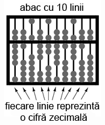
Figure 2: abac cu 10 linii; analogie
Acest principiu este analog proiectării unui abac pentru reprezentarea digitală a numerelor zecimale: trebuie mai întâi să ne decidem câte cifre dorim să reprezentăm cu acest dispozitiv primitiv. Fiecare cifră necesită o nouă linie cu mărgele.
Un abac cu 10 linii poate reprezenta un număr zecimal cu 10 cifre, sau o valoare maximă de 9.999.999.999. Dacă am dori reprezentarea unui număr mai mare decât atât, va trebui să ma adăugăm una sau mai multe linii.
Orice circuit digital se proiectează pe un anumită număr de biţi: numărul maxim de biţi alocaţi pentru reprezentarea valorilor numerice. Calculatoarele digitale iniţiale erau proiectate pe patru sau pe opt biţi. Sistemele moderne sunt proiectate pe 32 sau pe 64 de biţi.
Pentru a vorbi mai uşor de numărul de biţi dintr-o grupare, cele mai uzuale au primit şi un nume, astfel:
Bit: unitatea fundamentală a notaţiei binare; echivalentă cu o cifră zecimală Crumb, Tydbit sau Tayste: 2 biţi Nibble sau Nybble: 4 biţi Nickle: 5 biţi Byte: 8 biţi Deckle: 10 biţi Playte: 16 biţi Dynner: 32 biţi Word: (în funcţie de sistem)
Cel mai ambiguu termen este word-ul. Pentru un sistem pe 32 de biţi, un word înseamnă 32 de biţi. Dacă sistemul utilizează 16 biţi, atunci word-ul este de 16 biţi. Termenul playte şi dynner se referă tot timpul la 16, respectiv 32 de biţi, indiferent de contextul în care sunt folosiţi.
Tot în funcţie de sistem sunt folosiţi şi termenii de „double word” sau „longword” (ambii termenii desemnând o lungime dublă faţă de lungimea standard), „half-word” (jumătatea lungimii) sau quar (de patru ori lungimea standard).
3 Porti logice
3.1 Semnale digitale şi porţi
Deşi sistemul de numeraţie binar reprezintă un concept matematic abstract interesant, încă nu am spus nimic despre aplicaţiile practice în electronică. Acest capitol este dedicat prin urmare aplicării conceptelor binare circuitelor electronice. Importanţa sistemului binar de numeraţie în electronica digitală este importantă datorită uşurinţei cu care putem reprezenta biţii sub formă fizică. Deoarece un bit poate avea doar două stăi diferite, fie 0 fie 1, orice mediu fizic ce poate funcţiona în două stări saturate diferite, poate fi folosit pentru reprezentarea unui bit. În consecinţă, orice sistem fizic ce este capabil să reprezinte biţi sub formă binară, poate reprezenta de asemenea şi valori numerice. Prin urmare, are potenţialul de a manipula aceste numere. Acesta este principiul de bază al circuitelor digitale.
Circuitele electronice sunt perfecte pentru reprezentarea numerelor binare. Tranzistorii, atunci când funcţionează la limită, se pot afla într-un din cele două stări: fie în stare blocată (curent de control zero), fie în stare de saturaţie (curent de control maxim). Dacă un circuit cu tranzistor este proiectat pentru maximizarea probabilităţii de funcţionare într-una din cele două stări (evitarea funcţionării tranzistorului în zona activă de funcţionare), acesta poate fi folosit ca şi reprezentare fizică a unui bit. Căderea de tensiune măsurată la ieşirea unui astfel de circuit poate fi folosită pentru reprezentarea unui singur bit. O tensiune joasă reprezentând „0”, şi o tensiune (relativ) înaltă reprezentând „1”.
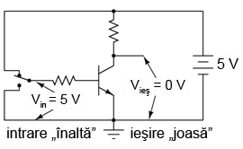
Figure 3: tranzistor aflat în saturaţie
În figura alăturată, tranzistorul este saturat datorită tensiunii de intrare de 5 V (prin intermediul comutatorului cu două poziţii). Deoarece este saturat, căderea de tensiune dintre colector şi emitor este foarte mică, rezultând o tensiune de ieşire de practic 0 V. Dacă am folosit acest circuit pentru reprezentarea numerelor binare, am spune că semnalul de intrare este „1” binar, iar semnalul de ieşire este „0” binar. Orice tensiune apropiată de tensiunea de alimentare (având ca referinţă masa), este considerată a fi „1”, iar o lipsă de tensiune este considerată a fi „0”. Alternativ, se folosesc termenii de „înalt” (1 binar) sau jos (0 binar). Termenul general pentru reprezentarea unui bit prin intermediul unei tensiuni poartă numele de „nivel logic”.
Figure 4: tranzistor aflat în saturaţie
Trecând comunatorul pe cealalţă poziţie, aplicăm o intrare de 0 binar si obţinem la ieşire 1 binar.
Ceea ce am creat mai sus poartă numele de poartă logică, sau simplu, poartă. O poartă nu este altceva decât un circuit amplificator special conceput pentru acceptarea şi generarea semnalelor de tensiune. Aceste semnale corespund numerelor binare 0 si 1. Prin urmare, porţile nu sunt concepute pentru amplificarea semnalelor analogice (semnale de tensiune între 0 şi tensiunea maximă). Mai multe porţi conectate împreună se pot folosi pentru stocare (circuite de memorare) sau manipulare (circuite de calcul). Ieşirea fiecărei porţi reprezintă în acest caz un singur bit dintr-un număr binar compus din mai mulţi biţi.
3.1.1 Poarta inversoare (NU sau NOT)

Figure 5: poartă inversoare; simbol
Alăturat este simbolul folosit pentru reprezentarea unei porţi inversoare (NOT). Aceasta se comportă identic cu circuitul analizat mai sus, şi anume: ieşirea porţii este inversă faţa de intrare (intrare 0, ieşire 1 sau intrare 1, ieşire 0). Aceste porţi sunt de fapt circuite cu tranzistoare de genul celui prezentat mai sus, dar, pentru simplificarea analizei circuitelor, se vor folosi aceste simboluri specifice fiecărei porţi.

Figure 6: poartă inversoare; simbol alternativ
Un simbol alternativ pentru o poartă inversoare este cel din figura alăturată.
Forma triunghiulară este asemănătoare simbolului amplificatorului operaţional. După cum am spus mai sus, porţile sunt de fapt amplificatoare. Metoda standard de reprezentare a unei funcţii inversoare este prin intermediul acelui mic cerc desenat pe terminalul de intrare sau de ieşire. Dacă îndepărtăm acest cerc din simbolul porţii, lăsând doar triunghiul, acest simbol nu ar mai indica o inversare, ci o amplificare. Un astfel de simbol, şi o astfel de poartă chiar există, şi poartă numele de poarta ne-inversoare, sau buffer.
3.1.2 Poarta ne-inversoare (buffer)

Figure 7: inversare dublă (două porţi inversoare conectate cap-coadă
Dacă ar fi să conectăm două porţi inversoare, una în continuarea celeilalte, cele două funcţii de inversare s-ar „anula” reciproc. În acest caz, semnalul de ieşire va fi acelaşi cu cel de intrare.
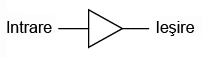
Figure 8: poartă ne-inversoare (buffer); simbol
Pentru acest scop, există o poartă logică separată, denumită buffer (sau poartă ne-inversoare). Simbolul este un triunghiu simplu, precum în figura alăturată.
3.1.3 Reprezentarea conexiunilor
Asemănător simbolului amplificatorului operational, conexiunile de intrare şi de ieşire sunt reprezentate printr-un singur fir, punct de referinţă implicit pentru fiecare cădere de tensiune fiind masa. În circuitele logice, masa este aproape tot timpul reprezentată de către conexiunea negativă a sursei de alimentare. Sursele de alimentare duale sunt rareori folosite în astfel de circuite. Datorită faptului că circuitele logice (cu porţi) sunt de fapt nişte amplficatoare, acestea necesită o sursă de putere pentru funcţionare. La fel ca în cazul AO, conexiunile surselor de alimentare sunt omise pentru simplitate.

Figure 9: poartă inversoare; circuit de alimentare complet
Dacă ar fi să reprezentăm toate conexiunile necesare pentru utilizarea acestei porţi, circuitul ar arăta precum cel din figura alăturată.
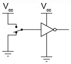
Figure 10: poartă inversoare; circuit de alimentare complet
Conductorii surselor de alimentare sunt rareori reprezentaţi în circuitele electronice, chiar şi atunci când sunt reprezentate conexiunile pe fiecare poartă. Astfel, eliminând liniile ce nu sunt necesare, obţinem rezultatul alăturat.
Vcc reprezintă tensiunea constantă de alimentare a colectorului din circuitul cu tranzistor bipolar. Punctul de referintă este, desigur, masa. Punctele marcate cu Vcc sunt toate conectate la acelaşi punct, iar acel punct este borna pozitivă a sursei de alimentare de curent continuu. Valoarea acesteia este de obicei de 5 V.
3.1.4 Tabelul de adevăr
| Intrare | Ieşire |
|---|---|
| 0 | 1 |
| 1 | 0 |
O modalitate de exprimare a funcţiei unei porţi logice, poartă numele de tabel de adevăr. Aceste tabele descriu toate combinaţiile posibile ale intrărilor şi rezultatul ieşirilor. Pentru poarta inversoare, sau NOT, prezentată mai sus, tabelul de adevăr este cel alăturat.
| Intrare | Ieşire |
|---|---|
| 0 | 0 |
| 1 | 1 |
Pentru poarta ne-inversoare, tabelul de adevăr este puţin diferit.
Pentru porţi mai complexe, tabelele de adevăr sunt mai mari decât acesta. Numărul liniilor unui astfel de tabel trebuie să fie egal cu 2n, unde n reprezintă numărul intrărilor porţii logice considerate.
3.2 Porţi logice cu două intrări
Având doar o intrare, singurele porţi „disponibile” sunt cele inversoare şi cele ne-inversoare. Pentru a lucra cu mai multe posibilităţi, trebuie să mărim numărul de intrări.
O poartă cu o singură intrare prezintă doar două posibilităţi: fie intrarea este „înaltă” (1), fie este „joasă” (0). În schimb, o poartă cu doua intrări are patru posibilităţi (00, 01, 10, 11). O poartă cu trei intrări are opt combinaţii posibile (000, 001, 010, 011, 100, 101, 110 şi 111). După cum am mai spus, numărul combinaţiilor posible este egal cu 2n, unde n este numărul de intrări.
Datorită faptului că există aşa de multe posibilităţi folosind doar două terminale, există mai multe tipuri de porţi logice cu două intrări. Vom prezenta mai jos fiecare tip.
3.2.1 Poarta logică ŞI (AND)
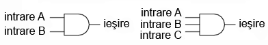
Figure 11: poarta logică ŞI cu două respectiv trei intrări; simbol
Una dintre cele mai uşor de înţeles porţi este poarta ŞI. Denumirea vine de la faptul că ieşirea porţii va fi 1 dacă şi numai dacă toate intrările sunt 1. Asemenea, ieşirea va fi 0, dacă si numai dacă toate intrările sunt 0. Alăturat este prezentat simbolul porţii ŞI cu două, respectiv trei intrări.
| A | B | Ieşire |
|---|---|---|
| 0 | 0 | 0 |
| 0 | 1 | 0 |
| 1 | 0 | 0 |
| 1 | 1 | 1 |
Tabelul de adevăr pentru poarta ŞI cu două intrări este conform tabelului alăturat.
Practic, ceea ce se înţelege din tabelul de adevăr de mai sus poate fi ilustrat în cele ce urmează. Poarta logică ŞI este supusă tuturor posibilităţilor de intrare. Pentru determinarea nivelului logic de ieşire, se foloseşte un LED:
Figure 12: exemplificarea tabelului de adevăr a porţii logice ŞI printr-un circuit practic
exemplificarea tabelului de adevăr a porţii logice ŞI printr-un circuit
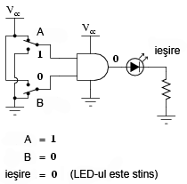
Figure 13: practic
adevăr a porţii logice ŞI printr-un circuit practic


Figure 14: exemplificarea tabelului de adevăr a porţii logice ŞI printr-un circuit practic
LED-ul este alimentat cu energie electrică doar atunci când ambele intrări logice sunt 1.
3.2.2 Poarta logică ŞI-negat (NAND)
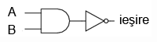
Figure 15: circuitul echivalent al unei porţi logice ŞI negat (NAND)
Poarta ŞI negat este o variaţie a porţii ŞI. Practic, comportamentul porţii este acelaşi ca al porţii ŞI, doar că la ieşire este conectată o poartă NU (inversoare).

Figure 16: poarta logică ŞI negat (NAND); simbol
Pentru simbolizarea acestui lucru se trece un mic cerculeţ pe terminalul de ieşire.
| A | B | Ieşire |
|---|---|---|
| 0 | 0 | 1 |
| 0 | 1 | 1 |
| 1 | 0 | 1 |
| 1 | 1 | 0 |
Tabelul de adevăr este exact invers faţă de cel prezentat anterior pentru poarta ŞI.
După câte se poate observa, principiul este asemănător: ieşirea este 1 dacă toate intrările sunt 0 şi invers.
3.2.3 Poarta logică SAU (OR)

Figure 17: poarta logică SAU (OR); simbol
Ieşirea unei porţi logice SAU este 1 dacă oricare dintre intrări este 1. Ieşirea este 0 doar dacă toate intrările sunt 0.
| A | B | Ieşire |
|---|---|---|
| 0 | 0 | 0 |
| 0 | 1 | 1 |
| 1 | 0 | 1 |
| 1 | 1 | 1 |
Tabelul de adevăr este cel alăturat.
Următoarele ilustraţii redau modul de funcţionare a porţii SAU, atunci când cele două intrări foarmează toate combinaţiile posibile. Indicaţia vizuală a ieşirii este furnizată de un LED:

Figure 18: exemplificarea tabelului de adevăr a porţii logice SAU printr0un circuit practic
exemplificarea tabelului de adevăr a porţii logice SAU printr-un circuit

Figure 19: practic
adevăr a porţii logice SAU printr-un circuit practic

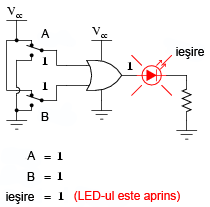
Figure 20: exemplificarea tabelului de adevăr a porţii logice SAU printr-un circuit practic
Dacă oricare dintre intrări se află în poziţia 1, LED-ul va fi alimentat cu energie electrică.
3.2.4 Poarta logică SAU negat (NOR)

Figure 21: schema echivalentă a unei porţi SAU negate (NOR)
După cum probabil v-aţi dat seama, poarta SAU negată este o partă SAU cu valoarea de ieşire negată (0 negat este 1, iar 1 negat este 0). Schema echivalentă este cea din figura alăturată.
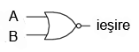
Figure 22: simbolul unei porţi SAU negate (NOR)
Pentru simplificarea reprezentării însă, există desigur un simbol special, conform figurii alăturate.
| A | B | Ieşire |
|---|---|---|
| 0 | 0 | 1 |
| 0 | 1 | 0 |
| 1 | 0 | 0 |
| 1 | 1 | 0 |
Tabelul de adevăr este exact invers faţă de cel al porţii SAU.
Principiul de bază este următorul: ieşirea este zero dacă cel puţin una dintre intrări este 1 şi este 1 doar atunci când ambele intrări sunt 0.
3.2.5 Poarta logică ŞI negativă
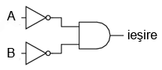
Figure 23: schema echivalentă a unei porţi logice ŞI negative
O poartă logică ŞI negativă funcţionează la fel ca o poartă ŞI având toate intrările inversate (conectate la porţi NU).

Figure 24: simbolul unei porţi logice ŞI negative
Conform standardului de notare, aceste intrări sunt simbolizate cu ajutorul unor cerculeţe.
| A | B | Ieşire |
|---|---|---|
| 0 | 0 | 1 |
| 0 | 1 | 0 |
| 1 | 0 | 0 |
| 1 | 1 | 0 |
Contrar intuiţiei, comportamentul logic al unei porţi ŞI negative nu este acelaşi cu al unei porţi ŞI negate. De fapt, tabelul său de adevăr este identic cu al unei porţi logic SAU negate.
3.2.6 Poarta logică SAU negativă
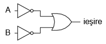
Figure 25: schema echivalentă a unei porţi logice SAU negative
Conform aceluiaşi principiu, o poartă logică SAU negativă se comportă asemenea unei porţi SAU cu toate intrările inversate.

Figure 26: simbolul unei porţi logice SAU negative
Conform standardului de notare, aceste intrări inversate sunt simbolizate prin cerculeţe.
| A | B | Ieşire |
|---|---|---|
| 0 | 0 | 1 |
| 0 | 1 | 1 |
| 1 | 0 | 1 |
| 1 | 1 | 0 |
Comportamentul logic şi tabelul de adevăr este exact acelaşi cu al unei porţi logice ŞI-negat.
3.2.7 Poarta logică SAU-exlusiv (XOR)

Figure 27: simbolul unei porţi logice SAU-exclusiv
Ultimele şase variante de porţi logice au fost variaţii directe ale celor trei funcţii de bază: ŞI, SAU şi NU. Poarta SAU-exclusiv este însă diferită.
| A | B | Ieşire |
|---|---|---|
| 0 | 0 | 0 |
| 0 | 1 | 1 |
| 1 | 0 | 1 |
| 1 | 1 | 0 |
Ieşirea este 1 doar dacă intrările se alfă la nivele logice diferite, fie 0 şi 1, fie 1 şi 0. Altfel, ieşirea este 0 dacă toate intrările se află la acelaşi nivel logic.

Figure 28: schema echivalentă a unei porţi logice SAU-exclusiv formată din porţi SI, SAU şi NU
Circuitele echivalente pentru o poartă SAU-exclusiv sunt formate din porţi ŞI, SAU şi NU. O metodă directă de simularea a unei porţi SAU-exclusiv este prin introducerea în circuit pentru început a unei porţi SAU. Apoi adăugăm porţi astfel încât să impiedicăm o valoare de 1 pe ieşire atunci când ambele intrări sunt 1.
Putem verifica faptul că tabelul de adevăr al circuitului echivalent de mai sus este acelaşi cu tabelul de adevăr prezentat iniţial.
În acest circuit, poarta ŞI de ieşire se comportă ca un repetor (memorie) pentru poarta SAU atunci când ieşirea porţii ŞI-negat este 1. Acest lucru se întâmplă pentru primele trei combinaţii (00, 01 şi 10). Totuşi, atunci când ambele intrări sunt 1, ieşirea porţii SAU-negat este 0, forţând o valoare de 0 pe ieşirea porţii SAU.

Figure 29: schema echivalentă a unei porţi logice SAU-exclusiv formată din porţi ŞI, SAU şi NU
Un alt circuit echivalent pentru o poartă SAU-exclusiv este format din două porţi ŞI negate (cu ajutorul unei porţi NU). Acestea generează la ieşire o valoare de 1 dacă intrările sunt 01, respectiv 10. O poartă finală SAU permite o ieşire de 1 dacă cel puţin o poartă ŞI are o ieşire de 1.
Porţile SAU-exclusiv sunt utilizate în circuitele unde este necesară o comparaţie bit cu bine a două sau mai multe numere binare.
3.2.8 Poarta logică SAU-negat-exclusiv (XNOR)

Figure 30: schema echivalentă a unei porţi logice SAU-negat-exclusiv
Ultima poartă pe care o vom analiza este poarta SAU-negat-exclusiv. Aceasta este echivalentă cu poarta SAU-exclusiv, doar că ieşirea este inversată.

Figure 31: simbolul unei porţi logice SAU-negat-exclusiv
Desigur, şi pentru această poartă există un simbol special.
| A | B | Ieşire |
|---|---|---|
| 0 | 0 | 1 |
| 0 | 1 | 0 |
| 1 | 0 | 0 |
| 1 | 1 | 1 |
Şi, în sfârşit, să vedem cum arată tabelul de adevăr pentru această poartă.
Aşa cum reiese din acest tabel, scopul unei porţi logice SAU-negat-exclusiv este de a genera un nivel logic 1 atunci când ambele intrări sunt la acelaşi nivel (fie 00, fie 11).
3.3 Principiul universalităţii
Porţile logice ŞI-negat şi SAU-negat posedă o proprietate specială: sunt universale. Cu alte cuvinte, având un număr suficient de astfel de porţi, fiecare din ele poate simula modul de funcţionare al oricărei alte porţi. De exemplu, putem construi un circuit care să se comporte precum o poartă SAU, folosind trei porţi ŞI-negat interconectate. Această abilitate este caracteristică doar acestor două tipuri de porţi. Practic, multe sisteme de control digital sunt construite doar cu ajutorul porţilor ŞI-negat şi SAU-negat, toate funcţiile logice necesare fiind derivate prin interconectarea acestor tipuri de porţi.
Vom lua mai jos câteva astfel de exemple.
3.3.1 Realizarea funcţiei NU
Să revedem prima dată simbolul şi tabelul de adevăr pentru poarta NU:
| Intrare | Ieşire |
|---|---|
| 0 | 1 |
| 1 | 0 |
Figure 32: poartă logică NU
SAU-negat prin interconectarea intrărilor 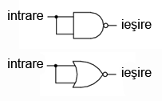
În figura alăturată este prezentat modul de realizare a acestei funcţii folosind porţi logice ŞI-negat şi SAU-negat.
SAU-negat prin legarea uneia dintre intrări la masă

Această metodă de conectare împreună a intrărilor duce la creşterea curentului de intrare. Prin urmare, atât în cazul de faţă, cât şi în exemplele ce urmează, se va folosi conectarea la masă a unuia dintre terminali (celălalt terminal de intrare va fi legat la sursa de alimentare). Funcţional, rezultatul este acelaşi.
3.3.2 Realizarea funcţiei ne-inversoare (buffer)
Să revedem prima dată simbolul şi tabelul de adevăr pentru o poartă ne-inversoare:
| Intrare | Ieşire |
|---|---|
| 0 | 0 |
| 1 | 1 |
Figure 33: simbolul unei porţi ne-inversoare
ŞI-negat şi SAU-negat conectate împreună 
Conform celor spuse mai sus, realizarea acestei funcţii folosind porţi logice ŞI-negat şi SAU-negat se realizează conectând două etaje împreună, conform figurii alăturate.
3.3.3 Realizarea funcţiei ŞI
Simbolul şi tabelul de adevăr al porţii logice ŞI:
| A | B | Ieşire |
|---|---|---|
| 0 | 0 | 0 |
| 0 | 1 | 0 |
| 1 | 0 | 0 |
| 1 | 1 | 1 |
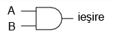
Figure 34: simbolul porţii logice ŞI
ŞI-negat 
Folosind porţi logice ŞI-negat pentru realizarea funcţiei ŞI, avem nevoie de adăugarea unui etaj inversor (poartă NU) pe ieşirea porţii ŞI-negat. Dar, am văzut mai sus cum se poate realiza o poartă NU folosind o poartă ŞI-negat. Prin urmare, schema finală este cea din figura alăturată.
ŞI-negat 
Acelaşi lucru se poate realiza folosind porţi logice SAU-negat, prin inversarea (poartă NU) tuturor intrărilor printr-o poartă SAU-negat. Din nou, am văzut mai sus cum se poate realiza o poartă NU dintr-o poartă SAU-negat.
3.3.4 Realizarea funcţiei ŞI-negat
| A | B | Ieşire |
|---|---|---|
| 0 | 0 | 1 |
| 0 | 1 | 1 |
| 1 | 0 | 1 |
| 1 | 1 | 0 |
Figure 35: simbolul unei porţi logice ŞI-negat
Desigur, nu avem ce „construi” la o funcţie ŞI-negat cu ajutorul porţilor ŞI-negat, pentru că nu este nimic de făcut.
SAU-negat 
Cu ajutorul porţilor SAU-negat însă, va trebui să inversăm atât intrările cu o poartă SAU-negat, precum şi ieşirea acesteia din urmă (cu o poartă NU). Din nou, am văzut mai sus cum se poate realiza o poartă NU cu ajutorul porţii SAU-negat.
3.3.5 Realizarea funcţiei SAU
| A | B | Ieşire |
|---|---|---|
| 0 | 0 | 0 |
| 0 | 1 | 1 |
| 1 | 0 | 1 |
| 1 | 1 | 1 |
Figure 36: simbolul porţii logice SAU
SAU-negat 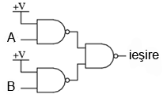
Inversarea ieşirii unei porţi SAU-negat (cu ajutorul unei alte porţi SAU-negat conectată ca şi poartă NU) are ca rezultat funcţia SAU.
SAU-negat 
Folosind porţi SAU-negat, trebuie să inversăm toate intrările pentru simularea funcţiei SAU, la fel cum a trebui să inversăm toate intrările unei porţi SAU-negat pentru a obţine funcţie ŞI.
Ţineţi minte că inversarea tuturor intrărilor unei porţi rezultă în schimbarea funcţiei esenţiale ale acesteia. Astfel, poarta ŞI devine SAU, iar poarta SAU devine ŞI, plus o ieşire inversată. Astfel, cu toate intrările inversate, o poartă ŞI-negat se comportă precum o poartă SAU; o poartă SAU-negat se comportă precum o poartă ŞI; o poartă ŞI se comportă precum o poartă SAU-negat; şi, în fine, o poartă SAU se comportă precum o poartă ŞI-negat. În cadrul algebrei booleene, aceste transformări sunt cunoscute sub numele de „teorema lui DeMorgan”.
3.3.6 Realizarea funcţiei SAU-negat
| A | B | Ieşire |
|---|---|---|
| 0 | 0 | 1 |
| 0 | 1 | 0 |
| 1 | 0 | 0 |
| 1 | 1 | 0 |
Figure 37: simbolul porţii SAU-negat
ŞI-negat 
Pentru realizarea acestei fucţii folosind porţi ŞI-negat, trebuie să inversăm toate intrările şi ieşirea. Procedeul este asemănător cu cel prin care am realizat funcţia ŞI-negat folosind porţi logice SAU-negat.
3.4 Modul de împachetare
Circuitele digitale cu porţi logice sunt confecţionate ca şi circuite integrate: toţi tranzistori şi rezistorii ce intră în componenţa circuitului sunt construiţi pe o singură bucată de material semiconductor. Prin urmare, dacă avem nevoie de un număr relativ de porţi logice, putem folosi circuite integrate sub forma capsulelor DIP. Aceste circuite integrate sunt disponibile cu un număr par de pini, cele mai comune fiind cu 8, 14, 16, 18 sau 24 de pini
Numărul de catalog al acestor capsule indică numărul şi tipul porţilor conţinute în pachet. Aceste numere de catalog sunt standardizate, ceea ce înseamnă că un circuit „74LS02” produs de Motorola este indentic ca şi funcţionalitate cu un circuit „74LS02” produs de Fairchild sau de oricare alt producător. Codul de litere ce precedă aceste numere de catalog sunt însă unice fiecărui producător în parte. De exemplu „SN74LS02” reprezintă o capsulă cu patru porţi logice SAU-negat, produsă de Motorola. Un „DM74LS02” este acelaşi circuit din punct de vedere funcţional, dar produs de Fairchild.
Mai jos sunt date ca şi referinţă câteva capsule DIP dintre cele mai utilizate:

Figure 38: capsule DIP
4 Comutatoare
4.1 Tipuri de comutatoare
Un comuntator electric este orice dispozitiv folosit pentru întreruperea deplasării electronilor prin circuit. Comutatoarele sunt practic dispozitive binare: fie sunt complet închise, fie complet deschise. Există o multitudine de tipuri de comutatoare. Vom prezenta câteva din ele mai jos.
Deşi pare ciudat să prezentăm acest subiect elementar aşa de târziu, în capitolele următoare vom explora un domeniu mai vechi al tehnologiei digitale. Aceasta din urmă se bazează pe contacte realizate cu ajutorul comutatoarelor mecanice şi nu pe circuite digitale cu porţi. Prezentarea ambelor metode conduce la o mai bună înţelegere a subiectului de faţă. Acest lucru ne va fi de folos atunci când vom învăţă despre algebra booleană, matematica din spatele circuitelor logice digitale.
Cel mai simplu tip de comutator este acela în care contactul dintre doi conductori electrici se realizează prin acţionarea unui mecanism de deplasare. Există şi comutatoare mult mai complexe, comutatoare conţinând circuite electronice capabile să închidă sau să deschidă circuitul în funcţie de un stimul fizic (precum lumină sau câmp magnetic). Indiferent de caz, rezultatul final al unui comutator este o pereche de terminali ce vor fi conectaţi prin intermediul mecanismului intern al aparatului (comutator inchis), fie vor fi separaţi (comutator deschis).
Orice comutator proiectat să fie folosit de către un operator uman, poartă numele de comutator manual. Există mai multe tipuri de astfel de comutatoare.
4.1.1 Comutator basculant

Figure 39: comutator basculant; simbol
Aceste tipuri de comutatoare sunt acţionate cu ajutorul unei manete. Această manetă se poate regăsi într-una dintre cele două sau mai multe poziţii disponibile (în funcţie de tip). Comutatorul obişnuit folosit pentru aprinderea şi stingerea luminii în casă, este un bun exemplu de comutator basculant. Majoritatea comutatoarelor basculante se pot regăsi în oricare dintre poziţii. Unele comutatoare sunt însă echipate cu um mecanism intern prin intermediul căruia maneta revine tot timpul într-o poziţie normală, bine stabilită. Funcţionarea (închiderea sau deschiderea circuitului, în funcţie de caz) comutatorului se face doar pentru o perioadă scurtă de timp, după care acesta revina la poziţie iniţială.
4.1.2 Comutator buton

Figure 40: comutator buton; simbol
Comutatoarele buton sunt dispozitive bi-poziţionale acţionate prin intermediul unui buton care apăsat iar apoi eliberat. Majoritatea butoanelor posedă un mecanism intern prin care butonul se reîntoarce la poziţia sa iniţială (ne-apăsat). Prin urmare, acest dispozitiv funcţionează doar pe perioada în care butonul este apăsat, revenind apoi la poziţia sa iniţială. Un bun exemplu de astfel de comutator este butonul de pornire al calculatorului, sau de chemare al liftului. După apăsare, acestea revin la poziţia iniţială.
Unele comutatoare pot rămâe în poziţia apăsat până când acesta este tras înapoi. Aceste tipuri de comutatoare sunt prevăzute cu un buton de tip cipercă pentru uşurarea acţiunii.
4.1.3 Comutator selector
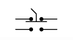
Figure 41: comutator selector; simbol
Comutatoarele selectoare sunt acţionate prin intermediul unui buton rotativ pentru selectarea uneia sau a mai multor poziţii. La fel ca şi comutatoarele basculante, acestea se pot regăsi în oricare dintre poziţii, sau pot conţine mecanise pentru funcţionarea de scurtă durată (revenirea la poziţia normală).
4.1.4 Comutator joystick
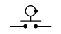
Figure 42: comutator joystick; simbol
Un comutator joystick este acţionat prin intermediul unei manete cu un grad de libertate sporit. În funcţie de direcţia de deplasare a manetei, există unul sau mai multe mecanisme de contact ce intră în acţiune. Câteodată, acest lucru depinde şi de distanţa de deplasare a manetei. Cercul şi punctul din simbolul comutatorului indică direcţia de deplasare a manetei pentru acţionarea contactului. Aceste tipuri de comutatoare sunt folosit de obicei pentru macarele şi pentru control industrial.
4.1.5 Comutatoare de limitare
Unele comutatoare sunt special concepute pentru acţionarea lor nu de către un operator uman, ci de către mişcarea unui dispozitiv mecanic. Aceste comutatoare de mişcare poartă numele de comutatoare de limitare, datorită faptului că sunt folosite pentru limitarea deplasării unei maşini. Acest lucru se realizează prin întreruperea alimentării unui anumit component, dacă acesta se deplasează prea departe. La fel ca în cazul comutatoarelor manuale, există mai multe tipuri de comutatoare de limitare.
4.1.6 Comutator de limitare cu manetă
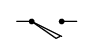
Figure 43: Comutator de limitare cu manetă; simbol
Aceste limitatoare sunt asemănătoare comutatoarelor basculante sau selectoare. În cazul acestora însă, maneta este acţionată de un dispozitiv mecanic, şi nu de către un operator uman.
4.1.7 Comutator de proximitate
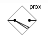
Figure 44: Comutator de proximitate; simbol
Comutatoarele de proximitate detectează apropierea unei părţi metalice, fie prin intermediul unui câmp magnetic, fie prin intermediul unui câmp electromagnetic de frecvenţă înaltă. Comtuatoarele de proximitate simple utilizează un magnet permanent pentru acţionarea unui mecanism întrerupător atunci când componenta metalică se apropie prea mult (2-3 cm). Comutatoarele de proximitate mai complexe funcţionează asemenea unui detector de metale, alimentând o bobină cu un curent de frecvenţă înaltă şi măsurând electronic amplitudinea acelui curent. Dacă o componentă metalică (nu neapărat magnetică) se apropie prea mult de bobină, curentul va creşte şi va acţiona mecanismul de monitorizare a circuitului. Simbolul alăturat este al unui comutator de proximitate de tip electronic, indicat prin romb. Simbolul unui dispozitiv non-electric este acelaşi cu simbolul comutatorului de limitare cu manetă.
O altă variantă a comutatorului de proximitate o reprezintă comutatorul optic. Acesta este compus dintr-o sursă de lumină si un element fotosensibil. Poziţia elementului mecanic (maşinii) este detectată fie prin întreruperea sau reflexia undei de lumină. Comutatoarele optice sunt folosite în aplicaţii de siguranţă, unde o sursă de lumină poate fi folosită pentru detectarea intrării persoanelor neautorizate într-o zonă periculoasă.
4.1.8 Comutatoare de proces
În multe aplicaţii industriale, este necesară o monitorizare a diferitelor mărimit fizice cu ajutorul comutatoarelor. Astfel de dispozitive pot fi folosite pentru pornirea unei alarme, indicând faptul că variabila de proces a depăşit parametrii normali de funcţionare. Sau pot fi folosite pentru oprirea proceselor sau a echipamentelor dacă acele variabile au atins un nivel periculos sau destructiv. Desigur, există mai multe variante de astfel de comutatoare de proces, prezentate mai jos.
4.1.9 Comutator de viteză

Figure 45: Comutator de viteză; simbol
Aceste comutatoare pot detecta viteza de rotaţie a unui ax prin intermediul unui mecanism montat pe acesta. Desigur, acest lucru este de preferat a se realiza fără un contact fizic între ax şi comutator, caz în care detecţia se realizează optic sau magnetic.
4.1.10 Comutator de presiune

Figure 46: Comutator de presiune; simbol
Presiunea gazului sau a lichidului poate fi utilizată pentru acţionarea unui mecanism de comutare. Această presiune trebuie să fie aplicată unui piston sau unei diafragme, care la rândul ei va converti prsiunea în forţă mecanică.
4.1.11 Comutator de temperatură
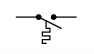
Figure 47: Comutator de temperatură; simbol
Un mecanism relativ ieftin de detectare a temperaturii constă dintr-o bandă bimetalică: o bandă subţire formată din două metale diferite poziţionate spate-în-spate. Fiecare metal posedă un coeficient de dilatare termică diferit. Această dilatare termică nu este altceva decât tendinţa corpurilor de a-şi creşte volumul în urma variaţiei temperaturii (de obicei în urma creşterii acesteia, dar există şi excepţii). Fenomenul opus poartă numele de contracţie termică.
Atunci când banda se răceşte sau se încălzeşte, coeficienţii de dilatare diferiţi ale celor două metale cauzează curbarea acetei benzi. Curbarea benzii poate fi folosită apoi pentru acţionarea unui mecanism de comutare.
Alte comutatoare de temperatură utilizează un bec de alamă umplut fie cu gaz fie cu lichid, şi un tub ce conectează acest bec de un comutator de presiune. Pe măsură de becul este încălzit, volumul gazului sau al lichidului creşte, generând o creştere de prsiune care mai apoi acţionează mecanismul de comutare.
4.1.12 Comutator de nivel

Figure 48: Comutator de nivel de lichid; simbol
Un obiect plutitor poate fi folosit pentru acţionarea unui mecanism atunci când nivelul de lichid dintr-un bazin trece peste un anumit nivel. Dacă lichidul este conductor din punct de vedere electric, acesta poate fi folosit ca si conductor pentru închiderea circuitului dintre două sonde metalice. Acestea sunt plasate în bazin la adâncimea corespunzătoare. În majoritatea cazurilor însă, acest lucru nu este practic, ba mai mult, este chiar periculos.
Acest tip de comutatoare poate fi folosit şi pentru detectarea nivelului materialelor solide, precum rumeguş, grâu, cărbune sau plante furajere. O metodă des întâlnită pentru această aplicaţie este utilizarea unei mici roţi cu pale metalice sau din lemn, plasată în interiorul recipientului la înălţimea dorită. Aceasta roată este conectată la un motor electric ce o roteşte cu o anumită viteză. Atunci recipientul este umplut cu material solid până la acel nivel, materialul blochează roata şi împiedică rotirea ei. Răspunsul motorului este cel care acţionează mecanismul de comutare.
O altă metodă utilizează un diapazon (instrument format dintr-o bară metalică în formă de U, ce vibrează la lovire). Acesta este introdus în recipient din exterior, la înălţimea dorită. Diapazonul este supus unei vibraţii la frecvenţa de rezonantă prin intermediul unui circuit electronic şi un magnet/electromagnet. Când materialul solid trece de înălţimea la care este montat diapazonul, acesta va atenua vibraţiile diapazonului. Această modificare a amplitudinii vibraţiilor şi/sau frecvenţei este detectată de circuitul electronic.
- Comutator nuclear
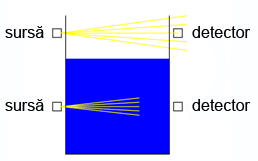
Figure 49: Comutator de nivel nuclear; simbol
O ultimă metodă de realizare a unui comutator de nivel pe care o luăm aici în considerare, îl reprezintă comutatorul nuclear. Acesta este compus dintr-un material radioactiv ca şi sursă şi un detector de radiatie. Ambele elemente sunt montate în lungul diametrului recipientului pentru lichid sau pentru material solid.. Dacă înălţimea materialului trece de nivelul mecanismului sursă/detector, acesta va atenua puterea recepţionată de detectorul de radiaţie. Această descreştere a radiaţiei pe detector poate fi folosită pentru acţionarea unui mecanism de comutare, fie pentru măsurarea nivelului, fie pentru declanşarea unei alarme sau chiar şi pentru controlul nivelului din recipient.
Atât sursa cât şi detectorul sunt montate în exteriorul recipientului, singurele elemente ce pătrung în interior sunt radiaţiile. Sursele de radiaţie sunt extrem de slabe şi nu prezintă niciun risc imediat operatorilor sau personalului de întreţinere.
4.1.13 Comutator de curgere
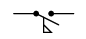
Figure 50: Comutator de curgere; simbol
Introdus într-o conductă, un comutator de curgere va detecta viteza de curgere a unui gaz sau a unui lichid. În momentul în care această viteză depăşeşte o anumită limită, se va acţiona mecanismul de comutare. De obicei se folosesc pale sau aripi ce sunt împinse de curgerea substanţei respective. O metodă alternativă constă în detectarea căderii de presiune pe o anumită porţiune a conductei.
4.1.14 Observaţie
Desigur, există tot timpul mai multe metode de implentare a unui comutator pentru monitorizarea sau controlul unui procez ficiz. De obicei nu există un singur comutator „perfect” pentru nicio aplicaţie, deşi unele prezintă câteva avantaje clare faţă de altele. Comutatoarele trebuie alese inteligent în funcţie de aplicaţia în cauză. Acest lucru va determina funcţionarea lor eficientă şi sigură.
4.2 Poziţia „normală” a contactelor
Orice tip de comutator poate fi proiectat astfel încât contactele sale să se închidă (stabilirea continuităţii circuitului), sau să se deschidă (întreruperea continuităţii), atunci când este acţionat. Pentru comutatoarele prevăzute cu un mecanism de re-întoarcere la poziţia iniţială, direcţia de re-întoarecere a comutatorului, atunci când nu este aplicată nicio forţă externă, poartă numele de poziţie normală. Prin urmare, contactele ce sunt deschise în poziţia normală, poartă numele de „normal-deschise”. Contactele ce sunt închise în poziţia normal, poartă numele de „normal-închise”.
Pentru comutatoarele de proces, poziţia normală, este acea poziţia în care nu există nicio influenţă de proces asupra comutatorului. O metodă simplă de determinarea a poziţiei normale a unui comutator de proces, constă în determinarea poziţiei comutatorului atunci când acesta nu a fost încă instalat. Să luăm câteva exemple de poziţii normale de proces. Comutator de viteză: axul este staţionar; comutator de presiune: presiunea aplicată este zero; comutator de temperatură: temperatură ambientală (temperatura camerei); comutator de nivel: recipient gol; comutator de curgere: viteza de curgere a lichidului este zero.
Este important să facem diferenţa între poziţia „normală” a comutatorului şi funcţionarea sa „normală” într-un proces. Să considerăm exemplul unul comutator de curgere ce este utilizat pentru semnalizarea (pe cale sonoră sau vizuală) scăderii debitului de apă dintr-un sistem de răcire. Funcţionarea normală a sistemului de răcire constă într-un debit constant şi suficient de lichid de răcire prin conducte. Să presupunem că urmărim închiderea contactelor comutatorului în cazul pierderii de lichid de răcire (pentru completarea unui circuit electric ce activează alarma vizuală sau auditivă, de exemplu). În acest caz, va trebui să folosim un comutator de curgere cu contacte în poziţia normal-închis şi nu în poziţia normal-deschis. În momentul în care existe un debit normal şi suficient de lichid prin conducte, contactele comutatorului rămân în poziţia deschis. Atunci când debitul lichidului scade sub un anumit nivel critic, contactele se re-întorc în poziţia lor normală, şi anume, normal-închis. Gândiţi-vă tot timpul la starea normală a unui comutator ca la acea stare în care se regăseşte dispozitivul când nu este introdus în sistem (este încă în magazin, de exemplu).
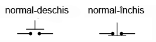
Figure 51: simbolul comutatorului tip buton în poziţia normal-deschis, respectiv normal-închis
Simbolul comutatorelor este diferit în funcţie de scopul şi de modul de acţionare. Un comutator normal-deschis este reprezentat în aşa fel încât să reprezinte un contact deschis, care în momentul acţionării să se închidă. Invers, un comutator normal-închis este reprezentat ca şi un contact închis ce se deschide la acţionarea dispozitivului. Alăturat este reprezentat simbolul comutatorului tip buton în poziţia normal-deschis, respectiv normal-închis.

Figure 52: simbolul general al comutatorului în poziţie normal-deschis, respectiv normal-închis
Există de asemenea un simbol generic pentru poziţia oricărui tip de comutator, fie normal-deschis, fie normal-închis, asemeni figurii alăturate. Comutatorul din stânga se închide când este acţionat şi este deschis în poziţia normală (atunci când nu este acţionat din exterior). Comutatorul din dreapta se deschide când este acţionat şi este închis în poziţia sa normală (când nu este acţionat). Dacă se folosesc astfel de simboluri pentru reprezentarea comutatoarelor, tipul acestora este de obicei trecut în vecinătatea simbolului, în cuvinte.
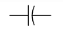
Figure 53: simbolul condensatorului folosit în circuitele logice digitale
Atenţie, nu confundaţi simbolul stânga (în figura de mai sus) cu simbolul condensatorului. În cazul în care se doreşte reprezentarea unui condensator într-un circuit logic, se va folosi simbolul alăturat. În electronica standard, acest simbol este rezervat condensatoarelor polarizate. În circuitele logice digitale, acest simbol este folosit pentru orice tip de condensator, chiar şi în situaţia când condensatorul nu este un condensator polarizat.
4.2.1 Secvenţa realizării contactelor
În cazul comutatoarelor cu mai multe poziţii, trebuie luat în considerare şi modul de deschidere şi de închidere a contactelor, pe măsură ce selectorul se deplasează de pe o poziţie pe alta.

Figure 54: comutator cu întrerupere; realizarea contactelor
Selectorul comutatorului din figura alăturată realizează contactul (închiderea circuitului) într-una din cele cinci poziţii diferite. Poziţiile sunt numerotate de la 1 la 5. Configuraţia cea mai des întâlnită a unui comutator cu pas reglabil, este aceea în care contactul cu o anumită poziţie este deschis înainte de realizarea contactului (închiderea contactului) cu poziţia următoare. Sub această configuraţie, comutatorul este cunoscut sub numele de comutator cu întrerupere. Ca şi exemplu, să presupunem cazul în care comutatorul se află pe poziţia 3. Dacă selectorul este întors în sensul acelor de ceasornic, acesta va deschide contactul 3, deschizând practic circuitul, şi se va deplasa între poziţia 3 şi 4. În acest moment, ambele circuite (3 şi 4) sunt deschise, ambele contacte fiind deschis. Dacă se continuă deplasarea selectorului în sensul acelor de ceasornic, se va ajunge în poziţia 4, moment în care contactul se închide.
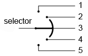
Figure 55: comutator cu suprapunere (comutator fără întrerupere); realizarea contactelor
Există însă situaţii în care nu este permisă în nicio clipă deschiderea completă a circuitului ataşat selectorului. Pentru astfel de aplicaţii, există o altă variantă de comutator, denumită comutator cu suprapunere, sau comutator fără întrerupere. În acest caz, selectorul nu deschide circuitul precedent înainte de realizarea contactului cu circuitul următor (în sensul de rotire). În exemplu precedent, contactul 4 este realizat înaintea deschiderii contactului 3. Compromisul constă în faptul că circuitul trebuie să poată tolera asemenea contacte adiacente realizata simultan (1 cu 2, 2 cu 3, 3 cu 4 şi 4 cu 5).
4.2.2 Comutatoare multipolare
Când contactul(e) mobil poate fi adus pe unul dintre contactele fixe, acele poziţii sunt denumite „direcţii”. Numărul contactelor mobile poartă numele de poli. Ambele comutatoare prezentate mai sus cu un contact mobil şi cinci contacte staţionare pot fi desemnate ca si comutatoare monopolare cu cinci direcţii.
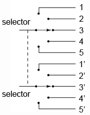
Figure 56: comutator bipolar cu cinci direcţii
Să presupunem că două comutatoare bipolare cu cinci direcţii sunt legate împreună, astfel încât ele să fie acţionate prin intermediul aceluiaşi mecanism. Întregul dispozitiv astfel format poartă numele de comutator bipolar cu cinci direcţii. Simbolul unui astfel de comutator este prezentat în figura alăturată. De menţionat că linia întreruptă trasată între cele două selectoare, desemnează faptul că acestea sunt acţionate simultan de acelaşi mecanism extern.
Să luăm şi alte exemple de comutatoare:
Figure 57: comutator monopolar cu o direcţie
Comutator monopolar cu o direcţie

Figure 58: comutator bipolar cu o direcţie
Comutator bipolar cu o direcţie

Figure 59: comutator monopolar cu două direcţii
Comutator monopolar cu două direcţii
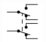
Figure 60: comutator bipolar cu două direcţii
Comutator bipolar cu două direcţii
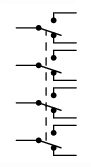
Figure 61: comutator cvadripolar cu patru direcţii
Comutator cvadripolar cu patru direcţii
5 Relee electromecanice
5.1 Construcţia releelor

Figure 62: o bobină produce un câmp magnetic la trecerea curentului prin aceasta
La trecerea curentului electric printr-un canductor, va lua naştere un câmp magnetic în jurul acestuia. În cazul în care conductorul este construit sub forma unei bobine, câmpul magnetic produs se va orienta în lungimea bobine. Cu cât intensitatea curentului este mai mare, cu atât puterea câmpului magnetic este mai mare, toţi ceilalţi factori rămânând neschimbaţi.
Bobinele reacţionează la variaţia curentului prin ele datorită energiei stocate sub forma acestui câmp magnetic. La construirea unui transformator din două bobine înfăşurate în jurul unui miez magnetic comun, utilizăm de fapt acest câmp magnetic pentru a transfera energie electrice de la o înfăşurare la alta. Totuşi, există şi alte metode mai simple şi mai directe de utilizare a câmpurilor electromagnetice. Câmpul magnetic produs de o bobină poate fi folosit pentru exercitarea unei forţe mecanice asupra oricărui obiect magnetic. În acelaşi fel folosim şi magneţi permanenţi pentru atragerea obiectelor magnetice. Diferenţa constă în faptul că acest electromagnet (format din bobină) poate fi pornit şi oprit prin închiderea şi deschiderea circuitului bobinei.
Dacă plasăm un obiect magnetic (un obiect metalic, de exemplu) în apropierea unei astfel de bobine, acest obiect se va deplasa atunci când prin bobină trece un curent electric. Obiectul magnetic deplasabil poartă numele de armătură, iar majoritatea lor pot fi deplasate fie prin intermediul curentului continuu, fie cu ajutorul curentului alternativ. Polaritatea câmpului magnetic este irelevantă din punct de vedere al atracţiei armăturii. Aceste dispozitive pot fi folosite pentru deschiderea pe cale electrică a încuietorilor, deschiderea sau închiderea valvelor, deplasarea braţelor mecanice, etc. Totuşi, în situaţia în care aceste dispozitive sunt utilizate pentru acţionarea unui comutator, ele sunt cunoscute sub denumirea de relee electromecanice.
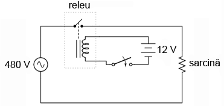
Figure 63: releu electromecanic într-un circuit electric
Releele sunt foarte practice pentru controlul unei cantităţi mari de curent sau tensiune prin intermediul unui semnal electric de putere mică. Bobina releului ce produce câmpul magnetic poate să consume o putere mai mică de 1 watt, de exemplu, pe când contactele acţionate de acest câmp magnetic pot susţine o putere de sute de ori mai mare. Funcţional, un releu electromecanic se comportă precum un amplificator cu două stări: pornit şi oprit.
La fel ca în cazul tranzistorilor, abilitatea releelor de a controla un semnal electric prin intermediul unui alt semnal electric este utilizate pentru realizarea funcţiilor logice. Pentru moment însă, vom explora abilitatea de „amplificare” a releelor.
În figura de mai sus, bobina releului este energizată prin intermediul unei surse de tensiune de 12 V (c.c.). În schimb, comutatorul monopolar cu o singură direcţie este conectat într-un circuit electric alimentat de la o sursă de tensiune de 480 V (c.a.). În acest caz, curentul necesar energizării bobinei este de sute de ori mai mic decât curentul nominal al contactului comutatorului.
Un singur dispozitiv bobină/armătură poate fi folosit pentru acţionarea mai multor seturi de contacte. Aceste contacte pot fi normal-deschise, normal-închise, sau într-o combinaţie a celor două. Asemeni comutatoarelor, poziţia „normal” a releelor reprezintă acea stare a contactelor atunci când bobina nu este energizată, sau mai bine spus, atunci când releul este încă „în cutie”.
Pe lângă abilitatea de control a unui curent mare prin intermediul unui curent mic, releele oferă şi o izolaţie electrică între circuitul bobine şi circuitul contactelor. Acest lucru înseamnă că cele două elemente sunt izolate din punct de vedere electric una de cealaltă. Unul din circuite poate fi de c.c, iar celălalt de c.a., precum în exemplul anterior, sau chiar şi la tensiuni diferite.
5.2 Contactoare
Atunci când releele sunt folosite pentru comutarea unor puteri mari prin contactele sale, acestea poartă numele de contactoare. Contactorele au de obicei mai multe contacte, iar aceastea sunt de obicei (deşi nu neapărat) în poziţia normal-deschis: circuitul este deschis atunci când bobina nu este energizată.
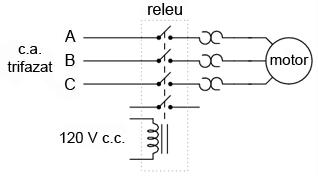
Figure 64: releu electromecanic într-un circuit trifazat pentru controlul unui motor electric
Probabil cea mai des întâlnită aplicaţie a contactoarelor constă în controlul motoarelor electrice.
5.3 Relee temporizate
Unele relee sunt prevăzute cun un fel de „amortizor”. Acest mecanism, ataşat arăturii releului previne deplasarea imediată şi completă a armăturii atunci când bobina este energizată sau de-energizată. Datorită acestui lucru, releul are proprietatea unei acţionări temporizate (întârziate în timp). Astfel de relee temporizate pot fi construite pentru temporizarea deplasării armăturii în momentul energizării bobinei, în momentul de-energizării bobinei, sau pentru ambele situaţii.
Releele temporizate au ca şi specificaţie nu doar poziţia normal-închisă sau normal-deschisă a contactelor, ci şi modul în care acţionează temporizarea (la închiderea sau la deschiderea contactelor). Mai jos este o descriere a celor patru tipuri de relee temporizate.
5.3.1 Releu temporizat la închidere normal deschis
Acest tip de contact este normal deschis atunci când bobina nu este energizată. Contactul se închide doar după aplicarea unui curent electric prin bobina releului, şi doar după o anumită perioadă de timp de la aplicarea acestuia. Cu alte cuvinte, direcţia deplasării contactului este identică cu cea a unui contact normal deschis, dar există o întârziere (temporizare) la închiderea contactului. Datorită faptului că temporizarea are loc în direcţia de energizare a bobinei, acest tip de contact mai poartă numele de normal-deschis cu acţionare întârziată.
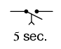
Figure 65: releu temporizat la închidere normal deschis
Releul din figura alăturată este un releu temporizat la închidere, normal-deschis. Acesta se închide după cinci secunde de la energizarea bobinei. Deschiderea se realizează imediat după de-energizarea bobinei.

Figure 66: diagrama timp de funcţionare a contactelor unui releu temporizat la închidere, normal deschis
Alăturat este o diagramă de timp ce prezintă modul de funcţionare a contactelor acestui tip de releu temporizat.
5.3.2 Releu temporizat la deschidere, normal-deschis
Asemenea releului precedent, şi acest dispozitiv este normal-deschis atunci când bobina este de-energizată. La aplicarea unui curent pe bobină, contactele releului se închid. Faţă de cazul precedent însă, temporizarea (întârzierea) are loc după de-energizarea bobine şi nu după energizarea ei. Datorită faptului că temporizarea are loc după de-energizarea bobinei, acest tip de contact mai poartă numele de normal deschis cu întârziere la revenire.
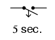
Figure 67: releu temporizat la deschidere normal deschis
Releul temporizat la deschidere, normal deschis, din figura alăturată se închide imediat după energizarea bobinei. Deschiderea contactelor are loc însă la cinci secunde după de-energizarea bobinei.
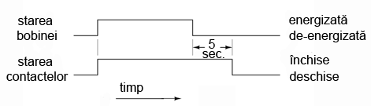
Figure 68: diagrama timp de funcţionare a contactelor unui releu temporizat la deschidere, normal deschis
Diagrama de timp în acest caz, este cea din figura alăturată.
5.3.3 Releu temporizat la deschidere, normal-închis

Figure 69: releu temporizat la deschidere normal închis
Acest tip de contact este normal închis atunci când bobina nu este energizată. Contactul se deschide la aplicarea unui curent prin bobină, dar doar după o anumită perioadă de timp. Cu alte cuvinte, direcţia de deplasare a contactului este identică cu a unui contact normal-închis, doar că există o temporizare în direcţia deschiderii acestuia. Datorită faptului că temporizarea are loc în direcţia energizării bobinei, acest contact mai poartă numele de contact normal închis cu acţionare întârziată.

Figure 70: diagrama timp de funcţionare a contactelor unui releu temporizat la deschidere, normal închis
5.3.4 Releu temporizat la închidere, normal-închis
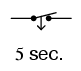
Figure 71: releu temporizat la închidere normal închis
Asemenea releului temporizat la deschidere normal-închis, acest tip de contact este normal-închis atunci când bobina nu este energizată. Deschiderea se realizează prin aplicarea unui curent prin bobina releului. Totuşi, la de-energizarea bobinei, contactele se închid cu o anumită întârziere de timp. Acest tip de contact mai poartă numele de contact normal închis cu întârziere la revenire.
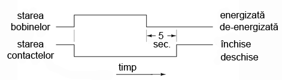
Figure 72: diagrama timp de funcţionare a contactelor unui releu temporizat la închidere, normal închis
5.3.5 Alte tipuri de relee temporizate
Releele temporizate mecanice, mai vechi, utilizau amortizoare mecanice sau dispozitive cu pistoane/cilindrii umplute cu fluid pentru îtârzierea deplasării armăturilor. Modelele mai nou utilizează circuite electronice cu reţele rezistor-condensator pentru genererarea întârzierii. Energizarea (instantanee) a releului electromecanic se realizează cu ajutorul semnalului de ieşire al circuitului electronic. Aceste relee electronice sunt mai adaptabile decât variantele mecanice, şi mult mai durabile. Multe modele sunt capabile de efectuarea unor operaţii de temporizare avansate:

Figure 73: releu temporizat normal-deschis cu o singură închidere
Releu temporizat normal-deschis cu o singură închidere. Aceste relee se închid o singură dată, un anumit interval de timp şi apoi se re-deschid, la o tranziţie a intrării de la starea de-energizată la starea energizată.
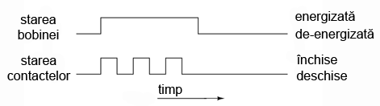
Figure 74: releu temporizat normal-deschis cu deschideri/închideri repetate
Releu temporizat normal-deschis cu deschideri/închideri repetate. Acest releu se închide şi se deschide pentru un anumit interval de timp atâta timp cât bobina este energizată.

Figure 75: releu temporizat de supraveghere
Releu temporizat de supraveghere. Acest releu îşi schimbă starea în cazul în care semnalul de intrare nu variază continuu de la starea energizată la starea de-energizată.
Această ultimă metodă de temporizare este utilă pentru monitorizarea sistemelor bazate pe calculatoare. Dacă se foloseşte un calculator pentru controlul unui proces critic, este recomandată de obicei instalarea unui sistem automat de alarmare în cazul în care calculatorul se blochează din diferite motive. O metodă relativ simplă de instalare a unui astfel de sistem constă în energizarea şi de-energizarea unei bobine prin intermediul unui semnal trimis de calculator. Dacă sistemul se blochează, semnalul de intrare pe releu nu se va mai modifica (se va bloca la ultima stare). La puţin timp după aceasta, contactul releului se va închide semnalizând o problemă.
5.4 Relee semiconductoare
Pe cât de utile sunt, releele electromecanice au totuşi multe inconveniente. Acestea sunt relativ scumpe, au o durată de viaţă a contactelor limitată, ocupă mult loc, iar timpii de comutaţie sunt mari în comparaţie cu dispozitivele semiconductoare moderne. Aceste limitări se aplică în special releelor de putere. Pentru a întâmpina aceste neajunsuri, mulţi producători oferă relee semiconductoare ce folosesc tiristori, triace sau tranzistori în loc de contactele mecanice.

Figure 76: releu semiconductor
Aceste dispozitive de ieşire (tiristori, triace, tranzistori) sunt cuplate optic la o sursă de lumină (LED) în interiorul releeului. Releul este pornit prin energizarea acestui LED, de obicei prin intermediul unei surse de tensiune de c.c. scăzute. Această izolare optică între intrare şi ieşire se ridică la nivelul celor mai bune relee electromecanice posibile.
Fiind dispozitive semiconductoare, nu există părţi mobile care să se deterioreze la uzură. Timpii de comutaţie sunt mult mai mici decât viteza maximă posibilă de deplasare a armăturilor în cazul releelor mecanice. Nu există pericolul apariţiei arcelor electrice între contacte şi nici probleme corozive. Totuşi, aceste dispozitive semiconductoare sunt mai scumpe, mai ales pentru curenţi înalţi.
Un avantaj important al releelor cu tiristoare. este tendinţa naturală de deschidere a contactelor, într-un circuit de c.a., doar la trecerea curentului prin zero. Histereza „naturală” a tiristoarelor menţine continutiatea circuitului chiar şi după de-energizarea LED-ului, până în momentul în care c.a. scade sub un anumit prag (curentul de menţinere). Practic, acest lucru înseamnă că circuitul nu se va întrerupe în mijlocul unei semi-perioade (atunci când valoarea curentului este maximă, de exemplu). O asemenea întrerupere într-un circuit cu o inductanţă mare, va produce în mod normal o creştere mare şi de scurtă durată tensiunii. Acest lucru se datorează „căderii” bruşte a câmpului magnetic din jurul inductanţei. Acest lucru nu are loc însă în cazul unul releu semiconductor echipat cu tiristori.
Un dezavantaj al releelor semiconductoare este tendinţa de scurt-circuitare în caz de defect. Releele electromecanice tind să se deschidă la defect. Dintre cele două stări, deschiderea la defect este considerată mai sigură faţă de scurt-circuitarea la defect. Din acest motiv, în anumite aplicaţii, releele electromecanice sunt încă folosite în dauna celor semiconductoare.
6 Logica ladder
6.1 Diagrame ladder
Diagramele ladder sunt diagrame speciale folosite de obicei în sistemele logice de control industrial. Denumirea de ladder (din engleză: scară) vine de la asemănarea acestora cu o scară: două linii verticale desemnând sursa de putere, şi linii orizontale reprezentând circuitele de control.

Figure 77: diagrama ladder de control a unei lămpi prin intermediul unui comutator manual
Ca şi exemplu de început, o diagramă ladder simplă reprezentând o lampă controlată de un comutator manual arată precum în figura alăturată. Notaţiile L1 şi L2 desemnează bornele unei surse de alimentare de 120 V c.a. L1 este faza iar L2 este conductorul neutru (legat la masă). Aceste notaţii nu au nicio legătură cu notaţia bobinelor.
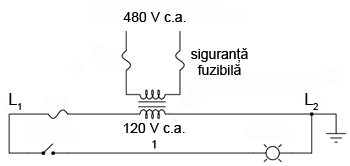
Figure 78: diagrama ladder de control a unei lămpi prin intermediul unui comutator manual; schema completă
Transformatorul sau generatorul ce alimentează acest circuit este omis pentru simplitate. În realitate, circuitul este cel alăturat.
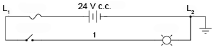
Figure 79: diagrama ladder de control a unei lămpi prin intermediul unui comutator manual; alimentare în c.c. la 24 V
Deşi circuitele logice industriale utilizează o tensiune de 120 V în c.a., există şi sisteme realizate la tensiuni mai mici în c.a. sau chiar şi în c.c.
Atâta timp cât contactele comutatoarelor şi bobinele releelor sunt dimensionate corespunzător, tensiunea de alimentare a sistemului este irelevantă.
Observaţi cifra „1” notată pe conductorul dintre comutator şi lampă. În realitate acel conductor este notat cu cifra „1” folosind etichete adezive sau tuburi termocontractibile, în funcţie de preferinţe. Conductorii ce duc înspre comutator vor fi notaţi cu „L1, respectiv „1”. Conductorii ce duc înspre lampă vor fi notaţi cu „1”, respectiv „L2. Aceste numerotaţii sunt făcute pentru a uşura construirea şi întreţinerea întregului ansamblu. Fiecare conductor are propriul său număr unic. Numerotarea conductorilor nu se schimbă atunci când aceştia intră/ies dintr-un nod, indiferent dacă mărimea, culoarea sau lungimea lor se schimbă. Desigur, este de preferată utilizarea unei singura culori pentru desemnarea aceluiaşi conductor, dar acest lucru nu este tot timpul practic. Ceea ce contează este ca orice punct comun din punct de vedere electric dintr-un circuit de control să fie desemnat prin acelaşi număr de fir (conductor).

Figure 80: diagrama ladder
Să luăm de exemplu diagrama ladder alăturată. Conductorul notat cu „25” reprezintă de fapt acelaşi fir din punct de vedere electric, chiar dacă acesta este conectat la mai multe dispozitive.
În diagramele ladder, sarcina (lampă, releu, etc.) este aproape tot timpul conectată la dreapta „scării”. Deşi din punct de vedere electric locaţia sarcinii nu are nicio importanţă, contează totuşi care capăt al „scării” este conectat la masă.

Figure 81: diagrama ladder
Să considerăm exemplul alăturat. În acest caz, lampa (sarcina) este conectată în dreapta circuitului, la fel şi masa sursei de alimentare. Aceasta nu este o simplă conincidenţă.

Figure 82: diagrama ladder; masă accidentală
Să presupunem că la un moment dat există o conexiune accidentală între conductorul 1 şi masă. Această conexiune poate fi dată de uzura izolaţiei şi contactul conductorului cu un mediu conductor conectat la pământ. Cu ambele capete ale lămpii conectate la masă (acelaşi potenţial, prin urmare, cădere de tensiune zero), lampa este practic scurt-circuitată şi nu se poate aprinde. În cazul închiderii comutatorului, acest scurt-circuit va duce la arderea siguranţei fuzibile.

Figure 83: diagrama ladder; masă accidentală
Dar, să vedem ce s-ar întâmpla în cazul unei defecţiuni identice (contactul accidental dintre conductorul 1 si masă) în cazul în care poziţia comutatorului este schimbată cu cea a lămpii. Şi în acest caz, L2 este conectat la masă. Masa accidentală va forţă aprinderea lămpii, iar comutatorul nu va avea niciun efect asupra funcţionării acesteia.
Este mult mai bine şi mai sigur din punct de vedere electric să avem un sistem a cărui siguranţă fuzibilă se arde în cazul unui defect de împământare , decât un sistem a cărui componente (lămpi, relee, etc.) nu pot fi controlate în cazul aceluiaşi defect. Din această cauză, sarcina(le) unei diagrame ladder trebuie tot timpul conectată lângă conductorul legat la masă (comun din punct de vedere electric cu acesta).
6.2 Funcţii logice digitale
6.2.1 Funcţia logică SAU

Figure 84: diagramă lader; funcţia SAU
Putem construi funcţii logice simple pentru circuitul cu lampă din secţiunea precedentă, folosind contacte multiple. Documentarea acestor circuite se face relativ simplu prin conectarea unor linii adiţionale diagramei iniţiale.
| A | B | Ieşire |
|---|---|---|
| 0 | 0 | 0 |
| 0 | 1 | 1 |
| 1 | 0 | 1 |
| 1 | 1 | 1 |
Dacă folosim notaţia binară standard pentru starea comutatoarelor şi a lămpii (0 pentru ne-acţionat sau de-energizat, 1 pentru acţionat sau energizat), putem utiliza un tabel de adevăr pentru reprezentarea logicii circuitului.
După cum se poate observa din diagrama ladder, lampa se va aprinde (energiza) în cazul în care contactul A sau contactul B este acţionat. Electronii nu au nevoie decât de o singură cale (de la L1 spre 1) pentru a ajunge spre lampă. Prin urmare, indiferent care contact se închide, A sau B, lampa se va aprinde.
Figure 85: simbolul porţii logice SAU
Ceea ce am implementat de fapt în acest caz nu este altceva decât o poartă logică SAU, utilizând două contacte normal-deschise şi o lampă.
6.2.2 Funcţia logică ŞI
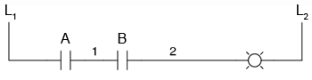
Figure 86: diagramă lader; funcţia ŞI
Putem imita funcţia unei porţi logice ŞI prin conectarea celor două contacte normal-deschise în serie şi nu în paralel.
| A | B | Ieşire |
|---|---|---|
| 0 | 0 | 0 |
| 0 | 1 | 0 |
| 1 | 0 | 0 |
| 1 | 1 | 1 |
Figure 87: simbolul porţii logice ŞI
Putem verifica cu ajutorul tabelului de adevăr că acest lucru este într-adevăr corect.
În acest caz, lampa se va aprinde doar dacă ambele contacte sunt acţionate simultan. Curentul va putea trece de la L1 la 2 doar dacă ambele contacte sunt închise.
6.2.3 Funcţia logică NU

Figure 88: diagramă ladder; funcţia logică NU
Funcţia logică de inversare poate fi obţinută prin simpla utilizare a unui contact normal-închis, faţă de un contact normal-deschis precum cele folosite mai sus.
| A | Ieşire |
|---|---|
| 0 | 1 |
| 1 | 0 |
Figure 89: simbolul funcţiei logice NU
Din nou, putem verifica prin intermediul tabelului de adevăr că acest lucru este corect.
6.2.4 Funcţia logică ŞI-negat
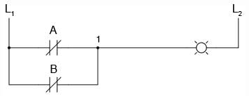
Figure 90: diagramă ladder; funcţia logică ŞI-negat
Dacă luăm funcţia SAU prezentată mai sus şi inversăm fiecare intrare vom obţine funcţia ŞI-negat. Intrările se inversează prin utilizarea contactelor normal-închise în loc de contacte normal-deschise.
| A | B | Ieşire |
|---|---|---|
| 0 | 0 | 1 |
| 0 | 1 | 1 |
| 1 | 0 | 1 |
| 1 | 1 | 0 |
Figure 91: simbolul funcţiei logice ŞI-negat
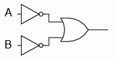
Figure 92: funcţia logică ŞI-negat
Lampa va fi energizată dacă unul dintre contacte nu este acţionat, şi se va stinge doar dacă ambele contacte sunt acţionate simultan.
6.2.5 Funcţia logică SAU-negat
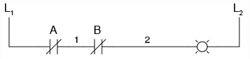
Figure 93: diagramă ladder; funcţia logică SAU-negat
Asemănător, dacă luăm funcţia ŞI implementată mai sus, şi inversăm intrările, obţinem funcţia logică SAU-negat. Inversarea intrărilor se realizează şi în acest caz prin utilizarea contactelor normal-închise în loc de contacte normal-deschise.
| A | B | Ieşire |
|---|---|---|
| 0 | 0 | 1 |
| 0 | 1 | 0 |
| 1 | 0 | 0 |
| 1 | 1 | 0 |
Figure 94: simbolul porţii logice SAU-negat
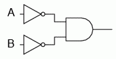
Figure 95: funcţia logică SAU-negat
Din cele observate mai sus, putem trage unele concluzii, şi anume: contactele paralele sunt echivalente cu o poartă logică SAU; contactele serie sunt echivalente cu o poartă ŞI; contactele normal-închise sunt echivalente cu o poartă NU (negare).
6.2.6 Funcţia logică SAU-exclusiv
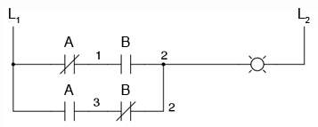
Figure 96: diagramă ladder; funcţia logică SAU-exclusiv
Putem construi circuite logice combinaţionale prin gruparea contactelor în aranjamente serie-paralel. În exemplul alăturat, funcţia SAU-exclusiv este construită prin combinarea porţilor ŞI, SAU şi NU.
| A | B | Ieşire |
|---|---|---|
| 0 | 0 | 0 |
| 0 | 1 | 1 |
| 1 | 0 | 1 |
| 1 | 1 | 0 |
Figure 97: simbolul porţii logice SAU-exclusiv
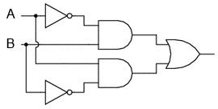
Figure 98: funcţia logică SAU-exclusiv
Linia de sus (contactul normal-închis A în serie cu, contactul normal-deschis B) este echivalentă cu partea de sus a combinaţiei de porţi logice NU/ŞI. Linia de jos (contactul normal-deschis A în serie cu, contactul normal-închis B) este echivalentă cu partea de jos a combinaţiei de porţi NU/ŞI. Conexiunea în paralel a celor două linii în punctul 2, formează un circuit echivalent SAU. Acest lucru permite energizarea lămpii fie prin linia 1 fir prin linia 2.
Pentru realizarea funcţiei SAU-exclusiv a trebuit să folosim două contacte pe o singură intrare: un contact pentru intrarea directă, iar celălalt contact pentru intrarea inversată. Cele două contacte A din diagrama de mai sus sunt acţionate fizic de acelaşi mecanism. Acelaşi lucru este valabil şi pentru contactele B. Această legătură „fizică” dintre contacte este scoasă în evidentă prin marcarea identică a contactelor. Nu există nicio limită a numărului de contacte ce pot fi reprezentate pe acelaşi releu. Fiecare nou contact adăugat unui releu sau unui comutator, fie că este contact normal-închis sau normal-deschis) este reprezentat prin acelaşi simbol.
6.2.7 Marcarea compusă
În unele situaţii, se foloseşte o marcare compusă de genul „A-1” şi „A-2” în loc de „A” pentru ambele contacte ale aceluiaşi dispozitiv. Acest lucru este folositor mai ales în cazul în care dorim să scoatem în evidenţă care seturi de contacte, din fiecare dispozitiv, este utilizat pentru care parte a circuitului. Pentru simplitate însă, nu vom folosi o asemenea notaţie în cele ce urmează. Dacă vedeţi mai multe contacte marcate identic (A, B, etc.), puteţi să fiţi siguri că acele contacte sunt acţionate de acelaşi mecanism.
6.2.8 Inversarea ieşirii
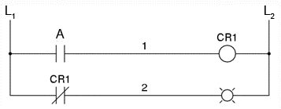
Figure 99: diagramă ladder; negarea ieşirii unei funcţii logice
Dacă dorim să inversăm ieşirea unei funcţii logice realizate cu ajutorul unui comutator, trebuie să folosim un releu cu un contact normal-închis. De exemplu, dacă vrem să energizăm o sarcină bazându-ne pe negarea (funcţia NU) unui contact normal-deschis, putem realiza diagrama alăturată.
| A | CR1 | Ieşire |
|---|---|---|
| 0 | 0 | 1 |
| 1 | 1 | 0 |

Figure 100: funcţia logică NU
Releul este indicat pe figură prin notaţia CR1 (releu de control 1). Atunci când bobina releului, simbolizată printr-un cerc pe prima linie, este energizată, contactul de pe linia a doua se deschide. Deschiderea acestui contact de-energizează lampa. De la comutatorul la bobina CR1, funcţia logică este ne-inversată. Contactul normal-închis este acţionat de bobina releului CR1, asigurând o funcţie logică de negare (NU) pe lampă, inversă faţă de starea de acţionare a comutatorului (A).
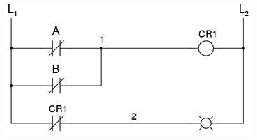
Figure 101: diagrama ladder; funcţia logică ŞI-negat realizată prin inversarea ieşirii
Să aplicăm această strategie de inversare uneia dintre funcţiile cu intrare inversată realizate mai sus. Spre exemplu, funcţia logică ŞI folosind diagrama funcţiei ŞI-negat de mai sus. Putem inversa ieşirea cu ajutorul unui releu pentru realizarea unei funcţii ne-inversate.
| A | B | Ieşire |
|---|---|---|
| 0 | 0 | 0 |
| 0 | 1 | 0 |
| 1 | 0 | 0 |
| 1 | 1 | 1 |
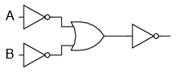
Figure 102: funcţia logică ŞI

Figure 103: simbolul porţii logice ŞI
De la comutator la bobina CR1, funcţia logică realizată este cea a unei porţi ŞI-negat. Contactele CR1 normal-închise inversează şi transformă ieşirea funcţiei ŞI-negat într-o funcţie ŞI.
6.3 Circuite permisive şi de blocare
6.3.1 Controlul aprinderii furnalelor

Figure 104: diagramă ladder; circuit de control al aprinderii furnalelor
O aplicaţie practică a logicii digitale, bazate pe relee şi comutatoare, constă în controlul sistemelor în care există o serie de condiţii ce trebuie îndeplinite, înainte ca un echipament să poate porni în siguranţa. Un exemplu bun este cel al aprinderii furnalelor. Pentru pornirea în siguranţă a acestora, sistemul de control trebuie să ceară „permisiunea” câtorva comutatoare de proces, printre care: comutatoare de presiune joasă şi înaltă, comutatoare pentru verificarea funcţionării ventilatorului, a poziţiei uşii de acces, etc. Fiecare condiţie de proces se numeşte permisivă, iar fiecare contact permisiv este conectat în serie. Prin urmare, dacă oricare dintre contacte detectează o condiţie de nesiguranţă, circuitul va fi deschis.
Dacă toate condiţiile sunt îndeplinite, CR1 se va energiza iar lapa verde se va aprinde. În realitate, nu doar lampa se energizează. De obicei există un releu de control, sau o valvă de fluid, ce este plasată pe acea linie a diagramei. Aceasta se va energiza cât toate contactele permisive sunt „în regulă”: adică, închise. Dacă oricare dintre condiţiile permisive nu este îndeplinită, linia de sus a diagramei va rămâne întreruptă, CR1 se ve de-energiza, iar lampa roşie se va aprinde.
Contactul pentru presiune înaltă a lichidul este un contact normal-închis. Acest lucru se datorează faptului că dorim deschiderea contactului doar în cazul în care presiunie lichidului devine prea mare. Din moment ce condiţia „noarmală” a oricărui comutator de presiune este îndeplinită când presiunea aplicată asupra sa este zero, şi dorim ca acest comutator să se deschidă în cazul unei presiuni excesive, trebuie să alegem un comutator ce este închis în starea sa normală.
6.3.2 Controlul pornirii motoarelor electrice
O altă aplicaţie practică a releelor constă în controlul sistemelor în care dorim ca două evenimente incompatibile să nu aibă loc în acelaşi timp.
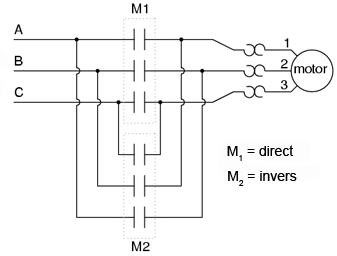
Figure 105: inversarea fazei unui motor electric
Un exemplu în acest sens constă controlul direcţiei de rotaţie a unui motor electric. Sunt utilizate contactoare pentru schimbarea polarităţii (sau secvenţei fazelor) unui motor electric. Nu dorim însă ca atât contactorul de polarizare directă cât şi cel de polarizare înversă să fie energizate în acelaşi timp.
Când contactorul M1 este energizat, sistemul trifazat de alimentare (A, B şi C) este conectat direct la terminalii 1, 2 şi 3 ai motorului. Totuşi, când contactorul M2 este energizat, fazele A şi B sunt inversate, A fiind conectată la terminalul 2 al motorului, iar B la terminalul 1. Inversarea fazei duce la inversarea direcţiei de rotaţie a motorului.

Figure 106: diagrama ladder; controlul pornirii unui motor electric
Să examinăm circuitul de control a acestor două contactoare. În dreapta avem un contact normal-închis (OL). Acesta este contactul termic de supra-încălzire ce este activat de elementele de „încălzire” conectate în serie cu fiecare fază a motorului de c.a. Dacă acestea se încălzesc prea tare, contactul va trece de la starea normală (închisă) la starea deschisă. Acest lucru nu va permite energizarea niciunui contactor.
Acest sistem de control este suficient, atâta timp cât nimeni nu apasă ambele butoane simultan. Dacă acest lucru se întâmplă însă, fazele A şi B vor fi scurt-circuitate prin faptul că fazele A şi B sunt conectate direct la motor prin intermediul contactorului M1, iar contactorul M2 le inversează. Faza A se va afla în scurt-circuit cu faza B şi invers. Evident, acesta nu este un sistem de control bun.

Figure 107: diagrama ladder; controlul pornirii unui motor electric
Pentru a preveni acest lucru, putem să proiectăm circuitul astfel încât energizarea unuia dintre contactoare săprevină energizarea celuilalt. Acest lucru se numeşte blocare, şi se poate realiza prin utilizarea de contacte adiţionale pe fiecare contactor.
Acum când M1 este energizat, contactul auxiliar normal-închis de pe linia a două se va deschide, prevenind astfel energizarea lui M2, chiar dacă buton „invers” este apăsat. Asemănător, energizarea lui M1 nu este posibilă atunci când M2 este energizat. Observaţi că au fost adăugate numerotaţii suplimentare ale firelor (4 şi 5) pentru a reflecta modificările.
Trebuie menţionat faptul că aceasta nu este singur metodă de blocare a contactoarelor pentru prevenirea scurt-circuitului. Unele contactoare sunt echipate cu dispozitive de blocare mecanice. Pentru siguranţa adiţională însă, se pot folosi şi metode de blocare electrice.
6.4 Circuite logice cu autoprotecţie
Circuitele logic, fie că sunt compuse din relee electromecanice sau din porţi logice semiconductoare, pot fi construite sub mai multe variante pentru realizarea aceleiaşi funcţii. Nu există în general o metodă „corectă” de proiectare a circuitelor logice complexe, dar există unele metode ce sunt mai bune decât altele.
În sistemele de control, siguranţa joacă un rol important (sau cel puţin ar trebui să o facă). Dacă exista mai multe metode de realizare a unui circuit digital care să realizeze aceiaşi funcţie, iar una dintre metode este mai bună din punct de vedere al siguranţei la funcţionare, atunci acea metodă este mai bună decât celelelate.
Să luăm ca şi exemplu un sistem simplu şi să vedem cum îl putem implementa folosind relee logice. Să presupunem că un laborator mare sau o clădire industrială urmează să fie echipată cu un sistem de alarmă în caz de incendiu. Acest sistem urmează să fie activat de oricare dintre comutatoarele instalate în întreaga clădire. Sistemul ar trebui să funcţioneze astfel încât sirenă să se energizeze dacă oricare dintre comutatoare este acţionat.

Figure 108: diagrama ladder
La o primă vedere, ar părea că circuitul logic este extrem de simplu: utilizăm contacte normal-deschise conectate în paralel, precum în figura alăturată. Practic, aceasta este o funcţie logică SAU cu patru intrări. Putem extinde acest circuit pentru a include un număr oricât de mare de comutatoare, fiecare fiind adăugat în serie. Ne vom limita însă la patru în acest exemplu. În orice caz, acesta pare un sistem elementar şi totul pare a fi în regulă.
Dar ce se întâmplă în cazul unui defect de circuit? Natura circuitelor electrice este astfel încât defectele de funcţionare ce constau în deschiderea circuitului sunt mult mai frecvente decât oricare alt tip de defecte. Aceste deschideri ale circuitului se pot datora deschiderii contactelor releelor, întreruperea conductorilor, arderea siguranţelor fuzibile, etc. Luând acest lucru în considerare, pare normal să realizăm un circuit care să fie cât mai tolerant posibil la o astfel de defecţiune.

Figure 109: diagrama ladder
Să presupunem, de exemplu, ca firul conductor al comutatorului doi se distruge, ducând la deschiderea circuitului în acest punct. În cazul în care această defecţiune ar avea loc, comutatorul 2 nu ar mai putea energia sirena în cazul în care ar fi acţionat (închis). Acest lucru, evident, nu este de dorit în cazul unui incendiu. Dacă sistemul nu este verificat periodic ( o idee bună oricum), nimeni nu ar putea ştii că există o problemă până când cineva nu ar încerca sa utilizeze acel comutator în caz de urgenţă.

Figure 110: diagrama ladder
Dar dacă am re-proiecta sistemul astfel încât alarma să se declanşeze (şi) în cazul unui astfel de defect? Astfel, defectul conductorului ar duce la o alarmă de incendiu falsă. Totuşi, acest scenariu este de preferat celui în care comutatorul nu funcţionează deloc în cazuri de urgenţă. Pentru atingerea acestui scop, va trebui să refacem circuit, astfel încât alarma să fie declanşată de un comutator deschis şi nu de unul închis. Comutatoarele vor trebui sa fie normal-închise şi în serie, alimentând bobina unui releu care la rândul ei activează un contact normal-închis ce controlează sirena.
Atunci când toate comutatoarele sunt de-energizate (starea normală a sistemului), bobina releului CR1 va fi energizată (prima linie). Contactul CR1 (linia a doua) prin urmare, va fi deschis, iar sirena nu este alimentată. Totuşi, în cazul în care oricare dintre comutatoare este acţionat, bobina CR1 se de-energizează, iar contactul CR1 revine la starea sa normală, şi anume, închis. Alarma este în acest caz alimentată şi se va declanşa. Adiţional, dacă există un defect al conductorilor din prima linie a circuitului, alarma se va declanşa. Dacă se descoperă că alarma este falsă, personalul clădirii va ştii că sistemul de alarmă este defect şi necesită reperaţii.
Cu siguranţa, circuitul este mult mai complex decât era înainte introducerii releului de control CR1, iar sistemul poate şi în acest caz să nu funcţioneze corespunzător. Acest lucru se poate întâmpla dacă apare un defect în linia a doua a circuitului. Dar totuşi, acest circuit este mai sigur şi preferabil din acest punct de vedere.
6.5 Automate programabile (PLC)
6.5.1 Scurtă istorie
Înainte de apariţia circuitelor logice cu semiconductori, sistemele logice de control erau proiectate şi realizate exclusiv cu relee electromecanice. Sistemele şi procesele ce necesită un control de tip „pornire/oprire” abundă în industria modernă, dar aceste sisteme sunt foarte rar realizate cu ajutorul releelor electromecanice sau a porţilor logice discrete. În schimb, sunt folosite calculatoare digitale ce pot fi programate şi pot realiza o varietate de funcţii logice.
La sfârşitul anilor 1960, o companie americană pe nume Bedford Associates, a lansat un dispozitiv de calcul denumit MODICON. Ca şi acronim, acesta s-ar traduce prin „controler digital modular”. Acesta mai târziu a deveni şi numele diviziei care se ocupa cu proiectarea, realizarea şi vânzarea acestor calculatoare de control speciale. Desigur, au existat mai apoi şi alte companii care au dezvoltat propriile lor variante ale acestui dispozitiv. Până la urmă, acest dispozitiv a primit denumirea de PLC (Programmable Logic Controller), sau, în traducere, automat programabil. Scopul unui PLC a fost de a înlocui releele electromecanice ca şi elemente de logică, locul lor urmând a fi luat de calculatoare digitale semiconductoare. Un program stocat în memoria calculatorului este capabil să simuleze funcţii logice realizate înainte prin interconectarea unui număr mare de reelee electromecanice.
Un automat programabil (PLC) are mai multe intrări, prin intermediul cărora interpretează stări logice „înalte”, respectiv „joase”, stări transmise de senzori şi comutatoare. De asemenea, există mai mulţi terminali de ieşire, prin intermediul cărora dispozitivul transmite semnale „înalte” sau „joase” către contactoare, motoare, lămpi, sau orice alte dispozitive ce pot fi controlate prin intermediul semnalelor de tip „închis/deschis”. În încercarea de simplificare a modului de programare a PLC-urilor, limbajul de programare a fost proiectat astfel încât să semene cu diagramele ladder. Astfel, un inginer sau electrician obişnuit cu citirea diagramelor ladder, se poate adapta relativ uşor mediului de programare a PLC-urilor pentru realizarea aceloraşi funcţii de control.
PLC-urile sunt „calculatoare industriale”, prin urmare, semnalele de intrare şi de ieşire sunt de 120 V c.a, asemenea releelor electromecanice de control. Deşi unele PLC-uri au intrări şi ieşiri de c.c de amplitudini mai mici, aceasta este excepţia şi nu regula.
6.5.2 Programarea PLC-urilor
Modul de conectare şi de programare diferă puţin în funcţie de modelul de PLC ales, dar aceste caracteristici sunt destul de similar pentru a permite o introducere „generală” a programării PLC-urilor în acest capitol.

Figure 111: automat programabil
Figura alăturată este cea a unui PLC, văzut din faţă. Cei doi terminali L1 şi L2 din partea superioară sunt pentru alimentarea circuitului intern al dispozitivului cu 120 V c.a. Cei şase terminali din partea stângă se folosesc pentru conectarea dispozitivelor de intrare, fiecare terminal reprezentând un „canal” diferit cu propria sa notaţie (X). Terminalul din stânga jos (common), reprezintă masa, ce se conectează la L2.

Figure 112: automat programabil; intrarea X1 energizată
În interioriul carcasei PLC-ului, între fiecare terminal de intrare şi terminalul de masă, există conectat câte un dispozitiv opto-izolator (LED). Acesta asigură o izolare electrică între semnalul logic „înalt” de la intrare şi circuitul calculatorului, atunci când există o tensiune de 120 V c.a. aplicată între terminalul respectiv şi masă. O intrare energizată poate fi „citită” prin intermediul unui LED aprins pe carcasa dispozitivului.

Figure 113: automat programabil; intrarea X1 energizată
Semnalele de ieşire sunt generate de circuitul intern al PLC-ului prin activarea unui dispozitiv de comutare (tranzistor, triac, sau chiar releu electromecanic), conectând terminalul „Source” cu oricare dintre terminalii de ieşire „Y”. Terminalul „Source” este la rândul să conectat de obicei la L1. Din nou, o ieşire energizată poate fi citită de pe PLC prin intermediul unui LED.
În acest fel, PLC-urile sunt o interfaţă între dispozitivele reale precum comutatoare, lămpi, motoare, etc.
Logica circuitului este stabilită în interiorul PLC-ului prin intermediul unui program software. Acest program decide care ieşiri sunt energizate şi sub ce condiţii de intrare. Chiar dacă programul însuşi pare a fi o diagramă logică, cu simboluri pentru relee şi comutatoare, în realitate nu există astfel de dispozitive în interiorul PLC-ului. Acestea sunt doar contacte şi bobine imaginare. Programul este introdus şi vizualizat prin intermediul unui PC conectat la portul PLC-ului (programming port).
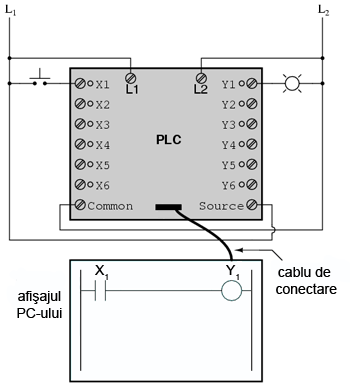
Figure 114: automat programabil şi circuit logic
Să considerăm circuitul şi programul alăturat. Atunci când comutatorul buton nu este apăsat, intrarea X1 a PLC-ului nu este alimentată. Urmărind programul, putem vedea un contact X1 normal-deschis în serie cu o bobină Y1. Puterea de pe bobina Y1 este şi în acest caz zero. Prin urmare, ieşirea Y1 a PLC-ului rămăne de-energizată, iar lampa indicatoare conectată pe această ieşire nu se aprinde.

Figure 115: automat programabil şi circuit logic
Apăsarea butonului însă face ca intrarea X1 să fie alimentată. În acest caz, toate contactele X1 ce apar în program vor fi acţionate. Energizarea intrării X1 va duce la închiderea contactului normal-deschis X1 alimentând bobina Y1. Când bobina Y1 a programului este energizată, ieşirea reală Y1 va deveni energizată., iar lampa conectată pe ieşire se va aprinde.
Trebuie înţeles faptul că atât contactul X1 cât şi bobina Y1, conductorii de legătură şi „puterea” ce apar pe afişajul PC-ul, toate sunt elemente pur virtuale. Acestea nu există ca şi componente reale. Ele există doar ca şi comenzi în interiorul programului unui calculator.
PC-ul este utilizat doar pentru vizualizarea şi editarea softului PLC-ului, şi nu este necesară prezenţa acestuia pentru funcţionarea dispozitivului. Odată ce programul a fost încărcat în PLC de pe PC, calculatorul poate fi deconectate de la acest, iar PLC-ul va continua să funcţioneze conform instrucţiunilor programului. Afişajul (monitorul) calculatorului este redat în aceste figurii doar pentru a ajuta la înţelegerea principiilor de bază a funcţionării PLC-urilor.
Adevărata utilitate a PLC-ului o putem vedea atunci când dorim modificarea comportamentului unui sistem de control. Din moment ce PLC-ul este un dispozitiv programabil, comportamentul acestuia poate fi modificat prin schimbarea comenzilor. Nu este nevoie de o reconfigurare a componentelor electrice conectate la intrarea şi ieşirea acestuia.
De exemplu, să presupunem că dorim ca circuitul de mai sus să funcţioneze exact invers: apăsarea butonului duce la închiderea lămpii, iar eliberarea acestuia la aprinderea ei. Soluţia „hardware” ar consta în înlocuirea comutatorului buton normal-deschis cu un comutator buton normal-închis. Soluţia software, aplicabilă cu ajutorul PLC-ului, constă în modificarea programului, astfel încât contactul X1 să fie normal-închis în loc de normal-deschis.
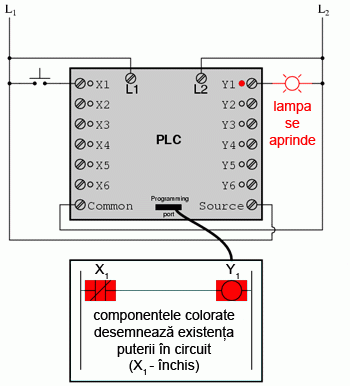
Figure 116: automat programabil şi circuit logic
Sistemul modificat, în cazul în care comutatorul nu este acţionat (nu este apăsat), este prezentat în figura alăturată.

Figure 117: automat programabil şi circuit logic
Când butonul este acţionat, sistemul arată conform figurii alăturate.
6.5.3 Reutilizarea intrărilor
Un alt avantaj al implementării logicii de control în varianta software faţă de hardware, este că semnalele de intrare pot fi refolosite în interiorul programului ori de câte ori este necesar.

Figure 118: automat programabil şi circuit logic
De exemplu, circuitul şi programul alăturat sunt proiectate pentru a energiza lampa în cazul în care cel puţin două din cele trei comutatoare sunt acţionate (închise) simultan.
Pentru realizarea unui circuit echivalent folosind relee electromecanice, ar fi trebui să folosim trei relee cu câte două contacte normal-deschise fiecare. În total, am fi avut nevoie de şase contacte, câte două pe fiecare intrare. Folosind un automat programabil în schimb, putem refolosi intrările X ori de câte ori dorim prin intermediul soft-ului. Nu este necesară adăugarea unor noi componente, deoarece fiecare intrare cât şi ieşire a unui PLC nu este nimic mai mult decât un simplu bit (0 sau 1) stocat în memoria digitală a dispozitivului. Nu există o limită teoretică a numărului de reutilizări acestor biţi.
Mai mult, din moment ce fiecare ieşire este, la fel, doar un bit stocat în memoria PLC-ului, putem adăuga contacte (virtuale) în interiorul programului. De exemplu, putem adăuga un contact acţionat de ieşirea Y a PLC-ului.

Figure 119: automat programabil şi circuit logic; sistem de control al pornirii şi opririi unui motor
Să considerăm exemplul alăturat. Acesta este un sistem de control al pornirii şi opririi unui motor.
Comutatorul buton conectat la intrarea X1 este utilizat pentru pornirea motorului, iar comutatorul conectat la intrarea X2 pentru oprirea acestuia. Un contact adiţional (virtual), adăugat în interiorul programului şi denumit Y1, utilizează bobina de ieşire ca şi contact de reţinere. Contactorul motorului continuă să fie energizat chiar şi după ce butonul „start” este eliberat. Contactul X2 normal-închis este colorat, ceea ce înseamnă ca este închis şi conduce energie electrică.

Figure 120: automat programabil şi circuit logic; sistem de control al pornirii şi opririi unui motor
Dacă apăsăm butonul de „start”, intrarea X1 se va energiza, închizând contactul X1 din program. Bobina Y1 va fi energizată şi se va aplica o tensiune de 120 V c.a. pe bobina contactorului motorului. Contactul paralel Y1 se va închide şi el, iar circuitul va rămâne într-o stare energizată.
Figure 121: automat programabil şi circuit logic; sistem de control al pornirii şi opririi unui motor
Acum, dacă eliberăm contactorul „start”, contactul X1 normal-deschis se va reîntoarce la poziţia sa normală (deschis). Motorul va continua însă să funcţioneze, deoarece contactul de reţinere intern Y1, continuă să alimenteze bobina Y1, care menţine la rândul ei energizată ieşirea Y1.

Figure 122: automat programabil şi circuit logic; sistem de control al pornirii şi opririi unui motor
Pentru a opri motorul, trebuie să apăsăm pentru o durată scurtă comutatorul „stop”. Acesta va energiza intrarea X2 şi va deschide contactul (virtual) normal-închis. Continuitatea circuitului înspre bobina Y1 va fi întreruptă.
Figure 123: automat programabil şi circuit logic; sistem de control al pornirii şi opririi unui motor
Când butonul de „stop” este eliberat, intrarea X2 se de-energizează. Contactul X2 se reîntoarce în poziţia sa normală (închis). Motorul nu va reporni însă până când comutatorul de „start” nu este acţionat, datorită „pierderii” contactului de reţinere Y1.
6.5.4 Autoprotecţia
Desigur, proiectarea PLC-urilor astfel încât să conţină elemente de autoprotecţie este la fel de importantă precum în cazul sistemelor cu relee electromecanice. Va trebui tot timpul să luăm în considerare efectele unui circuit deschis (distrugerea firelor conductoare, de exemplu) asupra dispozitivelor controlate. În exemplul de mai sus, avem o problemă: în cazul în care conductorul comutatorului de intrare X2 (butonul de stop) prezintă un defect (circuit deschis), nu vom putea opri motorul!

Figure 124: automat programabil şi circuit logic; sistem de control al pornirii şi opririi unui motor
Soluţia acestei probleme constă în inversarea logicii între contactul X2 din interiorul programului PLC-ului şi comutatorul „stop”. Când butonul „stop” nu este acţionat, intrarea X2 este energizată, închizând contactul X2 din interiorul programului. Acest lucru permite pornirea motorului atunci când intrarea X1 este energizată, şi permitea funcţionarea acestuia chiar si atunci când butonul „start” este eliberat. Când butonul „stop” este acţionat, intrarea X2 se va de-energiza, deschizând contactul X2 din soft-ul PLC-ului şi oprind motorul. Prin urmare, nu există nicio diferenţa din punct de vedere funcţional între această variantă si cea precedentă.
Totuşi, în caz de defect al conductorului pe intrarea X2 (circuit deschis), intrarea X2 va fi de-energizată. Efectul este similar acţionării butonului de „stop”, rezultatul fiind oprirea imediată a motorului în caz de defect. Această variantă este mult mai sigură decât cea precedentă, în care, acelaşi tip de defect ar conduce la imposibilitatea opririi motorului.
6.5.5 Relee de control
Pe lângă elementele de intrare (X) şi de ieşire (Y), PLC-urile conţin bobine şi contacte ce nu a legătură propriu-zisă cu exteriorul. Aceastea sunt folosite asemenea releelor de control (CR1, CR2, etc.) pentru asigurarea unui semnal logic inversor în caz de nevoie.
Figure 125: automat programabil şi circuit logic; utilizarea releelor interne de control
Pentru demonstrarea funcţionării unui asemenea tip de releu „intern”, să consideram circuitul şi programul alăturat. Acesta este proiectat pentru a simula o poartă ŞI-negat cu trei intrări. Din moment ce elementele unui program PLC sunt desemnate printr-o singură literă, vom nota releul de control intern cu C1 şi nu cu CR1.
Figure 126: automat programabil şi circuit logic; utilizarea releelor interne de control
În acest circuit, lampa va rămâne aprinsă atâta timp cât oricare dintre butoane rămâne ne-acţionat (eliberat). Pentru a opri lampa, va trebui să acţionăm (apasăm) toate cele trei butoane.
Un mare avantaj al automatelor programabile, avantaj ce nu poate fi duplicat cu ajutorul releelor electromecanice, constă în posibilitatea supravegherii şi controlului la distanţa a dispozitivelor prin intermediul reţelelor de calculatoare.
7 Algebra booleana
7.1 Introducere şi scurt istoric
Regulile matematice sunt bazate pe limitele impuse asupra cantităţilor numerice particulare cu care avem de a face. Când spunem că 1 + 1 = 2, sau 3 + 4 = 7, presupunem din start că utilizăm un sistem de numeraţie zecimal. Regulile aritmetice pe care le considerăm de la sine înţelese - adevărate tot timpul şi în orice situaţie - depind de fapt de ceea ce înţelegem printr-un număr.
7.2 Aritmetica booleană
7.2.1 Numere binare şi numere booleene
Trebuie înţeles încă de la început faptul că numerele booleene nu sunt tot una cu numerele binare. Numerele booleene reprezintă un sistem matematic total diferit de cel al numerelor reale, pe când notaţia binare este doar atât: o notaţie alternativă a numerelor reale. Cele două sunt adesea confundate datorită faptului că utilizează aceleaşi cifre: 0 şi 1. Diferenţa constă în faptul că valorile booleene sunt limitate la un singur bit (fie 0, fie 1), pe când numerele binare pot fi compuse din mai mulţi biţi.
7.2.2 Adunarea booleană
Să începem aşadar capitolul de algebră booleană prin adunarea numerelor:
0 + 0 = 0 0 + 1 = 1 1 + 0 = 1 1 + 1 = 1
Primele trei sume nu sunt deloc ieşite din comun din punct de vedere al operaţiei de adunare elementară. Ultima sumă în schimb, s-a dovedit a fi responsabilă de mai multă confuzie decât oricare alt element al electronicii digitale. Forma sa nu se supune princiilor de bază ale matematicii. Într-adevăr, aceasta contrazice principiile adunării numerelor reale, dar nu şi a numerelor booleene. În cadrul matematicii booleene există doar două valori posibile pentru oricare valoare şi pentru orice operaţie matematică: 0 sau 1. Nu există o valoare „2”. Din moment ce suma „1 + 1” nu poate fi 0, prin eliminare, această sumă trebuie să fie 1.
De asemenea, nu contează nici câţi termeni conţine suma. Să considerăm următoarele sume, de exemplu:
0 + 1 + 1 = 1 1 + 1 + 1 = 1 0 + 1 + 1 + 1 = 1 1 + 0 + 1 + 1 + 1 = 1
Revenind la primul set de ecuaţii, putem observa că aceste sume nu sunt altceva decât tabelul de adevăr al unei porţi logice SAU. Cu alte cuvinte, adunarea booleană corespunde funcţiei logice a porţii SAU, precum şi comutatoarelor conectate în paralel:
Figure 127: poartă logică SAU şi comutatoare paralel (0 + 0)

Figure 128: poartă logică SAU şi comutatoare paralel (0 + 1)
Figure 129: poartă logică SAU şi comutatoare paralel (1 + 0)
Figure 130: poartă logică SAU şi comutatoare paralel (1 + 1)
7.2.3 Scăderea şi împărţirea booleană
În cadrul matematicii booleene nu există noţiunea de scădere. Scăderea implică existenţa numerelor negative: 5 - 3 este identic cu 5 + (-3), de exemplu. Dar în algebra booleeană, valorile negative nu există (doar 0 şi 1).
De asemenea, nu există nici operaţie de împărţirea booleeană. Împărţirea nu este altceva decât o scădere compusă, la fel cum înmulţirea nu este altceva decât adunare compusă.
7.2.4 Înmulţirea booleană
Înmulţirea booleană este permisă, iar regulile sunt aceleaşi cu înmulţirea numerelor reale: orice număr înmulţit cu 0 este 0, şi orice număr înmultit cu 1 rămâne neschimbat:
0 x 0 = 0 0 x 1 = 0 1 x 0 = 0 1 x 1 = 1
Setul de ecuaţii ar trebui să vă fie cunoscute: sunt aceleaşi reguli ce se regăsesc în tabelul de adevăr al porţii ŞI. Cu alte cuvinte, înmulţirea booleană corespunde funcţiei logice a porţii ŞI, precum şi comutatoarelor conectate în serie:

Figure 131: poartă logică ŞI şi comutatoare serie (0 x 0)
(0 x 1)  #+CAPTION: poartă logică ŞI şi comutatoare
#+CAPTION: poartă logică ŞI şi comutatoare
Figure 132: serie (1 x 0)

Figure 133: poartă logică ŞI şi comutatoare serie (1 x 1)
7.2.5 Variabile booleene şi complementul lor
La fel ca algebra „normală”, algebra booleană utilizează litere pentru desemnarea variabilelor. Dar, faţa de algebra „normală”, aceste variabile se trec tot timpul cu majuscule. Datorită faptului că există doar două stări posibile, fie 1, fie 0, fiecare variabilă posedă şi un complement: valoarea opusă a acesteia. De exemplu, dacă variabila „A” este 0, atunci complementul ei este 1. Complementul se specifică prin intermediul unei linii deasupra variabilei, astfel:

Figure 134: complementul unei variabile booleene
Sub formă scrisă, complementul lui „A” este desemnat prin „A-negat”. Câteodată se utilizează simbolul „'” pentru reprezentarea complementului (A'). De obicei însă, simbolul cu linie este mai folosit decât simbolul „'”. Motivele le vom afla puţin mai încolo.
Complementarea booleeană este echivalentă cu o poartă logică NU, sau cu un contact normal-închis:

Figure 135: complementul unei variabile booleene; poartă logică SAU şi contact normal-închis
variabile booleene; poartă logică SAU şi contact normal-închis

7.3 Identităţi algebrice booleene
7.3.1 Ce este o identitate
În matematică, o identitate este o afirmaţie valabilă pentru toate valorile posibile ale variabilei sau variabilelor implicate. Identitatea algebrică x + 0 = x, ne spune că suma dintre oricare variabilă (x) şi zero este egală cu variabila iniţială (x), indiferent de valoarea acesteia. Asemenea algebrei obişnuite, există identităti specifice algebrei booleene. Aceste identităţi sunt bazate pe cele două stări posibile ale variabilelor booleene (0 sau 1).
7.3.2 Identităţi aditive
Prima identitate booleană este suma unei variabile cu zero. Rezultatul este valoarea variabilei iniţiale. Această identitate nu este cu nimic diferită faţă de echivalentul algebric al numerelor reale:

Figure 136: identitate booleană; suma unei variabile cu zero
Indiferent de valoare lui A, ieşirea va fi tot timpul aceiaşi. Când A = 1, ieşirea va fi 1; când A = 0, ieşirea va fi 0.
Următoarea identitate este cu siguranţă diferită faţă de cele văzute în algebra obişnuită. Aici putem vedea că suma unei variabile cu 1 este 1:

Figure 137: identitate booleană; suma unei variabile cu unu
Indiferent de valoarea lui A, suma lui A cu 1 va fi tot timpul 1. Practic, ieşirea circuitului nu ţine cont de valoarea lui A, ci este fixată pe 1.
Următoare identitate este suma unei variabile cu ea însăşi. Practic, acest lucru înseamnă conectarea intrărilor unei porţi logice SAU şi activarea lor cu acelaşi semnal:
Figure 138: identitate booleană; suma unei variabile cu ea însăşi
În algebra numerelor reale, suma a două variabile identice este dublul variabilei iniţiale (x + x = 2x). Dar în cadrul algebrei booleene nu exista „2”, ci numai 0 şi 1. Prin urmare, nu putem spune că A + A = 2A. Adunarea unei variabile cu ea însăşi este egală cu suma originală: 0 + 0 = 0 şi 1 + 1 = 1.
Dacă introducem conceptul de complement într-o identitate aditivă, putem vedea un efect interesant. Din moment ce între orice variabilă şi complementul acesteia trebuie să avem un 1, şi din moment ce suma oricărei variabile booleene cu 1 este 1, suma dintre o variabilă şi complementul ei trebuie să fie 1:

Figure 139: suma booleană dintre o variabilă şi complementul acesteia
7.3.3 Identităţi multiplicative
La fel cum există patru identităţi booleene aditive (A + 0, A + 1, A + A şi A + A'), există şi patru identităti multiplicative: A x 0, A x 1, A x A şi A x A'. Dintre acestea, primele două nu sunt deloc diferite de identităţile echivalente ale algebrei numerelor reale:

Figure 140: identităţi algebrice multiplicative: produsul dintre o variabilă şi zero

Figure 141: identităţi algebrice multiplicative: produsul dintre o variabilă şi unu
Cea de a treia identitate multiplicativă exprimă rezultatul unei variabile booleene înmulţită cu ea însăşi. În algebra numerelor reale, acest tip de produs reprezintă pătratul variabilei în cauză (3 x 3 = 32 = 9). Conceptul de „pătrat” implică existenţa valorii 2, valoare ce nu poate fi exprimată prin algebra booleană. Nu putem spune că A x A = A2. În schimb, produsul unei valori booleene cu ea însăşi este valoarea iniţială, din moment ce 0 x 0 = 0 şi 1 x 1 = 1:

Figure 142: identităţi algebrice multiplicative: produsul dintre o variabilă şi ea însăşi
A patra identitate multiplicativă nu are echivalent în algebra numerelor reale, doarece utilizaează complementul variabilei. Acest concept este unic matematicii booleene. Din moment ce trebuie să avem o valoare de „0” între oricare variabilă şi complementul acesteia, şi din moment ce produsul oricărei valorii booleene cu 0 este 0, produsul dintre o variabilă şi complementul acesteia trebuei să fie 0:

Figure 143: identităţi algebrice multiplicative: produsul dintre o variabilă şi complementul ei
În concluzie, avem patru identităti booleene de bază pentru adunare şi patru pentru produs (multiplicative):

Figure 144: identităţi algebrice aditive şi multiplicative
7.3.4 Identitatea complementului dublu
O altă identitate caracteristică complementului unei variabile este cea a complementului dublu: o variabilă inversată de două ori. Rezultatul complementării duble a unei variabile este valoarea booleană iniţială a variabilei. Acest lucru este similar înmulţirii cu -1 în algebra numerelor reale: un număr par de astfel de înmulţiri se anulează, iar rezultatul final este valoarea iniţială:

Figure 145: identitate algebrică booleeană; complementul dublu
7.4 Proprietăţi algebrice booleene
Un alt tip de identitate matematică, denumită „proprietate”, descrie relaţia dintre variabilele unui sistem de numere.
7.4.1 Comutativitatea
Una dintre aceste proprietăţi poartă numele de comutativitate, şi se aplică atât adunării cât şi înmulţirii. Ceea ce ne spune comutativitatea este că, putem inversa ordinea variabilelor atât în cazul adunării, cât şi în cazul înmulţirii. Rezultatul expresiei rămâne neschimbat în ambele cazuri. Comutativitatea adunării arată astfel:

Figure 146: comutativitatea adunării booleene
Comutativitatea înmulţirii:
Figure 147: comutativitatea înmulţirii booleene
7.4.2 Asociativitatea
Această proprietate spune că putem asocia grupuri de sume sau înmulţiri, prin intermediul parantezelor, fară a modifica rezultatul ecuaţiilor. Şi în acest caz, asociativitatea se aplică atât adunării cât şi înmulţirii. Asociativitatea adunării:
Figure 148: asociativitatea adunării booleene
Asociativitatea înmulţirii:
Figure 149: asociativitatea înmulţirii booleene
7.4.3 Distributivitatea
Proprietatea de distributivitate precizează modul de dezvoltare a unei expresii booleene formate din înmulţirea unei sume:
Figure 150: distributivitatea booleeană
În concluzie, avem trei proprietăţi booleene de bază: comutativitatea, asociativitatea şi distributivitatea:

Figure 151: proprietăţi boolene: comutativitatea, asociativitatea şi distributivitatea
7.5 Reguli de simplificare booleană
Una dintre cele mai practice aplicaţii ale algebrei boolene constă în simplificarea circuitelor logice. Dacă transformăm funcţia logică a unui circuit sub formă booleană, şi aplicăm anumite reguli ecuaţiei rezultate, putem reduce numărul termenilor sau operaţiilor aritmetice necesare. Ecuaţia simplificată poată fi apoi transformată înapoi sub formă de circuit logic. Sub noua formă, circuitul logic realizează aceiaşi funcţie, dar cu mai puţine componente. Dacă un circuit echivalent poate fi realizat cu mai puţine componente, costurile de realizare şi de funcţionare vor scădea.
Identităţile şi proprietăţile exprimate în acest secţiunile precedente sunt foarte folositoare simplificării booleene. Toate regulie prezentate în această secţiune sunt specifice matematicii booleene.

Figure 152: simplificare booleană
Această regulă poate fi demonstrată simbolic prin scoaterea termenului comun (A) în afara sumei. Aplicând apoi regulile A + 1 = 1 şi 1A = A, ajungem la rezultatul final:
A + AB = A(1 + B) = A(1) = A
Observaţi cum a fost aplicată regula A + 1 = 1 pentru reducerea termenului (B + 1) la 1. Când aplicăm o regulă precum „A + 1 = 1”, exprimată prin intermediul literei „A”, nu înseamnă că aceasta se aplică doar expresiilor ce conţin „A”. A-ul din această expresie exprimă faptul că aceasta se aplică oricărei variabile sau colecţii de variabile booleene.
De exemplu, expresia booleeană ABC + 1 se reduce tot la 1 prin intermediul aplicării identităţii A + 1 = 1. În acest caz, termenul standard „A” din definiţia identităţii reprezintă întregul termen „ABC” al expresiei de mai sus.
Următoarea regulă este aproximativ similară cu prima. Practic, ea este destul de diferită, iar demonstraţia este puţin mai dificilă:
Figure 153: simplificare booleană
Pentru început, dezvoltăm termenul A, folosind regula precedentă (A + AB = A). Scoatem termenul B în afara celei de a doua sume, şi aplicăm apoi identitatea A + A' = 1. La sfârşit, nu ne mai rămne decât să aplicăm identitatea 1A = A pentru obţinerea rezultatului final:
A + A'B = A + AB + A'B = A + B(A + A') = A + B(1) = A + B
O altă regulă implică simplificarea expresiei unui produs de sume:

Figure 154: simplificare booleană
Pentru a demonstra această relaţie, realizăm pentru început înmulţirea celor două sume. Aplicăm apoi identitatea AA = A, apoi regula A + AB = A primilor doi termeni. Şi, în sfârşit, aplicăm aceiaşi regulă, A + AB = A primilor doi termeni a expresiei rezultate. Rezultatul este conform expresiei de mai sus:
(A + B)(A + C) = AA + AC + AB + BC = A + AC + AB + BC = A + AB + BC = A
- BC
Pe scurt, acestea sunt cele trei reguli ale simplificării booleene:

Figure 155: regulile simplificării booleene
7.6 Simplificarea circuitelor logice
7.6.1 Simplificarea circuitelor cu porţi logice
Să începem cu un circuit logic cu porţi ce necesită o simplificare. Presupunem că intrările A, B şi C sunt asigurate de comutatoare, senzori sau alte porţi logice. Originea acestor semnale nu este importantă din punct de vedere al simplificării.

Figure 156: circuit cu porţi logice
- Scrierea expresiei booleene
Primul pas al simplificării constă în scrierea expresiei booleene pentru acest circuit. Acest pas este cel mai uşor de realizat dacă scriem sub-expresii pentru ieşirea fiecărei porţi, corespunzător semnalelor de intrare. Este bine să reamintim faptul că porţile SAU sunt echivalente adunării booleene, iar porţile ŞI sunt echivalente înmulţirii booleene. Să scriem aşadar sub-expresii la ieşirea primelor trei porţi:

Figure 157: circuit cu porţi logice; scrierea sub-expresiilor la ieşirea porţilor
Scriem apoi sub-expresiile următoarelor seturi de porţi. În cazul de faţa, avem doar o singură poartă pe nivelul următor:
Figure 158: circuit cu porţi logice; scrierea sub-expresiilor la ieşirea porţilor
Şi, în sfârşit, ieşirea (Q) circuitului logic este egală cu următoarea expresie:

Figure 159: circuit cu porţi logice; scrierea sub-expresiilor la ieşirea porţilor
- Simplificarea expresiei booleene
Acum că avem o expresie booleenă, următorul pas este aplicarea regulilor algebrei booleene pentru reducerea expresiei de mai sus la forma ei cea mai simplă. Reamintim faptul că cea mai simplă formă este aceas formă care necesită cele mai puţine porţi logice pentru implementarea ei.
Prin urmare, expresia AB + BC(B + C) poate fi redusă astfel: la primul pas realizăm înmulţirea termenilor; aplicăm apoi identitatea AA = A termenilor doi şi trei; aplicăm identitatea A + A = A termenilor doi şi trei rezultaţi; scoatem termenul comun B în faţa:
AB + BC(B + C) = AB + BBC + BCC = AB + BC + BC = AB + BC = B(A + C)
Expresia rezultată, B(A + C), este mult mai simplă decât cea originală. Ea realizează însă aceiaşi funcţie. Dacă vreţi să verificaţi acest lucru, puteţi construi un tabel de adevăr pentru ambele expresii, Determinaţi apoi rezultatul Q (ieşirea circuitului) pentru toate cele opt combinaţii posibile dintre A, B şi C pentru ambele circuitele. Cele două tabele trebuie să fie identice.
- Evaluarea expresiei booleene rezultate
Următorul pas constă în generarea unei scheme logice folosind această expresie booleeană simplificată. Pentru realizarea acestui lucru, evaluăm expresia urmând ordinea matematică a operaţiilor (înmulţirea înainte adunării, operaţiile din interiorul parantezelor înaintea celorlalte). La fiecare pas vom adăuga o nouă poartă. Porţile sau sunt echivalente cu adunarea booleană, iar porţile ŞI sunt echivalente operaţiei de înmulţirea booleană. În exemplul de faţa, începem construirea circuitului cu sub-expresia „A + C”, expresie ce nu este altceva decât o poartă SAU:
Figure 160: poartă logică SAU
Următorul pas în evaluarea expresiei B(A + C) constă în înmulţirea (poartă ŞI) semnalului B cu ieşirea porţii precedente (A + C):
Figure 161: evaluarea expresiei booleene
Evident, acest circuit este mult mai simplu decât cel original, având doar două porţi logice în loc de cinci. O astfel de reducere a numărului de componente duce la viteze de funcţionare crescute (timpul de propagare a semnalului de la intrare la ieşire este mai scurt), consum de energie mai scăzută, cost mai mic şi o fiabilitate crescută.
7.6.2 Simplificarea circuitelor cu relee electromecanice
Circuitele cu relee electromecanice pot profita foarte mult de pe urma simplificării booleene. De obicei, acestea sunt mai lente, consumă mult mai multă energie, costă mai mult, iar durata de viaţă medie este mai scurtă decât cea a porţilor logice semiconductoare. Să considerăm aşadar exemplul de mai jos:
Figure 162: circuit logic cu relee electromecanice
- Scrierea expresiei booleene
Primul pas al reducerii acestui circuit la forma cea mai simplă este, din nou, transformarea circuitului sub forma unei expresii booleene. Cea mai simplă metodă de realizare a acestui lucru este asemănătoare cu metoda reducerii unui circuit rezistiv serie-paralel la o singură rezistenţă. De exemplu, să considerăm circuitul rezistiv de mai jos, cu rezistorii aranjaţi asemeni contactelor circuitului precedent.

Figure 163: circuit rezistiv serie-paralel
Formula corespunzătoare reducerii acestui circuit la o rezistenţă echivalenta, este următoarea:
Rtotal = R1 / [(R3 / R4) – R2] // (R5 – R6)
Contactele paralele sunt echivalente cu adunarea booleeană, iar contactele serie cu înmulţirea booleeană. Expresia booleenă a circuitului cu relee de mai sus se scrie urmând aceleaşi reguli care se regăsesc în cazul rducerii circuitelor serie-paralel la o rezistenţa totală echivalentă. Simplificarea ne este uşurată dacă scriem sub-expresii booleene la stânga fiecărei linii în parte:

Figure 164: circuit logic cu relee electromecanice
Acum că avem o expresie booleană, tot ceea ce trebuie să facem este să aplicăm regulile de simplificare pentru a aduce expresia la forma ei cea mai simplă (formă ce necesită cele mai puţine relee pentru implementarea fizică).
Paşii sunt următorii: extindem termenul B(A + C); aplicăm regula A + AB = A primilor doi termeni; aplicăm regula A + AB = A primului termen şi termenului al treilea:
A + B(A + C) + AC = A + AB + BC + AC = A + BC + AC = A + BC
După cum putem vedea, circuitul redus este mult mai simplu decât originalul, dar funcţia logică pe care o îndeplineşte este neschimbată:
Figure 165: circuit logic cu relee electromecanice; forma simplificată
7.7 Funcţia SAU-exclusiv
Un element ce nu l-am întâlnit până în acest moment în operaţiile booleene este SAU-exclusiv. Deşi funcţia SAU este echivalentă cu o adunare booleeană, funcţia ŞI cu înmulţirea iar funcţia NU cu complementarea, nu există un echivalent boolean pentru funcţia SAU-exclusiv. Acest lucru nu ne împiedică să avem un simbol pentru reprezentarea ei:

Figure 166: funcţia SAU-exclusiv; simbol
Acest simbol este folosit foarte rar în expresiile booleene, deoarece identitătile, proprietăţile şi regulile de simplificare ce implică adunare, înmulţire şi complementare nu se aplică şi acestei expresii. Totuşi, există o modalitate de reprezentare a funcţiei SAU-exclusiv cu ajutorul funcţiilor SAU şi ŞI:
Figure 167: funcţia SAU-exclusiv realizată cu funcţiile SAU şi ŞI
Ca şi echivalenţă booleeană. această regulă poate fi folositoare în cazul simplificării anumitor expresii booleene. Orice expresie de forma AB' + A'B (două porţi ŞI şi o poartă SAU), poate fi înlocuită de o singură poartă SAU-exclusiv.
7.8 Teoremele lui DeMorgan
DeMorgan a dezvoltat o serie de reguli importante în algebra liniară cu privire la complementul de grup. Prin complementul de grup ne referim la complenentul unui grup de termeni, şi nu doar la o singură variabilă.
Ţineţi minte de la capitolul legat de porţi logice, că inversând toate intrările unei porţi, inversăm şi fucţia logică esenţială a acesteia. O poartă SAU cu toate intrările inversate (o poartă SAU-negativă) se comportă precum o poartă ŞI-negat. O poartă ŞI cu toate intrările inversate (o poartă ŞI-negativă) se comportă precum o poartă SAU-negat. Teoremele lui DeMorgan exprimă aceiaşi echivalenţă în sens invers: inversând ieşirea unei porţi, funcţia rezultată este aceiaşi cu tipul opus de poartă cu intrările inversate:
Figure 168: teorema lui DeMorgan
O bară deasupra termenului AB se comportă precum un simbol de grup. Acest lucru este total diferit faţă de produsul AB inversat separat (A'B'). Cu alte cuvinte, (AB)' nu este egal cu A'B'. Acest lucru are un impact profund asupra modului de evaluare şi de reducere a expresiilor booleene, după cum vom vedea.
Teorema lui DeMorgan poate fi gândită ca şi „întreruperea” complementului (bara orizontală). Atunci când simbolul complementului este rupt în doua, operaţia de sub el se modifică din adunare în înmulţirea şi invers. După aplicarea teoremei, fiecare variabilă are propriul ei complement. Ca şi exemplu:

Figure 169: înteruperea complementului în aplicarea teoremei lui DeMorgan
Când există mai multe complemente deasupra aceleiaşi expresii, nu putem întrerupe decât un complement pe rând. Cel mai uşor este să începem cu cea mai lungă linie orizontală (cea de sus). Ca şi exemplu, să considerăm expresia (A + (BC)')' redusă cu ajutorul teoremelor lui DeMorgan:

Figure 170: aplicarea teoremei lui DeMorgan
Urmând consideraţiile exprimate mai sus, aplicăm următorii paşi:

Figure 171: înteruperea complementului în aplicarea teoremei lui DeMorgan
Ca şi rezultat, circuitul original este redus la un circuit format dintr-o poartă ŞI cu trei intrări, unde intrarea A este inversată printr-o poartă NU:
Figure 172: circuit logic simplificat cu ajutorul teoremei lui DeMorgan
Ca şi contra-exemplu, nu întrerupeţi niciodată mai mult de un complement la un singur pas:

Figure 173: întreruperea greşită a complementului
Pe cât de tentant pare, pe atât de incorect este să scurtăm paşi simplificării prin întreruperea mai multor complemente deodată. Prin urmare, nu faceţi niciodată acest lucru!
Putem simplifica expresia de mai sus şi prin întreruperea complementului scurt în primă instanţă, şi apoi a complementului lung:
Figure 174: întreruperea complementului scurt
Desigur, rezultatul final este acelaşi şi în acest caz. Paşii necesari pentru simplificare sunt însă mai numeroşi faţa de exemplul precedent (întreruperea complementului lung la primul pas). La pasul al treilea, în exemplul de mai sus, întreruperea complementului lung se realizează în două locuri simultat. Această operaţie matematică este permisă, şi nu este identică cu întreruperea a două complemente deodată! Interidicţia întreruperii mai multor complemente deodată nu interzice întreruperea complementului în mai multe locuri.
Poate vă întrebaţi de ce am folosit paranteze în jurul sub-expresiei B'
- C', din moment ce oricum le-am îndepărtat la pasul următor. Am făcut
acest lucru pentru a sublinia un aspect important dar neglijat al teoremei lui DeMorgan. Din moment ce o linie orizontală lungă funcţionează ca şi simbol de grup, variabilele incluse sub aceasta trebuie să rămână grupate. În caz contrar, ordinea operaţiilor se pierde. În exemplul anterior, nu contează dacă am fi pus sau nu aceste paranteze, dar în alte cazuri s-ar putea să conteze. Să luăm un alt exemplu, meţinând parantezele:
DeMorgan
În cazul în care nu menţinem parantezele, riscăm să obţinem un răspuns greşit:
DeMorgan
După cum se poate observa, menţinerea grupării realizate implicit prin liniile de complementare, este cruciale pentru obţinerea răspunsului corect.
7.8.1 Simplificarea unui circuit logic - exemplu
Să aplicăm acum principiile teoremelor lui DeMorgan pentru simplificarea unui circuit cu porţi logice:

Figure 175: circuit cu porţi logice
- Expresia booleeană echivalentă
Ca de obicei, primul pas al simplificării circuitului constă în găsirea expresiei booleene echivalente. Putem face acest lucru prin notarea sub-expresiilor la ieşirea fiecărei porţi, pe măsură ce intrările ne sunt cunoscute:

Figure 176: circuit cu porţi logice; notarea sub-expresiilor la ieşirea porţilor
Apoi, notăm ieşirea primei porţi SAU-negat şi ieşirea porţii ŞI-negat. Atunci când aveam de a face cu porţi inversate pe ieşire, este mai uşor să scriem prima dată expresia fără inversarea finală. Observaţi şi de pe figură faptul că săgeata indică ieşirea porţii chiar înaintea inversării (cerculeţul de la ieşire). Expresia finală, după inversare, este complementul expresiei precedente. Astfel, ne putem asigura că nu uităm introducerea complementului în cadrul expresiei:

Figure 177: circuit cu porţi logice; notarea sub-expresiilor la ieşirea porţilor
Şi, în sfârşit, ultimul pas constă în scrierea expresiei pentru poarta SAU-negat finală:
Figure 178: circuit cu porţi logice; notarea sub-expresiilor la ieşirea porţilor
- Simplificare expresiei echivalente
Trecem apoi la reducerea acestei expresii folosind identităţile, proprietăţile, regulile si teoremele (lui DeMorgan) algebrei booleene:
Figure 179: siplificarea expresiei booleene echivalente
- Circuitul echivalent
Circuitul echivalent al expresiei mult simplificate:

Figure 180: circuit cu porţi logice echivalent (simplificat)
7.9 Transformarea tabelelor de adevăr în expresii booleene
Procesul de proiectare al circuitelor digitale începe adesea cu un tabel de adevăr. Acest tabel descrie modul de funcţionare al circuitului, pe scurt, ce funcţii trebuie aceasta să îndeplinească. Partea de proiectare constă în mare parte în determinarea tipului de circuit ce va realiza funcţia propusă în acest tabel de adevăr. Deşii există unii oameni care pot determina circuitul final prin simpla privire a tabelului de adevăr, pentru noi ceilalţi există o serie metode foarte utile. Se va dovedi că algebra booleeană este de un real folos în această situaţie.
Pentru ilustrarea acestor metode, cel mai indicat este să începem cu o problemă de proiectare practică. Să presupunem că trebuie să proiectăm un circuit de detectare a flăcării unui incinerator de deşeuri toxice. Astfel de tehnici de ardere sunt folosite de obicei pentru neutralizarea deşeurilor medicale, ce pot fi infectate cu viruşi sau bacterii periculoase:
Figure 181: incinerator deşeuri toxice
Atâta timp cât flacăra este menţinută în incinerator, injectarea deşeurilor toxice pentru neutralizare este sigură. Dacă în schimb flacăra se stinge, această alimentare a incineratorului se poate dovedi periculoasă. Evacuarea va conţine deşurile toxime ne-neutralizate, reprezentând un pericol de sănătate pentru persoanele aflate în apropiere. Avem nevoie prin urmare de un sistem de detectare a prezenţei flăcării. Injectarea deşeurilor va fi permisă doar atunci când sistemul de detectare ne asigură de prezenţa flăcării.
Există mai multe metode de detectare a flăcării: optic (detectarea luminii), termic (detectarea temperaturii înalte) şi conducţie electrică (detectarea particulelor ionizate). Fiecare din aceste metode prezintă avantaje şi dezavantaje. Să presupunem că, datorită pericolului ridicat al trecerii deşeurilor intacte prin evacuarea sistemului, s-a decis ca sistemul de detectare să fie redundant (senzori multiplii). Astfel că, defectare unuia dintre senzori să nu ducă la o situaţie nedorită. Fiecare senzor este echipat cu un contact normal-deschis (deschis - lipsă flacăra, închis - flacără detectată) necesar activării intrărilor unui sistem logic:
circuitului logic pentru închiderea alimentării în cazul în care flacăra

Figure 182: nu este detectată
Scopul nostru acum, este să proiectăm circuitul logic astfel încât acesta să deschidă valva de admisie doar dacă există flacără (detectată de senzori). Prima dată trebuie să vedem comportamentul acestui sistem de control. Dorim ca valva să se deschidă în cazul în care doar unul din cei trei senzori detectează flacăra? Probabil că nu. Altfel, nu ar mai avea niciun rost să folosim trei senzori în loc de unul singur. Ceea ce ne dorim de la sistemul logic, este ca acesta să deschidă valva de admisie doar în cazul în care toţi cei trei senzori detectează flacăra. În acest caz, tabelul de adevăr arată astfel:

Figure 183: incinerator deşeuri toxice; tabelul de adevăr
Această funcţionalitate poate fi asigurată folosind o poartă ŞI cu trei intrări: ieşirea circuitului este 1 doar dacă intrarea A ŞI intrarea B ŞI intrarea C este 1:
Figure 184: incinerator deşeuri toxice; adăugarea circuitului logic
Dacă folosim în schimb relee electromecanice, putem crea această funcţie ŞI prin conectarea celor trei contacte în serie. Sau pur şi simplu conectă cei trei senzori în serie, astfel încât, singura modalitate prin care se poate deschide valva de admisie, este dacă toţi cei trei senzori indică prezenţa flăcării:
Figure 185: incinerator deşeuri toxice; utilizare relee electromecanice
Deşi această strategie maximizează siguranţa sistemului, este totuşi foarte sensibilă la defect. În cazul în care unul din cei trei senzori se defectează, indicând lipsa flăcării din incinerator, întregul sistem se va opri. Asta chiar dacă ceilalţi doi senzori funcţionează şi indică prezenţa flăcării. Această oprire „gratuită” a incineratorului duce la pierderi de producţie şi de combustibil (menţinerea unei flăcări ce nu este folosită pentru incinerarea materialului toxic).
Va trebui să reproiectăm sistemul, astfel încât, un astfel de defect să nu ducă la închiderea întregului sistem. Bazându-ne pe doi senzori în detectarea prezenţei flăcării, sistemul îşi păstrează şi în acest caz redundanţa. O astfel de strategie implică un circuit logic cu trei intrări, a cărui ieşire este 1 în cazul în care cel puţin două din cele trei intrări sunt 1. Tabelul de adevăr arată astfel:
Figure 186: incinerator deşeuri toxice; tabelul de adevăr
7.9.1 Suma-de-produse
În această situaţie nu este foarte clar ce tip de circuit logic ar satisface tabelul de adevăr. O metodă simplă de realizarea a unui astfel de circuit constă în utilizarea unei forme booleene standard, denumită sumă-de-produse. Ca şi exemplu, o astfel de expresie ar putea arătă astfel: ABC + BC + DF, suma produselor ABC, BC şi DF.
Astfel de expresii sunt relativ uşor de realizat cu ajutorul tabelelor de adevăr. Trebuie doar să găsim acele rânduri din tabel unde ieşirea este 1, şi să scriem apoi un produs boolean a cărui rezultat să fie 1, cunoscând condiţiile de intrare. De exemplu, să luăm al patrulea rând din tabelul de adevăr de mai sus. Ieşirea acestuia este 1 (ceea ce căutăm), iar intrările sunt A = 0, B = 1 şi C = 1. Produsul acestor trei variabile este unu dacă expresia arată astfel: A'BC.

Figure 187: incinerator deşeuri toxice; tabelul de adevăr
Să completăm şi celelalte rânduri care au o ieşire de 1, cu produsul termenilor:
Figure 188: incinerator deşeuri toxice; tabelul de adevăr
Însumăm toate aceste patru expresii, pentru a crea o singură expresie booleeană ce descrie în întregime tabelul de adevăr:
Figure 189: incinerator deşeuri toxice; tabelul de adevăr
7.9.2 Realizarea circuitului logic
După ce am obţinut expresia booleeană sub formă de sumă-de-produse, putem trece la realizarea circuitului logic bazat pe această expresie, fie cu porţi logice:
Figure 190: incinerator deşeuri toxice; circuitul logic (porţi logice)
Fie cu relee electromecanice:
Figure 191: incinerator deşeuri toxice; circuitul logic (relee electromecanice
7.9.3 Simplificarea expresiei booleene
Din păcate, ambele variante sunt destul de complexe. Din fericire însă, putem simplifica expresia iniţială folosing regulile simplificării booleene:
Figure 192: incinerator deşeuri toxice; simplificarea expresiei booleene
Ca şi rezultat al simplificării, putem acum construi un circuit logic mult simplificat, dar care îndeplineşte exact aceiaşi funcţie logică, fie cu porţi logice:
Figure 193: incinerator deşeuri toxice; circuitul logic (porţi logice)
Fie cu relee electromecanice:

Figure 194: incinerator deşeuri toxice; circuitul logic (relee electromecanice
8 Harti karnaugh
8.1 De ce hărţi Karnaugh
La ce ne folosesc hărţile Karnaugh? Harta Karnaugh, asemenea algebrei booleene, este o metodă de simplificare a circuitelor logice digitale. Vedeţi exemplul „incineratorului de deşeuri toxice” ca şi exemplu de simplificare booleană a unui circuit logic. Harta Karnaugh va simplifica circuitul mult mai rapid şi mai uşor în majoritatea cazurile.
Simplificarea booleană este de fapt mai rapidă în cazul în care avem maxim două variabile booleene. Putem folosi această metodă chiar şi în situaţia în care avem trei variabile, dar metoda booleană este mai greoaie în acest caz. Cu patru variabile de intrare, algebra booleeană devine „imposibilă”. Hărţile Karnaugh sunt mai rapide şi mai uşor de implementat. Acestea pot fi folosite cu succes în situaţiile în care avem până la şase variabile de intrare. Între şase şi opt, mai putem încă folosi aceste hărţi. Peste această valoare, este indicat să folosim un program software specializat pentru realizarea simplificărilor logice.
8.2 Diagrame Venn
Matematicienii utilizează diagramele Venn pentru reprezentarea relaţiilor logice dintre mulţimi (colecţii de obiecte). Ne vom folosi de diagramele Venn pentru a face tranziţia dintre algebra booleană şi hărţile Karnaugh.
8.2.1 Mulţimi şi submulţimi
O mulţime este o colecţie de obiecte dintr-un univers dat. Elementele mulţimii sunt obiecte ce aparţin mulţimii. Elementele unei mulţimi au de obicei ceva în comun, deşi acest lucru nu este neapărat necesar. Din universul numerelor reale, de exemplu, mulţimea tuturor numerelor întregi pozitive {1, 2, 3 …}, este o mulţime. Mulţimea {3, 4, 5} este o mulţime mai mică, sau o submulţime a mulţimii numerelor întregi pozitive. Un alt exemplu este mulţimea tuturor băieţilor dintr-o clasă (reprezentând universul discuţiei). Vă puteţi gândi şi la alte mulţimi?
8.2.2 Diagrame Venn - exemple
Diagrama Venn din figura de mai jos stânga, reprezintă mulţimea A (în interiorul cercului) din universul U (aria dreptunghiulară). Dacă tot ceea ce se află în interiorul cercului este A, atunci tot ceea ce se află în exteriorul cercului nu este A (A-negat). Prin urmare, in figura de mai jos centru, denumit aria dreptunghiulară din afara cercului A cu A-negat în loc de U. B şi B-negat se reprezintă similar (figura de mai jos dreapta).
Figure 195: diagrame Venn
Ce se întâmplă dacă şi A şi B se află în acelaşi univers? Există patru posibilităţi:
Figure 196: diagrame Venn
Să reluăm fiecare din cele patru posibilităţi în parte:

Figure 197: diagrame Venn
Primul exemplu indică faptul că mulţimile A şi B nu au niciun element comun, conform diagramei Venn. Regiunile celor două mulţimi nu se suprapun în niciun punc. De exemplu, să presupunem că mulţimile A şi B ar conţine următoarele elemente: A = {1, 2, 3, 4}, B = {5, 6, 7, 8}. Niciunul dintre elementele mulţimii A nu este inclus în mulţimea B şi invers. Prin urmare, cele două cercuri nu se suprapun.
Figure 198: diagrame Venn
În cel de al doilea exemplu, mulţimea A este inclusă total în mulţimea B. Cum putem explica această situaţie? Să presupunem că mulţimile A şi B conţin următoarele elemente: A = {1, 2}, B = {1, 2, 3, 4, 5, 6, 7, 8}. Toate elementele din A se regăsesc şi în B. Prin urmare, mulţimea A este o submulţime a mulţimii B, iar cercul A este inclus în cercul B.

Figure 199: diagrame Venn
În cel de al treilea caz, mulţimile A şi B se suprapun perfect. Din diagrama Venn, putem deduce că cele două mulţimi conţin exact aceleaşi elemente. Să presupunem că mulţimile arată astfel: A = {1, 2, 3, 4} şi B = {1, 2, 3, 4}. Prin urmare A = B. Cele două mulţimi sunt identic egale deoarece conţin exact aceleaşi elemente.
Figure 200: diagrame Venn
În ultimul caz, cele două mulţimi se suprapun, dar nu complet ci doar parţial. Acest lucru ne spune că există elemente comune celor două mulţimi, dar fiecare mulţime are si elemente unice. Să presupunem că cele două mulţimi ar arăta astfel: A = {1, 2, 3, 4} şi B = {3, 4, 5, 6}. Ambele mulţimi conţin elementele 3 şi 4. Acesta este şi motivul pentru care cele două cercuri sunt suprapuse.
8.3 Relaţii booleene cu diagrame Venn
8.3.1 Funcţia logică SAU (adunarea booleană)
În ultimul exemplu din secţiunea precedentă, mulţimile A şi B s-au suprapus parţial. Iniţial, ne vom concentra atenţia asupra întregii regiuni haşurate de mai jos, abia apoi vom trece la analizarea regiunii comune celor două mulţimi. Să utilizăm expresii booleene pentru desemnarea reginilor diagramelor Venn, conform figurii de mai jos:

Figure 201: diagrame Venn
Aria mulţimii A este haşurată cu roşu, iar cea a mulţimii B cu albastru. Dacă analizăm întreaga aria haşurată (suma totală a tuturor ariilor haşurate), indiferent de culoare sau stil, obţinem figura din dreapta sus. Aceasta corespunde funcţiei logice SAU, iar expresia booleană este A + B, aria fiind cea haşurată cu linii diagonale. Tot ceea ce se află în afară ariei haşurate reprezintă (A + B)-negat.
8.3.2 Funcţia logică ŞI (înmulţirea booleană)
O altă metodă de interpretare a diagramei Venn cu regiuni suprapuse, este analizarea regiunii comune atât mulţimii A cât şi mulţimii B, aria dublu haşurată de mai jos (stânga). Această arie corespunde funcţiei logice ŞI, iar expresia booleană este AB (jos dreapta). Tot ceea ce se află în afara ariei dublu haşurate AB reprezintă AB-negat:
Figure 202: diagrame Venn
Observaţii că unele elemente ale mulţimilor A şi B de sus, sunt elemente ale mulţimii (AB)-negat, dar niciunul dintre elementele mulţimii (AB)-negat nu se află în interiorul ariei dublu haşurate AB.
8.3.3 Expresii booleene
- Diagrama Venn pentru A'B
Vom trece acum la dezvoltarea unei expresii booleene. De exemplu, să presupunem că dorim reprezentarea prin diagrame Venn a expresiei booleene A'B (A-negat ŞI B).
Paşii sunt următorii: haşurarea ariei A' (A-negat); haşurarea ariei B; realizarea funcţiei ŞI (A'B) prin suprapunerea celor două regiuni precedente. Am putea să ne oprim aici, dar, pentru claritate, putem păstra doar aria dublu haşurată:

Figure 203: diagrame Venn
Expresia A'B reprezintă regiunea în care A' şi B se suprapun. Regiunea nehaşurată din afara ariei A'B este (A'B)'.
- Diagrama Venn pentru B' + A
Putem încerca acelaşi lucru cu expresia booleană SAU. De exemplu, să presupunem că dorim să reprezentăm prin diagrame Venn expresia B' + A.
Paşii sunt următorii: începem cu haşurarea lui B, şi apoi a regiunii B'; suprapunem A peste B'. Din moment ce suntem interesaţi de realizarea funcţiei SAU, vom căuta să reprezentăm întreaga arie formată de cele două mulţimi, indiferent de stilul haşurării. Prin urmare A + B' reprezintă întreaga arie haşurată:

Figure 204: diagrame Venn
Pentru claritate, putem reprezenta întreaga regiune printr-o singură haşurare (jos stânga):

Figure 205: diagrame Venn
- Diagrama Venn pentru (A + B')'
Aria haşurată cu verde de mai sus este rezultatul expresiei A + B'. Trecând la (A + B')', căutam complementul expresiei A + B', reprezentat prin aria nehaşurată din figura de mai sus stânga. Aplicând teorema lui DeMorgan şi negarea dublă (A'' = A), ajungem la rezultatul (A + B')' = AB'. Prin urmare, cele două regiuni sunt identice.
Putem face acum observaţia că diagramele Venn nu demonstrează nimic. Avem nevoie de algebra booleană pentru acest lucru. Totuşi, diagramele Venn pot fi utilizate pentru verificare şi vizualizare. În exemplul de mai sus, am verificat şi vizualizat teorema lui DeMorgan cu ajutorului unei diagrame Venn.
- Diagrama Venn pentru A' + B' şi (A' + B')'
Figure 206: diagrame Venn
- Arătaţi că A' + B' = AB
Figure 207: diagrame Venn
8.3.4 Diagrame Venn cu 3 variabile
Diagrama Venn de mai jos conţine trei regiuni haşurate, A (roşu), B (albastru) si C (verde). Interescţie tuturor regiunilor în centru reprezintă epxresia booleană ABC. Există o altă regiune unde A şi B se intersectează, reprezentând expresia booleană AB. Similar, interescţia ariei A cu C şi B cu C reprezintă expresia booleană AC, reprectiv BC.

Figure 208: diagramă Venn cu trei variabile
Observând mărimea regiunilor descrise de functia ŞI de mai sus, putem vedea că mărimea regiunii variază cu numărul variabilelor asociate expresiei ŞI.
8.4 Transformarea diagramelor Venn în hărţi Karnaugh
8.4.1 Hărţi Karnaigh cu două variabile
Începem transformarea unei diagrame Venn într-o hartă Karnaugh prin desenarea unei mulţimi A în universul A' (figura de mai jos, a):
Figure 209: diagrame Venn
Extindem apoi cercul A (b şi c), modificăm forma lui la punctul (d), şi transformăm A într-un dreptunghi (e). Tot ceea ce nu se află în A este A'. Desenăm un dreptunghi şi pentru A' la punctul (f). De asemenea, nu folosim haşuri pentru hărţile Karnaugh. Ceea ce avem până în acest moment este o hartă Karnaugh cu o singură variabilă. Acest lucru nu ne ajută însă. Avem nevoie de variabile multiple.
Figura (a) de mai jos este identică diagramei Venn precedente, cu diferenţa că notaţiile A şi A' se afla deasupra diagramei şi nu în interior. Urmând un proces similar, putem construi „o diagramă Venn dreptunghiulară” pentru B şi B' (b). Vom trece acum la suprapunerea diagramelor de la (a) şi (b) pentru obţinerea rezultatului (c), la fel cum am facut pentru diagramele Venn. Motivul pentru care realizăm acest lucru este pentru a observa ceea ce este comun celor două regiuni suprapuse - de exemplu, locul în care A se suprapune cu B. Pătratul din dreapta jos (c) corespunde relaţiei AB, unde A se suprapune cu B:
Figure 210: diagrame Venn
Totuşi, nu vom pierde vremea desenând hărţi Karnaugh precum cea de mai sus (c), ci vom folosi o versiune simplificată:
Figure 211: hărţi Karnaugh
Coloana formată din cele două celule de sub A' este asociată mulţimii A' (stânga); similar pentru celelalte mulţimi. Pentru simplitate, regiunile nu vor fi delimitate atât de clar precum în cazul diagramelor Venn.
Harta Karnaugh din dreapta este o formă alternativă utilizată în majoritatea textelor. Numele variabilelor sunt trecute lângă linia diagonală. A-ul de deasupra diagonalei indică faptul că variabila A (şi A') aparţine coloanelor. 0 este folosit pentru A' iar 1 pentru A. B-ul de sub diagonală este asociat cu liniile: 0 pentru B' şi 1 pentru B.
- Exemplu
Marcaţi căsuţele corespunzătoare expresiei booleene AB în diagrama Karnaugh de mai sus cu 1. Soluţie: haşurăm sau încercuim regiunea corespunzătoare lui A; marcăm apoi regiunea corspunzătoare lui B. Intersecţia celor două regiuni reprezintă AB; trecem un 1 în această căsuţă. Nu este însă necesar să încercuim propriu-zis regiunile A şi B:

Figure 212: hărţi Karnaugh
8.4.2 Hărţi Karnaigh cu trei variabile
Trecem acum la dezvoltarea unei hărţi Karnaugh pornind de la diagrame Venn. Universul (interiorul dreptunghiului negru) este împărţit în două regiuni înguste A' şi A. B şi B' împart universul în două regiuni pătrate. C-ul ocupă o regiune pătrată în mijlocul dreptunghiului, iar C' este împărţit în două dreptunghiuri verticale de fiecare parte a pătratului C:
Figure 213: hărţi Karnaugh cu trei variabile
În figura finală suprapunem toate cele trei variabile, încercând să delimităm clar fiecare regiune. Această hartă Karnaugh cu 3 variabile are 23 = 8 regiuni, căsuţele din interiorul hărţii. Fiecare regiune este unic determinată prin intermediul celor trei variabile booleene (A, B şi C). De exemplu ABC' reprezintă regiunea din dreapta jos (*), iar A'B'C' reprezintă regiunea din stânga sus (x):
Figure 214: hărţi Karnaugh cu trei variabile
Totuşi, în mod normal nu vom nota o hartă Karnaugh conform figurii de mai sus stânga. Notarea hărţilor Karnaugh se va face conform figurii din dreapta. Fiecare regiune este unic determinată printr-un produs de 3 variabile, o expresie booleană ŞI.
Cele două forme diferite de mai jos sunt echivalente, şi reprezintă forma finală a acestora. Versiunea din dreapta este puţin mai uşor de folosit, din moment ce nu suntem nevoiţi să scriem toate variabilele de fiecare dată, ci doar 1 şi 0. Noaţia B'C', B'C, BC şi BC' din stânga este echivalentă cu 00, 01, 11 respectiv 10 din dreapta. A şi A' sunt echivalente cu 0 respectiv 1.
8.5 Hărţi Karnaugh, tabele de adevăr şi expresii booleene
Hărţile Karnaugh simplifică funcţiile logice mult mai rapid şi mai uşor în comparaţie cu algebra booleană. Dorim simplificarea circuitelor logic spre cel mai mic cost posibil prin eliminarea componentelor. Definim cel mai mic cost ca fiind cel mai mic număr de porţi cu cel mai mic număr de intrări pe poarta.
Mai jos am reprezentat cinci metode diferite de reprezentare a aceluiaşi lucru: o funcţie logică aleatoare cu două intrări. Metodele sunt: logica ladder, porţi logice, tabel de adevăr, hartă Karnaugh şi ecuatie booleană. Ceea ce vrem să sublinem este că toate acestea sunt echivalente. Două intrări A şi B pot lua valori de 0 sau 1, înalt sau jos, deschis sau închis, adevărat sau fals, în funcţie de caz. Există 22 = 4 combinaţii pentru generarea unei ieşiri. Acest lucru se aplică tuturor celor cinci exemple.
Figure 215: reprezentarea unei funcţii logice prin metode diferite
Aceste patru ieşiri pot fi observate prin intermediul unei lampi la ieşirea circuitului ce utilizează logica ladder. Aceste ieşiri pot fi înregistrate într-un tabel de adevăr sau într-o hartă Karnaugh. Priviţi harta Karnaugh ca şi un tabel de adevăr „cosmetizat”. Ieşirea ecuaţiei booleene poate fi obţinută cu ajutorul legilor algebrei booleene şi transferată tabelului de adevăr sau hărţii Karnaugh. Care din cele cinci metode echivalente de reprezentare ar trebui să o folosim? Cea mai folositoare pentru situaţia în cauză.
Ieşirile unui tabel de adevăr corspund unu-la-unu elementelor unei hărţi Karnaugh. Începând cu partea de sus a tabelului de adevăr, intrările A = 0 şi B = 0 produc ieşirea α. Observă că aceeiaşi ieşire, α, se regăseşte pe harta Karnaugh la adresa A = 0, B = 0, în partea de sus stânga, la intersecţia coloanei B = 0 cu rândul A = 0. Celelalte ieşiri ale tabelului de adevăr, β, χ respectiv δ, corespunzătoare intrărilor AB = 01, 10 respectiv 11 au de asemenea corespondent pe harta Karnaugh:
Figure 216: harta Karnaugh
Pentru uşurinţa expunerii, prezentăm mai jos regiunule adiacente ale hărţii Karnaugh cu două variabile folosind metoda dreptunghiulară a diagramei Venn din secţiunea precedentă:
Figure 217: hărţi Karnaugh şi diagrame Venn
Regiunile α şi χ sunt adiacente pe harta Karnaugh. Nu putem spune acelaşi lucru despre tabelul de adevăr precedent, întrucât există o altă valoare (β) între ele. Acesta este si motivul organizării hărţilor Karnaugh sub formă de matrice pătrată. Regiunile cu variabile booleene comune trebuie să se afla una lângă cealaltă. Această structură este şi trebuie să fie uşor de recunoscut când privim o astfel de hartă, din moment ce α şi χ au variabila B' în comun. Ştim acest lucru deoarece B este 0 (identic cu B') pentru coloana de deasupra celor două regiuni. Comparaţi acest lucru cu diagrama Venn de deasupra hărţii Karnaugh.
În aceiaşi ordine de idei, putem observa că β şi δ au ca şi variabilă comună B (B = 1). Prin urmare, α şi β au în comun variabila booleană A' (A = 0), iar χ şi δ variabila A (A = 1).
Pe scurt, am încercat să grupăm variabilele booleene pe regiuni astfel încât să reiasă elementele lor comune. Hărţile Karnaugh sunt organizate pentru a ne oferi exact această „imagine”.
8.5.1 Exemple de utilizare a hărţilor Karnaugh
- Exemplul 1
Tabelul de adevăr de mai jos conţine două valori de 1. Harta Karnaugh trebuie să conţină şi ea tot două valori de 1. Luăm prima valoare de 1 din rândul al doilea al tabelului de adevăr: observaţi adresa AB a tabelului de adevăr; localizaţi regiunea hărţii Karnaugh ce conţine aceiaşi adresă; scrieţi un 1 în acea regiune; repetaţi procesul pentru valoarea 1 din ultima linie a tabelului de adevăr.

Figure 218: transformarea tabelului de adevăr în harta Karnaugh
Să încercăm să scriem acum pentru harta Karnaugh de mai sus şi expresia booleană. Soluţia este prezentată mai jos:
Figure 219: transformarea hărţii Karnaugh în expresie booleană
Căutam regiuni adiacente (regiunile diagonale nu sunt adiacente), întrucât acestea vor avea una sau mai multe variabile booleene în comun: grupăm cele două valori de 1 din coloană; căutăm acea sau acele variabile ce sunt comune pentru grup şi scriem acest lucru ca şi rezultat boolean (în cazul nostru acesta este B); ignorăm variabilele ce nu sunt identice pentru un grup de regiuni (în cazul nostru, A variază, este atât 1 cât şi 0, prin urmare, ignorăm A); ignorăm de asemenea orice variabilă ce nu este asociată cu regiunile ce conţin 1 (B' nu conţine niciun 1, prin urmare, ignorăm B'); rezultatul final şi prin urmare expresia booleană asociată hărţii Karnaugh precedente este B. Acest lucru poate fi observa mai uşor comparând diagramele Venn din dreapta, în mod special coloana B.
- Exemplul 2
Scrieţi expresia booleană asociată hărţii Karnaugh de mai jos:
Figure 220: transformarea hărţii Karnaugh în expresie booleană
Urmând o logică asemănătoare celei de mai sus, grupăm toate valorile de 1 şi găsim variabila comună întregului grup astfel format; rezultatul este A'.
- Exemplul 3
Pentru tabelul de adevăr de mai jos, găsiţi harta Karnaugh corespunzătoare şi scrieţi apoi expresia booleană folosind rezultatul obţinut:

Figure 221: transformarea tabelului de adevăr în harta Karnaugh
Soluţie: transferăm valorile de 1 din tabelul de adevăr în locaţiile corespunzătoare pe harta Karnaugh; grupăm cele două valori de 1 pe coloana de sub B = 1; grupăm cele două valori de 1 de pe rândul A = 1; scriem rezultatul produsului primului grup (B); scriem rezultatul produsului celui de al doilea grup (A); scriem suma produselor celor doi termeni de mai sus (A + B).
Soluţia din mijloc este cea mai simplă şi prezintă cel mai mic cost. O soluţie mai puţin dorită este cea din dreapta. După gruparea valorilor 1, facem greşeala de a forma un grup cu o singură regiune. Motivul pentru care acest lucru nu este de dorit este următorul: aceast grup ce conţine o singură reziune are termenul produsului egal cu AB'; soluţia întregii hărţii este în aces caz AB' + B, iar aceasta nu reprezintă cea mai simplă soluţie.
Metoda corectă constă în gruparea acestui 1 singur cu regiunea din dreapta lui, regiune ce conţine la rândul ei o valoare de 1, chiar dacă aceasta a fost deja inclusă într-un alt grup. (coloana B). Putem refolosi regiuni pentru a forma grupuri mai mari. De fapt, este chiar indicat să facem acest lucru întrucât conduce la rezultate mai simple.
Trebuie să facem observaţia că oricare dintre soluţiile de mai sus, atât cea corectă cât şi cea „greşită” sunt de fapt corecte din punct de vedere logic. Ambele circuite vor genera aceiaşi ieşire. Pur şi simplu, circuitul corect presupune un cost mai redus de implementare fizică.
- Exemplul 4
Completaţi o hartă Karnaugh folosind expresia booleană de mai jos. Scrieţi apoi expresia booleană a rezultatului:

Figure 222: transformarea expresiei booleene în harta Karnaugh
Expresia booleană conţine trei sume de produse. Va exista câte o valoare de 1 pe harta Karnaugh pentru fiecare produs. Deşi, în general, numărul valorilor de 1 pe produs variază cu numărul variabilelor produsului în comparaţie cu mărimea hărţii Karnaugh. Termenul produsului reprezintă adresa regiunii unde vom introduce valoare de 1. Primul termen este A'B şi corespunde adresei 01 a hărţii. Inotroducem un 1 în această regiune. Similar, introducem şi ceilalţi doi termeni de 1.
Trecem apoi la gruparea termenilor şi simplificarea rezultatului conform exemplului precedent.
- Exemplul 5
Simplificaţi circuitul logic de mai jos:
Figure 223: circuit logic
Scriem expresia booleană pentru circuitul logic iniţial; transferăm expresia booleană rezultată într-o hartă Karnaugh; grupăm regiunile precum în exemplele precedente; scriem expresii booleene pentru fiecare grup, conform exemplelor precedente; redesenăm circuitul logic simplificat:

Figure 224: simplificarea unui circuit logic
- Exemplul 6
Simplificaţi circuitul logic de mai jos:

Figure 225: circuit logic
Scriem expresia booleană pentru circuitul logic iniţial; completăm harta Karnaugh; obervăm că nu putem forma niciun grup care să conţină mai mult de două regiuni 1; prin urmare, simplificarea nu este posibilă, iar expresia finală este identică cu cea iniţială (SAU-exclusiv).
8.6 Simplificarea circuitelor logice cu hărţi Karnaugh
Exemplele de simplificare a circuitelor logice de până acum puteau fi realizate la fel de bine şi cu ajutorul algebrei booleene. Problemele de simplificare logică reale implică însă utilizarea unor hărţi Karnaugh mai mari. În această secţiune vom concepe câteva exemple imaginare, lăsând aplicaţiile practice pentru capitolul de logică combinaţională. Aceste exemple sunt concepute doar pentru a ilustra tehnicile de simplificare.
Vom folosi harta Karnaugh dezvoltată anterior, mai exact forma din dreapta:
Figure 226: hartă Karnaugh
8.6.1 Codul Gray
Observaţi secvenţa numerelor din partea superioară a harţii. Aceasta nu este o secvenţa binară (00, 01, 10, 11), ci este o secvenţă de tipul 00, 01, 11, 10. Această secvenţă este cunoscută sub numele de cod Gray. Secvenţa de tip cod Gray modifică doar un singur bit pe măsură ce trecem de la un număr la următorul număr din secvenţă. Acest lucru nu este valabil într-o secvenţa binară. Regiunile adiacente diferă doar printr-un singur bit, sau variabilă booleană. Acest lucru este necesar dacă dorim organizarea ieşirilor unei funcţii logice pentru observarea elementelor lor comune.
Mai mult, antetul coloanelor şi rândurilor trebuie să fie în ordinea codului Gray, altfel, harta nu se va comporta precum o hartă Karnaugh. Regiunile ce au în comun variabile booleene nu vor mai fi adiacente şi nu vom mai putea identifica carcateristicile specifice funcţiei pe cale vizuală. Regiunile adiacente variază cu un singur bit, deoarece secvenţa de cod Gray variază la rândul ei doar cu un singur bit.
8.6.2 Hărţi Karnaugh cu 3 variabile - exemple de simplificare
Să folosim în continuare hărţile Karnaugh cu 3 variabile pentru simplificarea unor expresii booleene. Vom arăta cum să trecem termenii produs ai ecuaţiei nesimplificate în harta Karnaugh. Vom ilustra şi modul de identificare a grupurilor de regiuni adiacente ce duc la formarea sumei de produse simplificate a circuitului logic (expresiei booleene).
Karnaugh 
Dându-se expresia (A'B'C' + A'B'C), primul pas este introducerea valorilor de 1 pe harta Karnaugh corespunzător poziţiei fiecărui produs al sumei (A'B'C' este echivalent cu 000, iar A'B'C este echivalent cu 001). Identificăm apoi un grup de regiuni alăturate ce conţin valori de 1 (în cazul de faţă, avem doar două astfel de regiuni). Scriem apoi produsul de termeni pentru acest grup, ceea ce reprezintă rezultatul simplificat.
Karnaugh 
Grupând cei patru termeni de 1 pe harta Karnaugh, rezultatul este asigurat de expresia A'.
Karnaugh 
Identic, grupând ce patru termeni de 1, putem foarte uşor observa că singura variabilă ce acoperă toate cele patru regiuni este C.
Karnaugh
Din moment ce avem două grupuri pe harta Karnaugh de mai sus, rezultatul va fi o sumă de produse, şi anume, A' + B.
Karnaugh
Cele două produse de mai sus formează un grup de doi termeni ce se simplifică la BC.
Karnaugh 
Variabila comună celor patru termeni grupaţi mai sus este B
Karnaugh 
Cei patru termeni de mai sus formează un singur grup. Putem vizualiza acest grup dacă îndoim extremităţile hărţii pentru a forma un cilindru. În acest caz, regiunile sunt adiacente. În mod normal, un astfel de grup se notează conform figurii din stânga. Din întregul set de variabile (A, B, C), singura variabilă comună este C'. C' este zero în toate cele patru regiuni. Acesta este atunci rezultatul final al simplificării.
Karnaugh
Cele şase regiuni rezultate din ecuaţia nesimplificată pot fi organizate în două grupuri de câte patru. Aceste grupuri trebuie să rezulte într-o sumă de două produse, şi anume A' + C'.
8.6.3 Incinerator deşeuri toxice - reconsiderare
Să reluăm mai jos exemplul incineratorului de deşeuri toxice studiat într-un capitol precedent. Vom încerca simplificarea circuitului logic folosind o hartă Karnaugh:
Figure 227: incinerator deşeuri toxice - simplificarea circuitului logic folosind hărţi Karnaugh
Ecuaţia booleană de iesire este o sumă de patru produse. Prin urmare, vom avea patru regiuni de 1 pe harta Karnaugh. Grupând regiunile adiacente, avem trei grupuri de câte doi termeni. Vom avea prin urmare o sumă de trei produse, fiecare produs conţinând doi termeni. Circuitul logic simplificat, identic cu cel obţinut cu ajutorul regulilor de simlificare booleană, este redat mai jos:
Figure 228: incinerator deşeuri toxice - circuitul logic simplificat
Făcând o comparaţie între regulile boolene folosite pentru simplificarea circuitului logic al incineratorului…
Figure 229: incinerator deşeuri toxice - simplificarea booleană
…şi harta Karnaugh, care duce la exact acelaşi rezultat…
Figure 230: incinerator deşeuri toxice - simplificarea circuitului logic folosind hărţi Karnaugh
Putem lesne vedea motivul pentru care hărţile Karnaugh sunt preferate pentru simplificarea circuitelor logice în detrimentul simplificării booleene.
8.7 Hărţi Karnaugh de patru variabile
Folosindu-ne de codul Gray, putem construi hărţi Karnaugh mai mari. O hartă Karnaugh cu patru variabile arată precum cea de mai jos:

Figure 231: hartă Karnaugh cu patru variabile
Exemplele de mai jos ilustrează simplificarea expresiilor booleene ce sunt prea greu de realizat prin intermediul regulilor de simplificare booleană. Aceste expresii pot fi simplificate cu algebra booleană. Totuşi, utilizarea hărţilor Karnaugh este un procedeu mult mai rapid si mai uşor, mai ales dacă există multe simplificări logice de realizat.
8.7.1 Exemple de simplificare logică cu hărţi Karnaugh de patru variabile
Figure 232: simplificarea expresiilor booleene folosind hărţi Karnaugh de patru variabile
Expresia booleană de mai sus conţine 7 produse. Aceşti termeni sunt grupaţi de sus în jos şi de la stânga la dreapta pe harta Karnaugh de mai sus. De exemplu, primul termen, A'B'CD, se regăseşte pe rândul 1, căsuţa a 3-a, şi corespunde locaţiei A = 0, B = 0, C = 1, D = 1. Ceilalţi termeni sunt poziţionaţi într-o manieră similară. Grupul orizontal (albastru) corespunde termenului AB, iar grupul vertical (roşu) corespunde expresiei booleene CD. Din moment ce avem două grupuri, rezultatul trebuie să fie o sumă de două produse, prin urmare, AB + CD.

Figure 233: simplificarea expresiilor booleene folosind hărţi Karnaugh de patru variabile
În cazul de mai sus, „împăturim” cele patru colţuri ale hărţii Karnaugh, precum un şerveţel, pentru a observa mai bine adiacenţa celor patru regiuni. B = 0 şi D = 0 pentru toate regiunile. Celelalte variabile, A şi B, sunt 0 în unele cazuri şi 1 în altele. Prin urmare, aceste variabile nu se vor regăsi în rezultatul final al expresiei simplificate.
Figure 234: simplificarea expresiilor booleene folosind hărţi Karnaugh de patru variabile
Pentru o vizualizare mai bună, ne putem imagina că îndoim marginile de jos şi de sus a hărţii sub forma unui cilindru. În acest caz, ambele grupuri sunt adiacente şi formează practic un singur grup. Acest lucru ne spune că rezultatul este un singur termen. Singura variabilă comună a acestui grup de 8 variabile este B = 0. Rezultatul simplificării este prin urmare B'.

Figure 235: simplificarea expresiilor booleene folosind hărţi Karnaugh de patru variabile
Expresia booleană de mai sus conţine 9 termeni de produse, dintre care trei au doar trei variabile booleene în loc de patru. Diferenţa constă în faptul că, deşi termenii ce conţin patru variabile booleene acoperă o singură regiune, termenii cu trei variabile booleene acoperă o pereche de regiuni fiecare.
Trecând la simplificare, formăm două grupuri de câte opt termeni. Regiunle ce se regăsesc în colţ sunt comune ambelor grupuri. Acest lucru este corect. De fapt, această strategie conduce la o soluţie mai bună decât dacă am fi format un grup de opt şi un grup de patru regiuni, fără nicio regiune comună celor două. Soluţia finală este B' + D'.

Figure 236: simplificarea expresiilor booleene folosind hărţi Karnaugh de patru variabile
În exemplul de mai sus, trei regiuni formează două grupuri de câte două. O a patra regiune nu poate fi combinată cu nicio altă regiune, ceea ce se întâmplă frecvenţe în situaţiile reale. În acest caz, termenul ABCD rămâne neschimbat în cadrul procesului de simplificare a expresiei booleene iniţiale. Rezultatul este B'C'D' + A'B'D' + ABCD.
Adeseori, există mai mult de o singură soluţie cu cost minim pentru expresia nesimplificată. Un astfel de caz este cel de mai jos:

Figure 237: simplificarea expresiilor booleene folosind hărţi Karnaugh de patru variabile
Ambele rezultate de mai sus conţin patru termeni, cu trei variabile booleene fiecare. Ambele soluţii sunt valide din punct de vedere al minimizării costurilor. Diferenţa dintre cele două soluţii finale constă în modul de grupare al regiunilor. Reamintim faptul că o soluţie cu cost minim este acea soluţie ce permite o implementare fizică a circuitului logic cu un număr cât mai mic de porţi logice şi număr de intrări.
Figure 238: simplificarea expresiilor booleene folosind hărţi Karnaugh de patru variabile
În următorul exemplu, cel de mai sus, după ce trecem toate valorile de 1 pe hartă Karnaugh, realizăm primul pas al simplificării, şi anume, gruparea primelor patru regiuni (stânga). În acest punct, s-ar putea să nu fie foarte evident cum am putea grupa regiunile rămase.
La pasul al doilea (centru), grupăm încă patru regiuni. Mai rămân în acest moment încă două regiuni negrupate. Soluţia cu cost minim este să grupă aceste două regiuni, ca şi grupuri de patru, conform figurii din dreapta.
Atenţie, nu încercaţi să realizaţi grupuri de câte trei. Grupările trebuie să fie sub forma puterilor lui 2, şi anume, 1, 2, 4, 8, etc.
Figure 239: simplificarea expresiilor booleene folosind hărţi Karnaugh de patru variabile
Avem din nou mai sus un exemplu ce suportă două soluţi cu cost minim. Formăm iniţial cele două grupuri de câte patru regiuni (roşu şi albastru). Soluţia finală depinde de modul în care grupăm regiunea rămasă liberă. Dacă o introducem în grupul din stânga (roşu), soluţia este ABC'. Dacă o întroducem în grupul din dreapta (albastru), soluţia este ABD. Indiferent de alegerea făcută, ambele soluţii sunt corecte din punct de vedere al minimizării costurilor de implementare.
Figure 240: simplificarea expresiilor booleene folosind hărţi Karnaugh de patru variabile
Mai sus este un exemplu de simplificare cu hărţi Karnaugh (stânga) precum şi cu regulile algebrei booleene (dreapta). C' (C = 0) reprezintă aria formată de cele opt regiuni din stânga. Regiunea rămasă negrupată este echivalentă cu expresia ABCD. Grupând această regiune cu cea din stânga ei, simplifă termenul ABCD la ABD. Rezultatul final este prin urmare C' + ABD.
Cazul de mai sus este un exemplu rar a unei probleme cu patru variabile ce poate fi redusă destul de uşor şi cu algebra booleană. Asta în cazul în care vă amintiţi teoremele de simplificare booleană.
8.8 Mintermeni şi maxtermeni
Până în acest moment am căutat soluţii sub forma unei sume de produse la problemele de simplificare booleană. Pentru fiecare dintre aceste soluţii există o altă soluţie sub forma unui produs de sume. Acest tip de soluţie se poate dovedi a fi mai practică, în funcţie de aplicaţie. Dar, înainte de a scrie soluţiile sub forma unui produs de sume, trebuie să introducem câteva concepte noi. Procedura de mai jos pentru extragerea termenilor sub formă de produs nu este nouă. Vrem doar să stabilim o procedură formală pentru mintermeni, ca mai apoi, să putem face o comparaţie cu noua procedură pentru maxtermeni.
8.8.1 Analiza regiunilor ce conţin valori de 1 - mintermeni
Un mintermen este o expresie booleană rezultând într-o valoare de 1 pentru ieşirea unei singure regiuni dintr-o hartă Karnaugh. Toate celelalte regiuni ale hărţii Karnaugh sau ale tabelului de adevăr fiind 0 în acest caz. Dacă un mintermen conţine un singur 1, iar regiunile rămase sunt toate 0, aria minimă pe care acest minterm o acoperă este 1.
Figura de mai jos (stânga) prezintă mintermenul ABC, un singur termen sub formă de produs, ca şi o singură valoare de 1 pe o hartă Karnaugh unde toate celelalte regiuni sunt 0. Până în acest moment, nu am prezentat valorile de 0 pe hărţile Karnaugh considerate. Acestea se omit de obicei, excepţie făcând cazurile speciale. Un alt mintermen, A'BC' este cel din dreapta. Ceea ce vrem să subliniem este faptul că adresa regiunii corespunde direct cu mintermenul extras de pe hartă. Regiunea 111 corespunde mintermenului ABC din stânga. Regiunea 010 corespunde la rândul ei mintermenului A'BC'. O expresie booleană sau o hartă poate avea mai mulţi mintermeni.
Referindu-ne la figura de mai sus, putem scrie procedura introducerii unui mintermen pe harta Karnaugh:
- Identificăm mintermenul (produsul) ce vrem să-l introducem pe hartă
- Scriem valoarea numerică corespunzătoare
- Ne folosim de valoarea binară ca şi adresă pe hartă
- Introducem un 1 la adresa respectivă
- Repetăm paşii de mai sus pentru un nou mintermen (termenii produs dintr-o sumă de produse)
O expresie booleană este formată de cele mai multe ori din mai mulţi mintermeni, corespunzând mai multor regiuni pe o hartă Karnaugh, precum în exemplul de mai jos:
Karnaugh
Mintermenii multiplii de pe această hartă sunt mintermenii individuali ce i-am analizat mai sus. Ceea ce vrem să reamintim este faptul că valorile de 1 sunt „traduse” de pe harta Karnaugh ca şi o adresă binară transformată direct într-unul sau mai mulţi termeni sub formă de produs. Prin direct, ne referim la faptul că 0 corespunde unei variabile negate, iar 1 corespunde unei variabile „pure”. De exemplu, 010 se transformă direct în A'BC'. În acest exemplu nu a existat nicio simplificare. Totuşi, avem ca şi rezultat o sumă de produse prin intermediul mintermenilor.
Referindu-ne la figura de mai sus, putem rezuma pe scurt procedura de urmat în cazul simplificării expresiei booleene sub forma unei sume de produse dintr-o hartă Karnaugh:
- Formăm grupuri de 1 cât mai mari posibile, acoperind toţi mintermenii de pe hartă. Grupurile trebuie să conţină un număr de regiuni sub forma puterii lui 2 (1, 2, 4, 8, etc.)
- Scriem valori numerice binare pentru fiecare grup
- Transformăm valoarea binară sub forma unui produs
- Repetăm paşii de mai sus pentru toate grupurile formate. Din fiecare grup va rezulta un termen sub formă de produs
- Expresia simplificată reprezintă suma acestor termeni sub formă de produs
Nimic nou până în acest moment. Am scris doar paşii de urmat în cazul mintermenilor. Acelaşi lucru îl vom face şi în cazul maxtermenilor.
8.8.2 Analiza regiunilor ce conţin valori de 0 - maxtermeni
Să considerăm acum o funcţie booleană ce este 0 pentru o singură regiune şi 1 în rest:
Karnaugh
Un maxtermen este o expresie booleană a cărei valori este 0 pentru o singură regiune, toate celelalte regiunii ale hărţii Karnaugh sau ale tabelului de adevăr fiind 0. Vedeţi şi explicaţia de la mintermen. Figura de sus stânga prezintă un maxtermen (A + B + C), o sumă de trei termeni simplii. Pe hartă, această sumă este reprezentată printr-un singur 0, toate celelalte regiunii ale hărţii fiind 1. Dacă un maxtermen are un singur 0, iar celelalte regiuni sunt 1, aria maximă pe care o acoperă este 1.
Există câteva diferenţe acum că am introdus şi maxtermenii. Maxtermenul este un 0, nu un 1 pe harta Karnaugh. Un maxterm este un termen sub formă de sumă, A + B + C în cazul nostru, şi nu termen sub formă de produs (ABC, de exemplu).
Pare ciudat că locaţia expresiei (termenului) (A + B + C) pe hartă este
- Pentru ecuaţia „ieşire = (A + B + C) = 0, toate cele trei variabile
(A, B, C) trebuie să fie egale cu 0. Doar expresia (0 + 0 + 0) = 0 va fi egală cu 0. Prin urmare, trecem singurul nostru maxtermen (A + B + C) în regiunea ce se află la adresa A,B,C = 000 pe harta Karnaugh, unde toate intrările sunt egale cu 0. Aceasta este singura posibilitate pentru a obţine valoarea de 0 pentru maxtermen. Toate celelalte regiuni conţin valori de 1 pentru că orice alte valoril de intrare diferite de (0, 0,
- pentru expresia (A + B + C) au ca şi rezultat 1.
Luând în considerare figura de mai sus, paşii care trebuiesc urmaţii pentru introducerea unui maxtermen pe harta Karnaugh, sunt următorii:
- Identificăm termenul sub formă de sumă (maxtermenul) ce-l vom introduce pe hartă
- Scriem valoarea numerică binară corespunzătoare
- Formăm complementul
- Utilizăm complementul ca şi adresă pentru introducerea valorii de 0 pe harta Karnaugh
- Repetăm paşii de mai sus pentru toţi ceilalţi maxtermeni (termeni-sumă dintr-o expresie sub forma de produs de sume)
Un alt maxtermen este prezentat în figura de mai jos. Valoarea numerică 000 corespunde termenului A' + B' + C'. Complementul este 111. Introducem o valoare de 0 pentru maxtermenul (A' + B' + C') la această adresă (1, 1, 1) a hărţii Karnaugh de mai jos:
Karnaugh
8.8.3 Scrierea expresiei booleene simplificate ca şi produs de sume
O expresie booleană sub formă produsului de sume poate avea mai mulţi maxtermeni, conform figurii de mai jos:
Karnaugh 
Maxtermenul (A + B + C) sub formă numerică este 111, iar complementat este 000. Plasăm prin urmare un 0 la adresa (0, 0, 0). Maxtermenul (A + B + C') sub formă numerică este 110, iar complementat este 001. Plasăm prin urmare un zero la adresa (0, 0, 1).
Acum că am construit harta Karnaugh, suntem interesaţi de modul în care putem scrie o formă simplificată a expresiei booleene iniţiale sub formă de produs de sume. Primul pas este gruparea termenilor de 0, precum grupul de mai jos:
Karnaugh
Scriem apoi valoarea binară corespunzătoare termenului-sumă, ce arată astfel: (0, 0, X). Pentru grupul format, atât A cât şi B sunt 0. Dar C este atât 0 cât şi 1. Prin urmare, scriem un X în locul valorii lui C. Formăm complementul: (1, 1, X). Scriem termenul sumă (A + B) ignorând C-ul si X-ul ce l-a înlocuit.
Să reluăm paşii necesari pentru reducerea unei expresii booleene la un produs de sume:
- Formăm grupuri de 0 cât mai mari posibile, incluzând toţi maxtermenii. Numărul termenilor trebuie să fie puteri ale lui 2
- Screim valoarea numerică a grupului
- Complementăm această valoare numerică a grupului
- Transformăm valoarea complementată într-un termen sub formă de sumă
- Repetăm paşii de mai sus pentru toate grupurile rămase pe hartă. Rezultatul fiecărui grup este un termen sub formă de sumă, iar rezultatul final este produsul acestor termeni-sumă
- Exemplul 1
Simplificaţi expresia booleană sub forma produsului de sume de mai jos. Scrieţi rezultatul final sub forma unui produs de sume:

Figure 241: expresie booleană sub formă de produs de sume
Soluţie: completăm o hartă Karnaugh cu cei şapte maxtermeni de mai sus (introducem valori de 0). Reţineţi să complementaţi variabile de intrare pentru găsirea adresei corespunzătoare:
Karnaugh

După ce am introdus toţi maxtermenii în tabel, trecem la gruparea regiunilor, precum în figura de mai jos. Grupurile mai mari se traduc printr-un termen-sumă cu mai puţine intrări. Cu cât avem mai puţine grupuri, cu atât vom avea mai puţin termeni-sumă în expresia finală:
Karnaugh

Avem trei grupuri, prin urmare, trebuie să avem trei termeni-sumă în rezultatul final. Detaliile simplificării sunt prezentate în figura de mai sus. Pentru oricare grup, scriem mai întâi adresa de intrare, o comlementăm şi o transformăm într-un termen boolean sub formă de sumă. Rezultatul final este produsul acestor trei termeni-sumă.
- Exemplul 2
Simplificaţi expresia booleană sub formă de produs de sume de mai jos, exprimând rezultatul sub forma unei sume de produse:
Figure 242: expresie booleană sub formă de produs de sume
Această problemă este identică cu cea anterioară, cu diferenţa că expresia simplificată se cere sub formă de sumă de produse şi nu sub formă de produs de sume.
Trecem maxtermenii (0) din expresia iniţială pe harta Karnaugh de mai jos (stânga), exact ca în exemplul precedent:
Karnaugh

Completăm apoi toate celelalte regiuni rămase libere cu valori de 1 (dreapta sus).
Formăm grupuri de 1 pentru toate regiunile ce conţin valori de 1. Scriem apoi rezultatul simplificat sub forma sumei de produse, conform secţiunii precedente a acestui capitol. Acest lucru este identic problemei precedente:
Karnaugh
8.8.4 Comparaţie între soluţiile cu mintermeni şi maxtermeni
În figura de mai jos sunt ambele soluţii ale exemplelor de mai sus, pentru comparaţie:
Karnaugh 
Care soluţie este mai simplă? Dacă ar fi să implementăm fizic rezultatul sub formă de produs de sume, am avea nevoie de trei porţi logice SAU şi o poartă logică ŞI. Invers, darcă ar fi să implementăm rezultatul sub formă de sumă de produse, am avea nevoie de trei porţi ŞI şi o poartă SAU. În ambele situaţii am avea nevoie de patru porţi. Să numărăm atunci şi numărul de intrări ale porţilor. Prima variantă utilizează 8 intrări, iar a doua 7 intrări. Din definiţia costului minim, soluţia sub forma sumei de produse este mai simplă. Acesta este un exemplu tehnic corect, dar care nu ne este de prea mare folos în realitate.
Soluţia „corectă” depinde însă de complexitate şi de familia de porţi logice folosite. Soluţia sumei de produse este mai bună facă folosim circuite TTL, a căror porţi principale sunt porţile ŞI-negat. Acestea sunt foarte bune pentru implementări sub forma de sumă de produse. Pe de altă parte, soluţia produsului de sume este acceptabilă dacă folosim circuite CMOS, deoarece avem astfel la dispoziţie porţi SAU-negat de toate mărimile.
8.8.5 Echivalenţa circuitelor ŞI-SAU cu circuitele ŞI-negat-ŞI-negat
Circuitele cu porţi logice pentru ambele cazuri sunt prezentate mai jos, produsul de sume în stânga şi suma de produse în dreapta:
Karnaugh
Reluăm mai jos (stânga) circuitul sub forma sumei de produse:

Figure 243: circuite cu porţi logice
Dacă înlocuim toate porţile logice ŞI din stânga cu porţi logice ŞI-negat, obţinem rezultatu din dreapta sus. Poarta SAU de la intrare este înlocuită de asemenea cu o poartă ŞI-negat. Pentru a demonstra că logica ŞI-SAU este echivalentă cu logică ŞI-negat-ŞI-negat, este suficient să mutăm „cerculeţele” inversoare de la ieşirea celor trei porţi ŞI-negat la intrarea porţii finale ŞI-negat, conform figurii de mai jos:

Figure 244: circuite cu porţi logice
În figura de mai sus (dreapta), putem observa că ieşirea unei porţi SI-negat cu intrări inversate este echivalentă din punct de vedere logic cu o poartă SAU, conform teoremei lui DeMorgan şi a negaţiei duble. Această informaţie ne este de ajutor în implementarea fizică a circuitelor digitale atunci când dispunem de circuite logice TTL cu porţi ŞI-negat.
Paşii necesari construirii logicii ŞI-negat-ŞI-negat în locul logicii ŞI-SAU, sunt următorii:
- Realizăm un circuit logic (teoretic) sub formă de sumă de produse
- Când desenăm diagrama logică, înlocuim toate porţile logice (ŞI si SAU) cu porţi logice ŞI-negat
- Intrările nefolosite trebuie legate la valoarea logică „înalt”
- În caz de defect, nodurile interne de la primul nivel de ieşire al porţilor ŞI-negat nu sunt identice cu valorile diagramei ŞI-SAU, ci sunt inversate. Folosim diagrama logică ŞI-negat-ŞI-negat. Intrările şi ieşirile finale sunt identice, totuşi
- Notăm fiecare capsulă (circuit integrat) cu U1, U2, etc.
- Folosim catalogul producătorului pentru conectarea pinilor circuitului integrat la intrările si ieşirile porţilor din circuit
- Exemplul 1
Să reluăm o problemă precedentă ce implică o simplificare sub formă sumei de produse. Vom realiza o simplificare sub forma unui produs de sume de această dată. Putem compara cele două soluţii la final.

Figure 245: simplificarea expresiei booleene cu ajutorul hărţi Karnaugh
Soluţie: în figura de sus stânga avem problema iniţială, o expresie booleană cu 9 mintermeni nesimplificată. Recapitulând, am format patru grupuri de câte patru regiuni fiecare. Rezultatul a fost o sumă de patru produse (partea din stânga, jos).
În figura din mijloc, completăm regiunile rămase libere cu valori de 0. Formăm două grupuri de câte patru regiuni. Grupul de jos (albastru) este A' + B, iar grupul din dreapta (roşu) este C' + D. Rezultatul este prin urmare un produs de două sume, (A' + B)(C' + D).
Comparând cele două soluţii de mai sus, putem observa că soluţia produsului de sume reprezintă soluţia cu cel mai mic cost. Pentru implementarea primei soluţii am avea nevoie de 5 porţii, iar pentru soluţia produsului de sume am avea nevoie doar de 3. Folosind circuite logice TTL, aceasta din urmă este şi atractivă datorită simplităţii rezultatului. Putem găsim porţi logice ŞI şi SAU cu 2 intrări. Mai jos sunt prezentate circuitele logice pentru ambele soluţii
Figure 246: circuite cu porţi logice
Să presupunem că avem la dispoziţie circuitele logice TTL de mai jos. În acest caz, cunoaştem şi poziţionarea porţilor logice în interiorul acestora, precum în figura de mai jos:

Figure 247: circuite logice TTL
Circuitele integrate folosite (trei la număr) vor fi identificate prin notaţia U1, U2 respectiv U3. Pentru a face distincţie între porţile individuale din fiecare capsulă, acestea vor fi identificate prin a, b, c, d, etc. Circuitul inversor 7404 va fi U1. Porţile inversoare individuale sunt U1-a, U1-b, U1-c, etc. Circuitul SAU 7432 va fi notat cu U2, iar U3 este notaţie folosită pentru circuitul ŞI 7408.
Luând în considerare piningul circuitelor logice folosite mai sus, vom desemna toate intrările şi ieşirile circuitului logic ce vrem să-l construim, conform figurii de mai jos (intrările porţilor nefolosite se vor lega la masă):

Figure 248: circuit logic
Putem găsi cu uşurinţă porţi logice ŞI cu două intrări (7408, stânga). Totuşi, este mai greu să găsim o poartă logică SAU cu patru intrări. Singurul tip de poartă cu patru intrări este un circuit TTL 7420 cu porţi ŞI-negat (dreapta):

Figure 249: circuite logice TTL
Putem transforma poarta logică ŞI-negat cu patru intrări într-o poartă logică SAU cu patru intrări prin inversarea intrărilor acesteia:

Figure 250: transformarea funcţiei logice ŞI-negat în SAU
Putem prin urmare folosi circuitul 7420 cu porţi logice ŞI-negat cu patru intrări ca şi poartă SAU prin negarea (inversarea) intrărilor.
Nu vom folosi porţi logice inversoare discrete pentru inversarea intrărilor circuitului 7420. Vom folosi în schimb porţi logice ŞI-negat cu două intrări în locul porţilor ŞI din soluţia booleană cu mintermeni (sumă de produse). Inversarea ieşirii porţilor ŞI-negat cu două intrări este suficientă pentru inversarea necesară realizării porţii logice SAU cu patru intrări:

Figure 251: circuit logic - notarea intrărilor şi ieşirilor
Rezultatul de mai sus este singura modalitate practică de realizarea a circuitului folosind TTL cu porţi logice ŞI-negat-ŞI-negat în locul porţilor ŞI-SAU.
8.9 Notaţia Σ (sumă) şi notaţia Π (produs)
Ca şi referinţa, această secţiune introduce terminologia folosită în unele texte pentru descrierea mintermenilor şi maxtermenilor aparţinând hărţilor Karnaugh. Mai departe de atât, această secţiune nu conţine nimic nou.
8.9.1 Notaţia Σ (sumă) pentru mintermeni
Simbolul Σ (sigma) indică o sumă iar litera „m” indică mintermenii. Prin urmare, Σm reprezintă o sumă de mintermeni. Următorul exemplu ilustrează afirmaţia de mai sus. În loc de ecuaţie booleană, am ales să enumerăm mintermenii:
f(A,B,C,D) = Σ m(1, 2, 3, 4, 5, 7, 8, 9, 11, 12, 13, 15) sau f(A,B,C,D) = Σ(m1,m2,m3,m4,m5,m7,m8,m9,m11,m12,m13,m15)
Indicii termenilor indică locaţia regiunii, sau adresa, dintr-o hartă Karnaugh. Acesta este cu siguranţa un mod mult mai compact pentru descrierea mintermenilor sau regiunilor unei hărţi Karnaugh.

Figure 252: harta Karnaugh
Soluţia exprimată sub formă sumei de produse nu este afectată prin utilizarea acestei terminologii. Mintermenii de pe harta (valorile de 1) sunt grupaţi ca de obicei, iar mai apoi putem scrie o soluţie sub forma sumei de produse.
8.9.2 Notaţia Π (produs) pentru maxtemeni
Mai jos luăm în considerare şi terminologia folosită pentru descrierea unei liste de maxtermeni. Produsul este indicat prin litera Π (pi), iar „M” indică maxtermenii. Prin urmare, ΠP indică un produs de maxtermeni. Putem folosi acelaşi exemplu pentru ilustrarea celor spuse mai sus. Ecuaţia logică booleană nesimplificată este înlocuita cu o listă de maxtermeni:
f(A,B,C,D) = Π M(2, 6, 8, 9, 10, 11, 14) sau f(A,B,C,D) = Π(M2, M6, M8, M9, M10, M11, M14)
Din nou, numerele indică adresa sau locaţia pe harta Karnaugh. Pentru maxtermeni, acestea reprezintă locaţiile valorilor de 0. Soluţia sub forma produsului de sume se scrie ca de obicei.
Figure 253: harta Karnaugh
8.10 Hărţi Karnaugh de 5 şi 6 variabile
Pentru reducerea circuitelor logice mai mari se folosesc, evident, hărţi Karnaugh mai mare. Dar care este mărimea maximă (practică) a unei hărţi Karnaugh? Acest lucru depinde de numărul de intrări a circuitului logic considerat. Practic, se poate constata că această limită este de 6 intrări. Prezentăm mai jos aşadar hărţile Karnaugh de 5 şi 6 variabile.
8.10.1 Harta Karnaugh de 5 variabile
Prima variantă a hărţii Karnaugh de 5 variabile este modelul în oglindă. Desigur, numerotarea se realizează în cod Gray (partea de sus). Acesta se reflectă aproximativ la mijlocul hărţii. Acest stil este folosit de textele mai vechi:

Figure 254: hartă Karnaugh de 5 variabile (stil vechi, în oglindă)
Varianta preferată, cea cu suprapunere, este prezentată mai jos:

Figure 255: hartă Karnaugh de 5 variabile (stil nou, cu suprapunere)
Această variantă constă pur şi simplu din două (patru pentru o hartă Karnaugh de 6 variabile) hărţi identice, cu excepţia bitului cel mai semnificativ din adresa de 3 biţi din partea superioară. Dacă ne uităm în partea de sus a hărţii, observăm că numerotaţia este diferită faţa de harta precedentă (în cod Gray). Dacă ignorăm bitul cel mai semnificativ, precum am spus mai sus, secvenţa 00, 01, 11, 10 se regăseşte în partea superioară a ambelor sub-hărţi. Secvenţa formată din cele opt numere de 3 biţi nu este cod Gray.
- Harta Karnaugh cu 5 variabile - exemplu
Să proiectăm un circuit cu 5 intrări binare (A, B, C, D, E), A fiind bit-ul cel mai semnificativ. Circuitul va trebui să producă o ieşire „înaltă” pentru orice număr prim detectat la intrare:
Prezentăm mai jos o soluţie sub forma hărţii Karnaugh de 5 variabile în oglindă, folosind cod Gray:

Figure 256: hartă Karnaugh de 5 variabile (stil vechi, în oglindă)
Numerele prime sunt (1,2,3,5,7,11,13,17,19,23,29,31). Introducem o valoare de 1 în fiecare regiune corespunzătoare. Trecem apoi la gruparea regiunilor şi scrierea rezultatului simplificat. Observaţi că grupul de patru regiuni A'B'E conţine două perechi de câte două regiuni aflate de fiecare parte a liniei de reflexie. Acelaşi lucru este valabil şi pentru grupul format din două regiuni AB'DE. Aceste grupuri se formează prin reflexie. Atunci când folosim acest stil de hartă Karnaugh, va trebui să căutăm astfel de grupuri reflectate. Expresia booleană simplificată mai sus este următoarea:
ieşire = A'B'E + B'C'E + A'C'DE + A'CD'E + ABCE + AB'DE + A'B'C'D
Să considerăm şi varianta hărţii Karnaugh cu 5 variabile, cu suprapunere:
Figure 257: hartă Karnaugh de 5 variabile (stil nou, cu suprapunere)
Dacă facem o coparaţie între cele două variante de sus, anumite regiuni din partea dreaptă a hărţii îşi modifică locatie, din moment ce adresele din partea de sus a hărţii s-au modificat. Trebuie de asemenea să găsim o altă modalitate de grupare a termenilor din cele două jumătăţii ale hărţii. Soluţia constă în suprapunerea (imaginară) a celor două jumătăţi. Orice suprapunere a hărţii de deasupra cu harta de dedesupt prezintă o posibilă grupare. Figura de mai jos indică faptul că grupul AB'DE este compus din două regiuni suprapuse. Grupul A'B'E este format din două perechi de regiuni suprapuse:

Figure 258: hartă Karnaugh de 5 variabile (stil nou, cu suprapunere)
Pentru grupul A'B'E de patru regiuni, ABCDE = 00xx1. Cu alte cuvinte, variabilele A, B şi E sunt aceleaşi (001) pentru grup. Pe de altă parte, CD = xx (acesta variabile nu sunt identice pentru grup). Din moment ce ABCDE = 00xx1, grupul de patru regiuni este acoperit de A'B'XXE = A'B'E.
8.10.2 Hartă Karnaugh de 6 variabile
Luăm acum un exemplu de utilizare a unei hărţi Karnaugh de 6 variabile. Am suprapus (imaginar) cele patru sub-hărţi pentru a putea vizualiza gruparea de patru regiuni corespunzătoare ieşirii C'F':

Figure 259: hartă Karnaugh de 6 variabile (suprapunere)
Un comparator de amplitudine (utilizat pentru ilustrarea utilizării hărţii Karnaugh de 6 variabile) compară două numere binare. Acesta indică dacă cele două numere sunt egale, mai mici sau mai mari unul faţă de celălalt. Un astfel de comparator are trei ieşiri:

Figure 260: comparator digital de amplitudine
Un comparator de amplitudine pe trei biţi are două intrări: A2A1A0 şi B2B1B0. Un comparator de amplitudine sub forma unui circuit integrat (7485) are practic patru intrări. Totuşi, harta Karnaugh de mai jos trebuie menţinută la o mărime rezonabilă. Vom rezolva problema doar pentru ieşirea A>B.
Pentru simplificarea logicii comparatorului de amplitudine pe 3 biţi, folosim harta Karnaugh cu 6 variabile de mai jos. Această variantă este cea cu suprapunere. Codul binar folosit nu este cod Gray. Găsim expresiile redundante prin suprapunerea celor patru sub-hărţi, precum am arătat mai sus. Am putea găsi regiuni comune tuturor celor patru hărţi, deşi, în exemplul de mai jos nu este cazul. Putem observa totuşi că există regiuni comune sub-hărţilor:

Figure 261: hartă Karnaugh de 6 variabile (suprapunere)
Ieşirea A>B este reprezentată de ABC>XYZ pe harta de mai sus. Ori de căte ori ABC este mai mare decât XYZ, avem o valoare de 1 pe hartă. Pe prima linie, ABC = 000 nu poate fi mai mare decât nicio valoare a lui XYZ. Nu avem nici o valoare de 1 pe această linie. Pe linia a doua, ABC = 001, şi doar în prima regiune, ABCXYZ = 001000, ABC este mai mare decât XYZ. Avem un un singur 1 în prima regiune a celei de a doua linii. Pe linia a patra, ABC = 010, există o pereche de 1. Pe linia a treia, ABC = 011 şi avem trei valori de 1. Prin urmare, harta este completată cu valori de unu ori de câte ori ABC este mai mare decât XYZ.
Pentru gruparea regiunilor, acolo unde este posibil, încercăm să formăm grupuri cu sub-harţile adiacente. Toate grupurile în afară de un grup de 16 regiuni sunt formate cu regiuni aparţinând sub-hărţilor adiacente. Rezultatul este: 1 grup de 16 regiuni; 2 grupuri de 8 regiuni; 4 grupuri de 4 regiuni. Grupul de 16 regiuni, AX', ocupă toată sub-harta din partea de jos-stânga a hărţii Karnaugh, deşi, în figura de mai sus, aceasta nu este încercuită.
Numărând valorile de 1 de pe hartă, ajungem la un total de 16 + 6 + 6 =
- Înainte de reducerea logică folosind harta Karnaugh de mai sus,
soluţia logică sub formă de sumă de produse ar fi avut 28 de termeni, fiecare cu 6 intrări. Simplificarea logică cu ajutorul hărţii Karnaugh de mai sus, a redus numărul termenilor la şapte, fiecare cu un număr de patru sau mai puţin de patru intrări. Acesta este de fapt scopul hărţilor Karnaugh!
9 Circuite logice combinationale
9.1 Circuite logice combinaţionale - introducere
Termenul „combinaţional” provine din matematică. În matematică, o combinaţie reprezintă o mulţime neordonata. Pe scurt, este un mod de a spune că nimănui nu-i pasă ordinea elementelor mulţimii respective. Majoritatea jocurilor funcţionează exact în acest fel: dacă aruncăm zarurile, pe rând, nu contează dacă am dat un 2 urmat de 3 sau un 3 urmat de 2; rezultatul este acelaşi. Acelaşi lucru este valabil şi pentru circuitele lorgice combinaţionale: ieşirea circuitului este identică indiferent de ordinea intrărilor.
Desigur, există şi circuite a căror ieşire depinde de ordinea intrărilor, iar aceste circuite poartă numele de circuite logice secvenţiale. Deşi nu există un capitol cu acest titlul, următoarele capitole din volumul electronicii digitale se vor ocupa cu aceste circuite secvenţiale.
Circuitele practice sunt realizate dintr-o combinaţie de circuite logice combinaţionale şi secvenţiale. Cele secvenţiale asigură faptul că totul se întâmplă într-o anumita ordine. Cele combinaţionale realizează funcţii artimetice, logice sau de conversie.
Am folosit deja circuite logice combinaţionale. Fiecare dintre porţiloe logice discute este un astfel de circuit. Să urmărim comportamentul a două porţi logice ŞI-negat, atunci când intrările acestora sunt alimentate în diferite combinaţii.
Când ambele intrări sunt 0:
ŞI-negat 
Când una dintre intrări este 1:
ŞI-negat
Când şi cealaltă intrare este 1:
ŞI-negat
Prin urmare, porţile ŞI-negat sunt indiferente la ordinea de alimentare a intrărilor. Acelaşi lucru este valabil şi pentru celelalte porţi logice discutate până în acest moment (ŞI, SAU-exclusiv, SAU, SAU-negat, SAU-negat-exclusiv şi NU).
9.2 Half-Adder
Ca şi prim exemplu a unui circuit logic combinaţional util, să realizăm un dispozitiv ce realizează adunarea a două numere binare. Putem calcula rapid care ar trebui să fie răspunsul unui astfel de dispozitiv:
0 + 0 = 0 0 + 1 = 1 1 + 0 = 1 1 + 1 = 102
Avem nevoie prin urmare de două intrări (a şi b) şi de două ieşiri. Prima ieşire o denumim Σ, deoarece reprezintă suma. A doua ieşire o numim Cout şi reprezintă bitul de depăşire. Tabelul de adevăr corespunzător este reprezentat mai jos:

Figure 262: tabel de adevăr
Simplificând ecuaţiile booleene, sau realizând o hartă Karnaugh, vom obţine circuitul de mai jos:

Figure 263: circuit logic combinaţional
Dar să ne uităm mai atent la rezultate. Coloana Σ nu este altceva decât o poartă logică SAU-exclusiv. Coloana Cout reprezintă o poartă logică ŞI. Acest dispozitiv poartă numele de half-adder (semisumator), din motive pe care le vom vedea în secţiunea următoare.
Sub forma unei diagrame ladder, circuitul de mai sus arată astfel:
Figure 264: diagramă ladder
9.3 Full-Adder
Circuitul half-adder (semi-sumator) este extrem de util până în momentul în care dorim adăugarea unor valori ce nu pot fi reprezentate cu un singur bit. Cea mai lentă metodă de realizare a sumatoarelor pe doi biţi constă în realizarea unui tabel de adevăr (şi reducerea acestuia). Dacă avem nevoie de un sumator pe trei biţi, patru biţi, etc., repetăm acest proces. Circuitele vor fi rapide, dar timpul de realizare al lor va fi destul de lung.
Să ne uităm puţin la o sumă dintre două numere pe doi biţi. Putem să ne facem astfel o idee a circuitului ce dorim să-l implementăm:
11 11 11 --- 110
Putem observa numărul de intrări necesar coloanei din mijloc. Circuitul nostru sumator are nevoie de trei intrări: a, b şi bit-ul de depăşire. Putem folosi sumatorul cu două intrări pentru construirea unui sumator cu trei intrări.
Termenul Σ este destul de uşor de obţinut. Aritmetica ne spune că în cazul în care Σ = a + b + Cin şi Σ1 = a + b, atunci Σ = Σ1 + Cin:
Figure 265: full-adder

Figure 266: diagramă ladder
La ce ne ajută însă C1 şi C2? Să analizăm rezultatul adunării celor trei intrări:
Cin + a + b = ? 0 + 0 + 0 = 0 0 + 0 + 1 = 1 0 + 1 + 0 = 1 0 + 1 + 1 = 10 1 + 0 + 0 = 1 1 + 0 + 1 = 10 1 + 1 + 0 = 10 1 + 1 + 1 = 11
Dacă aveţi nelămuriri legate de bitul de rang inferior, puteţi verifica dacă circuitul şi diagrama ladder l-au calculat corect.
Pentru a calcula bitul de rang superior, putem observa că valoarea acestuia este 1 în ambele cazuri în care a + b produce un C1. De asemenea, bitul de rang superior este 1 când a + b produce un Σ1, iar Cin este 1. Prin urmare, vom avea un bit de depăşire ori de câte ori avem C1 sau (Σ1 şi Cin). Sumatorul nostru complet (full-adder) cu trei intrări, arată astfel:
Figure 267: full-adder

Figure 268: diagramă ladder
Pentru unele circuite, eliminarea uneia sau mai multor tipuri de porţi poate fi importantă. Putem înlocui poarta SAU finală cu o poartă SAU-exclusiv fără a modifica rezultatele. Putem acum conecta două sumatoare pentru realizarea adunării numerelor pe 2 biţi:

Figure 269: full-adder

Figure 270: diagramă ladder
A0 este bitul de rang inferior a lui A iar A1 este bitul de rang superior a lui A. Acelaşi lucru este valabil şi pentru B. Σ0 este bitul de rang inferior al sumei iar Σ1 este bitul de rang superior al sumeri. Cout este bitul de depăşire.
9.3.1 Sume de numere mai mari de doi biţi
Un sumator pe doi biţi nu va fi realizat niciodată în acest fel. În schimb, biţi de rang inferior vor trece şi ei printr-un sumator complet (full-adder):
Figure 271: full-adder

Figure 272: diagramă ladder
Există câteva motive pentru această alegere. Unul dintre ele este că în acest caz, permitem circuitului să determine dacă bitul de depăşire de rang inferior este inclus în sumă. Acest lucru permite însumarea unor numere mai mari.
Să considerăm două moduri diferite de analiză a unei sume de numere pe patru biţi:
111 1<-+ 11<+- 0110 | 01 | 10 1011 | 10 | 11 ----- - | — | --- 10001 1 +-100 +-101
Dacă permitem programului însumarea numerelor pe doi biţi, şi reţinem bitul de depăşire, putem folosi acest bit de depăşire în următoarea sumă. În acest fel, programul poate însuma orice număr de biţi, chiar dacă folosim un sumator pe doi biţi.
9.3.2 Conectarea sumatoarelor între ele
Aceste sumatoare complete pot fi extinse pe un număr de biţi oricât de mare. Ca şi exemplu, un sumator pe 8 biţi poate fi realizat astfel:
Figure 273: conectarea sumatoarelor
Acest rezultat este identic utilizării sumatoarelor pe doi biţi pentru realizarea unui sumator pe 4 biţi, şi utilizării a două astfel de sumatoare pe 4 biţi pentru realizarea unui sumator pe 8 biţi:

Figure 274: conectarea sumatoarelor
Fiecare „2+” este un sumator pe 2 biţi şi realizat din două sumatoare complete (full-adder). Fiecare „4+” este un sumator pe 4 biţi realizat din două sumatoare pe 2 biţi. Iar rezultatul celor două sumatoare pe 4 biţi este un sumator pe 8 biţi.
9.3.3 Multiplicarea circuitelor simple sau construirea integrală a
dispozitivului
Există două metode principale de realizare a oricărui circuit logic combinaţional mare: putem folosi circuite simple, multiplicându-le; sau putem proiecta întregul circuit complex ca şi un singur dispozitiv. Utilizând circuite simple pentru realizarea circuitelor complexe, timpul petrecut pentru proiectarea lor scade foarte mult. Dezavantajul este că semnalele necesită un timp mai lung de propagare prin tranzistori. Sumatorul pe 8 biţi de mai sus trebuie să aştepte ca toate semnalele Cxout să treacă de la A0 + B0 spre intrările A7 + B7.
Dacă în schimb, proiectăm sumatorul pe 8 biţi ca şi dispozitiv complet, simplificat la o sumă de produse, atunci fiecare semnal trece printr-o singură poartă logică NU, o poartă logică ŞI şi o poartă logică SAU. Un dispozitiv cu 17 intrări are un tabel de adevăr cu 131.072 de intrări, iar reducerea acestor intrări la o sumă de produse va lua ceva timp.
Atunci când proiectăm circuite pentru sisteme ce au un timp de răspuns maxim pentru obţinerea rezultatului final, putem începe partea de proiectare prin utilizarea circuitelor sdimple. Putem încerca apoi înlocuirea porţiunilor de circuit ce sunt prea „lente”. În acest fel, ne putem concentra pe porţiunile de circuit care contează cel mai mult.